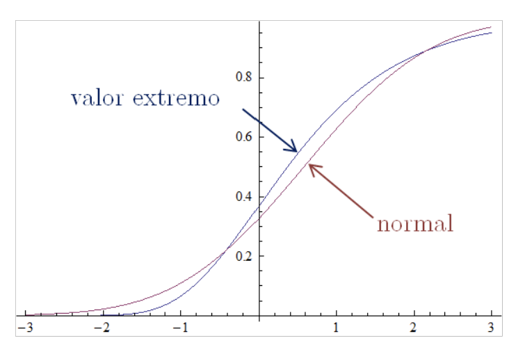
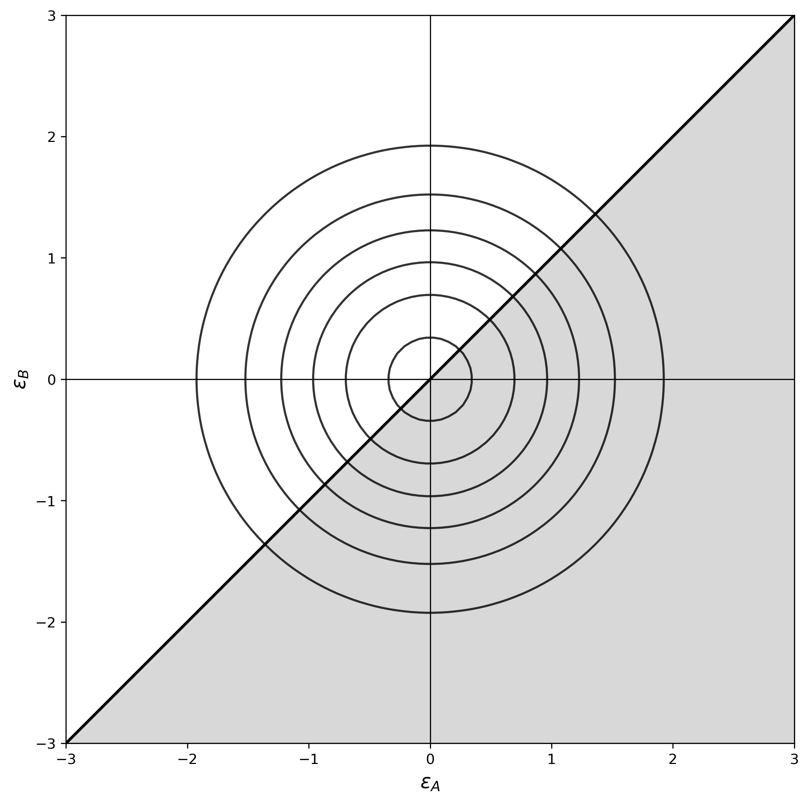
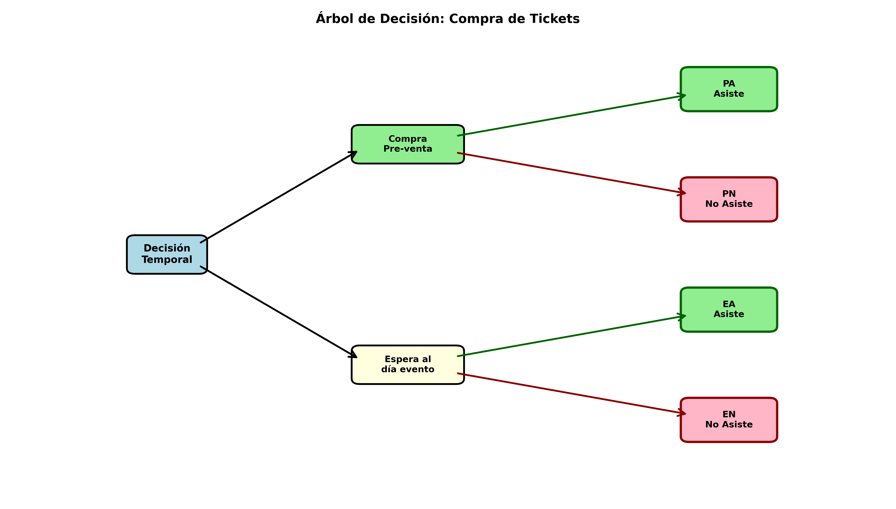

Capítulo 3 Modelos Estructurales
Para qué sirve esta unidad. En marketing, resulta frecuente necesitar modelos que vayan más allá de la simple descripción de correlaciones entre variables observables. Los modelos estructurales derivan relaciones estimables a partir de supuestos explícitos sobre el comportamiento de los agentes —típicamente, maximización de utilidad— lo que permite interpretar los parámetros en términos de valoraciones, elasticidades y disposición a pagar, así como evaluar contrafactuales que apoyen el diseño de estrategias comerciales.
Habilidades previas requeridas. Probabilidad y distribuciones (normal, valor extremo), estimación por máxima verosimilitud (MLE), regresión lineal y logística, álgebra matricial básica.
Qué debería poder hacer el estudiante al terminar.
- Formular modelos de utilidad aleatoria para problemas de elección discreta en marketing.
- Derivar las probabilidades de elección para los modelos logit, probit, nested logit y mixed logit.
- Estimar modelos de elección discreta mediante MLE y máxima verosimilitud simulada (SMLE).
- Evaluar la calidad de los modelos con \(\rho\) de McFadden, AIC, BIC y test de razón de verosimilitud.
- Calcular elasticidades propias y cruzadas, así como la disposición a pagar (WTP) por atributos.
- Incorporar dinámica limitada —persistencia de elección y precios de referencia— en modelos de panel.
Conexión con ejercicios. Al final del capítulo se incluyen problemas teóricos (P1–P6) con soluciones y problemas aplicados (PA1) que permiten consolidar los conceptos presentados.
Purpose of this unit. In marketing, models that go beyond describing correlations among observable variables are frequently needed. Structural models derive estimable relationships from explicit assumptions about agents’ behavior —typically, utility maximization— which allows interpreting parameters in terms of valuations, elasticities, and willingness to pay, as well as evaluating counterfactuals that support the design of commercial strategies.
Required background. Probability and distributions (normal, extreme value), maximum likelihood estimation (MLE), linear and logistic regression, basic matrix algebra.
What the student should be able to do upon completion.
- Formulate random utility models for discrete choice problems in marketing.
- Derive the choice probabilities for the logit, probit, nested logit, and mixed logit models.
- Estimate discrete choice models via MLE and simulated maximum likelihood (SMLE).
- Assess model quality using McFadden’s \(\rho\), AIC, BIC, and the likelihood ratio test.
- Compute own and cross elasticities as well as willingness to pay (WTP) for attributes.
- Incorporate limited dynamics —choice persistence and reference prices— in panel models.
Connection with exercises. The end of the chapter includes theoretical problems (P1–P6) with solutions and applied problems (PA1) that allow consolidating the concepts presented.
3.1 Introducción a modelos estructurales
3.1.1 Modelos estructurales versus forma reducida
En esencia, un modelo econométrico estructural es aquel que deriva relaciones estimables estadísticamente a partir de supuestos bien definidos de comportamiento de los agentes que deciden respecto a las cantidades observables. En contraposición a los modelos estructurales están los modelos de forma reducida donde los modelos simplemente describen la variabilidad de alguna medida de interés en base a un conjunto de variables observables exógenas.
In essence, a structural econometric model is one that derives statistically estimable relationships from well-defined assumptions about the behavior of agents deciding over observable quantities. In contrast, reduced-form models simply describe the variability of some outcome of interest based on a set of exogenous observable variables.
La disciplina económica suele llamar modelos estructurales a los resultantes de asumir que los consumidores maximizan una utilidad subyacente y que las firmas maximizan su rentabilidad esperada. Desde el marketing, se considera también en la definición aquellos que postulan hipótesis alternativas de comportamiento incluyendo así una variedad de teorías de comportamiento que nutren la disciplina tales como teoría de prospectos (Kahneman & Tversky, 1979), contabilidad mental, elección sobre conjuntos de consideración, etc. Como se discutirá más adelante, no existe un modelo estructural puro y la línea que los separa de los modelos de forma reducida es ciertamente difusa.
Se incluirá en la discusión de modelos estructurales a cualquiera que considere alguna historia de comportamiento que permita añadir interpretabilidad a los parámetros del modelo.
Economics often refers to as structural those models that result from assuming that consumers maximize an underlying utility and that firms maximize expected profitability. In marketing, the definition also includes models that posit alternative behavioral hypotheses, thereby incorporating theories such as prospect theory (Kahneman & Tversky, 1979), mental accounting, choice over consideration sets, and others. As will be discussed later, there is no purely structural model, and the line separating structural from reduced-form models is certainly blurred.
The discussion will therefore include any model that incorporates some behavioral story that adds interpretability to the model parameters.
3.1.2 Ejemplos motivadores
Ejemplo 1: Supóngase que un analista busca estudiar cómo el precio en la región \(i\) \((p_i)\) se ve afectado por la presencia o no de competencia. Si además de los precios se observa la cantidad de clientes en la región \((POP_i)\), el ingreso per cápita en la región \((INC_i)\) y una indicatriz \(CMP_i\) que toma el valor 1 si en la región correspondiente presenta competencia (0 en caso contrario).
Entonces, un modelo de forma reducida sencillo para estudiar el problema viene dado por:
Example 1. Suppose an analyst wants to study how price in region \(i\) \((p_i)\) is affected by the presence or absence of competition. In addition to prices, the analyst observes the number of customers in the region \((POP_i)\), per-capita income in the region \((INC_i)\), and an indicator \(CMP_i\) that takes value 1 if the corresponding region has competition (0 otherwise).
Then, a simple reduced-form model for studying the problem is:
\[p_i = \beta_0+ \beta_1POP_i + \beta_2INC_i + \beta_3CMP_i + \varepsilon_i\]
Bajo este enfoque, se pueden usar técnicas de regresión tradicionales para estimar \(\beta_3\) que en principio indicaría el impacto de la competencia en el nivel de precios. Sin embargo, la presencia de competencia en un determinado mercado depende también del nivel de precios. Si los precios en una región son altos, la rentabilidad esperada por entrar también es alta motivando a potenciales competidores a participar. En consecuencia, un modelo como el planteado podría subestimar el efecto de la competencia.
Un modelo estructural buscaría derivar relaciones estimables a partir de supuestos básicos del comportamiento de la firma. Por ejemplo, se podría asumir que cada firma decide conjuntamente la entrada/salida de un mercado y los precios a cobrar de modo de maximizar la rentabilidad esperada.
Under this approach, traditional regression techniques may be used to estimate \(\beta_3\), which would in principle indicate the impact of competition on price levels. However, the presence of competition in a market also depends on price levels. If prices in a region are high, expected profitability from entering is also high, which encourages potential competitors to participate. Consequently, a model like this could underestimate the effect of competition.
A structural model would instead derive estimable relationships from basic assumptions about firm behavior. For example, one might assume that each firm jointly decides market entry/exit and prices so as to maximize expected profitability.
Ejemplo 2: Supóngase que se busca describir la productividad de los miembros de la fuerza de venta medida como número de unidades vendidas \(q\).
Example 2. Suppose one wants to describe the productivity of sales force members measured as number of units sold \(q\).
\[q=f(X,\beta)+\varepsilon\]
La especificación del término de error \(\varepsilon\) puede por sí solo permitir dar una interpretación estructural a los estimadores. Si simplemente se asume un error normalmente distribuido, entonces corresponderá simplemente a un ruido blanco y la regresión simplemente indicará a través de los parámetros \(\beta\) cómo las variables \(X\) en promedio afectan las ventas \(q\). Por el contrario, si se asume que el término \(\varepsilon\) considera además del ruido una componente no observable positiva asociada a la brecha de productividad de los miembros menos eficientes de la fuerza de venta, entonces la regresión describirá la frontera eficiente de ventas. Esto puede hacerse por ejemplo especificando que \(\varepsilon = \epsilon - \xi\) donde \(\epsilon\) está normalmente distribuida centrada en cero, pero \(\xi\) proviene de una normal truncada en los números positivos (este enfoque se le suele llamar de regresión estocástica de frontera).
The specification of the error term \(\varepsilon\) alone can provide a structural interpretation to the estimators. If one simply assumes a normally distributed error, it corresponds to white noise and the regression merely indicates through parameters \(\beta\) how variables \(X\) affect sales \(q\) on average. By contrast, if one assumes that \(\varepsilon\) contains, in addition to noise, a positive unobservable component associated with the productivity gap of the less efficient members of the sales force, then the regression describes the efficient sales frontier. This can be done, for example, by specifying that \(\varepsilon = \epsilon - \xi\), where \(\epsilon\) is normally distributed around zero but \(\xi\) comes from a normal distribution truncated on the positive numbers (this approach is often called stochastic frontier regression).
Ejemplo 3. Al describir la participación de mercado de distintas marcas, un enfoque de regresión flexible podría predecir participaciones fuera del rango \([0,1]\). Si en cambio se adopta el axioma de elección de Luce (Luce, 1959) —la probabilidad de elección depende del ratio entre la atracción de la alternativa y el atractivo total del conjunto— las participaciones quedan restringidas al rango admisible.
Example 3. When describing the market shares of different brands, a flexible regression approach might predict shares outside the \([0,1]\) range. If instead one adopts Luce’s choice axiom (Luce, 1959) —the choice probability depends on the ratio between the attraction of the alternative and the total attractiveness of the set— shares are constrained to the admissible range.
Ejemplo 4. La teoría económica predice que la demanda decrece con el precio. En situaciones con datos limitados, un modelo flexible puede estimar una relación positiva. La estructura permite restringir la búsqueda a modelos consistentes con la premisa teórica.
Example 4. Economic theory predicts that demand decreases with price. With limited data, a flexible model may estimate a positive relationship. Structure allows restricting the search to models consistent with the theoretical premise.
Ejemplo 5. Un retailer que vende a través de tienda física y sitio web evalúa reasignar el surtido entre canales. El análisis de ventas históricas por canal no permite predecir qué ocurriría al mover productos. Es necesario estimar primitivas de comportamiento —preferencias intrínsecas por canal y patrones de sustitución— que solo un modelo estructural puede proveer.
Example 5. A retailer selling through both a physical store and a website considers reallocating assortment across channels. Analyzing historical sales by channel does not allow predicting what would happen if products were moved. One needs to estimate behavioral primitives —intrinsic channel preferences and substitution patterns— that only a structural model can provide.
Ejemplo 6. En industrias con alta rotación de productos (moda, tecnología), los parámetros estables de la demanda —elasticidad al precio, factores estacionales, sustitución entre atributos— perduran más allá de un producto específico. El enfoque estructural apunta precisamente a estimar estos parámetros invariantes.
Example 6. In industries with high product turnover (fashion, technology), stable demand parameters —price elasticity, seasonal factors, attribute substitution— persist beyond any specific product. The structural approach aims precisely at estimating these invariant parameters.
3.1.3 Ventajas de los modelos estructurales
El gran desafío de la aplicación de modelos econométricos a problemas comerciales es enriquecer el conocimiento respecto a cómo se comportan los agentes relevantes del negocio, para así tomar decisiones más consistentes y más rentables. Desde este punto de vista, se apunta a modelos que describan la lógica que determina el comportamiento de los clientes y firmas más allá de simples correlaciones estadísticas entre las variables observables. En general, son varias las ventajas de usar modelos estructurales por sobre modelos de forma reducida:
La capacidad de contar una mejor historia del comportamiento de los agentes. Esto se expresa por la capacidad de interpretación directa de los parámetros del modelo. Mientras los parámetros asociados a enfoques de regresión tradicionales típicamente indican la magnitud en que en promedio varía alguna magnitud de interés ante variaciones de otra, los parámetros de un modelo estructural indican entre otros la valoración relativa de un atributo en la función de utilidad, los precios de referencia de un producto o la aversión al riesgo de un tomador de decisión. La provisión de una historia de comportamiento más completa no se deriva exclusivamente de la interpretación directa de los parámetros del modelo sino que también de la capacidad de derivar métricas complementarias tales como elasticidades y excedentes de consumidores. Más aún, se puede proyectar el comportamiento para calcular probabilidades y frecuencias de compra, participaciones de mercado, etc.
La generación de estimaciones consistentes con las expectativas de los analistas. Frecuentemente, al analizar los datos se quiere dejar la mayor libertad posible al modelo para dejar que la data hable. Este enfoque puede tener valor y ser recomendable en estudios exploratorios, pero para tomar decisiones se necesitan estimaciones robustas y usar tanta información como sea posible. Las teorías usadas para derivar modelos econométricos estructurales suelen estar soportadas tanto por estudios experimentales como por amplia evidencia empírica en múltiples dominios. Por lo tanto, al incorporar teoría se está implícitamente usando información que ha demostrado consistentemente su validez.
Evaluación de impacto de modificación de políticas. Una de las herramientas fundamentales de la función comercial es la generación de planes comerciales que buscan proponer un diseño del conjunto producto, plaza, precio y promoción que genere el mayor valor para el cliente y la captura del mayor excedente por parte de la firma. El rol de los modelos econométricos es estudiar el impacto que tendrían distintas estrategias en el comportamiento del consumidor. En esencia, un plan de marketing propone un cambio en las reglas del juego que han generado la data que se observa y por tanto se necesita apuntar a estimar los elementos más básicos del comportamiento que se mantendrán invariantes ante modificación de productos, precios, canales de distribución, etc. En este grupo se tienen valoraciones por atributos de productos, costo de transporte, aversión al riesgo, entre otros, que no pueden ser estimados a menos que se derive el modelo a partir de teorías individuales de comportamiento. En otras palabras, la derivación de modelos de demanda a partir de teorías de comportamiento permite evaluar contrafactuales que apoyan el diseño de propuestas de valor efectivas.
Testear aplicabilidad de teoría. Al usar un enfoque estructural, se fuerza a pensar detalladamente respecto al problema y explicitar cada uno de los supuestos de comportamiento. Las especificaciones alternativas de modelos de forma reducida simplemente corresponden a formas funcionales diferentes y por tanto no son informativas respecto a la lógica en que deciden los agentes. Por otra parte, dos modelos estructurales diferentes provienen de supuestos de comportamiento diferentes y por tanto cuando uno de ellos ajusta mejor a la data indica que hay una teoría de comportamiento que es más plausible que la otra en el dominio de aplicación del modelo. Así, los modelos estructurales no solo se nutren de teoría sino que también ayudan a su desarrollo.
The great challenge in applying econometric models to commercial problems is to enrich our knowledge of how the relevant agents in the business behave, so as to make decisions that are more consistent and more profitable. From this perspective, the goal is to build models that describe the logic determining the behavior of customers and firms beyond simple statistical correlations among observable variables. In general, there are several advantages to using structural models over reduced-form ones:
The ability to tell a better behavioral story. This is reflected in the direct interpretability of model parameters. While parameters in traditional regression approaches typically indicate how much some quantity of interest changes on average when another varies, the parameters of a structural model may indicate, among other things, the relative valuation of an attribute in the utility function, reference prices for a product, or the risk aversion of a decision maker. A richer behavioral story comes not only from the direct interpretation of the parameters, but also from the ability to derive complementary metrics such as elasticities and consumer surplus. Moreover, one can project behavior to compute purchase probabilities and frequencies, market shares, and so on.
The generation of estimates that are consistent with analysts’ expectations. Analysts often want to leave the model as much freedom as possible to let the data speak. This approach may be valuable and appropriate in exploratory studies, but decision making requires robust estimates and the use of as much information as possible. The theories used to derive structural econometric models are usually supported both by experimental studies and by broad empirical evidence across many domains. Therefore, incorporating theory implicitly uses information that has consistently proved valid.
Evaluation of the impact of policy changes. One of the central tools of the commercial function is the design of marketing plans that propose a product-place-price-promotion mix generating the highest value for the customer and the greatest surplus capture for the firm. The role of econometric models is to study the impact that different strategies would have on consumer behavior. In essence, a marketing plan proposes a change in the rules of the game that generated the observed data, so the goal is to estimate the most basic elements of behavior that will remain invariant to changes in products, prices, distribution channels, and so on. This includes attribute valuations, transport costs, risk aversion, among others, which cannot be estimated unless the model is derived from individual behavioral theories. In other words, deriving demand models from behavioral theories makes it possible to evaluate counterfactuals that support the design of effective value propositions.
Testing the applicability of theory. A structural approach forces one to think carefully about the problem and to make explicit each behavioral assumption. Alternative reduced-form specifications are simply different functional forms and therefore are not informative about the logic by which agents decide. By contrast, two different structural models arise from different behavioral assumptions, so when one fits the data better it indicates that one behavioral theory is more plausible than another in the application domain. Thus, structural models do not merely draw from theory; they also help develop it.
Las ventajas antes descritas no implican que siempre deban preferirse modelos estructurales por sobre los de forma reducida. Como se ha descrito, los modelos de forma reducida suelen proveer suficiente flexibilidad para dejar que sea la data la que hable, lo que puede ser particularmente útil en análisis exploratorios del caso bajo estudio. Además, muchas veces la inclusión de más estructura en el modelo implica rutinas de estimación más sofisticadas siendo con frecuencia altamente intensivas computacionalmente.
Es importante destacar que no existe un modelo puramente estructural. Todo modelo requiere en algún momento suponer alguna forma funcional flexible sin fundamento teórico sólido. Por ejemplo, se puede asumir que los consumidores al elegir un producto están maximizando una utilidad subyacente, pero ¿cómo describir dicha función de utilidad? ¿Qué variables explicativas usar y cuál forma funcional escoger? Ciertamente la especificidad de las teorías disponibles no alcanza a responder a estas preguntas y se debe por lo tanto escoger en base a la intuición y empíricamente entre aquellas que generen mejor ajuste y/o capacidad de pronóstico. De esta forma, un buen modelo debe balancear adecuadamente el uso de la teoría con la simpleza y flexibilidad del modelo.
Para ser convincente, un modelo estructural debe al menos (i) entregar suficiente flexibilidad para aprender de la data, (ii) derivar las ecuaciones de comportamiento de supuestos razonables respecto de los agentes involucrados y (iii) incorporar explícitamente en la descripción la naturaleza no experimental de la data.
Observación: En la discusión se ha hecho la distinción entre modelos probabilísticos y modelos estructurales. Aunque los modelos probabilísticos proveen una historia de comportamiento de los agentes, los supuestos básicos usados para derivarlos no se sustentan en ninguna teoría de comportamiento. Por ejemplo, en modelos de duración en tiempo discreto se suele suponer que los clientes dejan de estar activos con cierta probabilidad. Más que una teoría de comportamiento esto es simplemente una descripción probabilística de un fenómeno. En determinadas situaciones, especialmente en casos en que no se dispone de una descripción rica del ambiente en que los agentes toman sus decisiones, se conforma con esta descripción agregada del comportamiento. El enfoque estructural sobre el que se ahondará en esta parte resulta particularmente útil cuando se tiene suficiente información para investigar las motivaciones profundas de las elecciones. Al definir un modelo estructural, tanto las teorías de comportamiento como la descripción probabilística del sistema son fuentes válidas de estructura. Sin embargo, se considerará como modelo econométrico estructural a aquellos que se nutren de ambas fuentes.
The advantages described above do not imply that structural models should always be preferred over reduced-form ones. As discussed, reduced-form models often provide enough flexibility to let the data speak, which can be particularly useful in exploratory analyses of the case under study. In addition, incorporating more structure into the model often implies more sophisticated estimation routines and is frequently highly computationally intensive.
It is important to emphasize that there is no purely structural model. Every model requires, at some point, assuming a flexible functional form without solid theoretical grounding. For example, one may assume that consumers maximize an underlying utility when choosing a product, but how should that utility function be described? Which explanatory variables should be used, and which functional form should be chosen? Available theories are typically not specific enough to answer these questions, so one must choose based on intuition and empirical performance among those specifications delivering better fit and/or forecasting ability. In this way, a good model must properly balance theory, simplicity, and flexibility.
To be convincing, a structural model must at least (i) provide sufficient flexibility to learn from the data, (ii) derive behavioral equations from reasonable assumptions about the agents involved, and (iii) explicitly incorporate the non-experimental nature of the data.
Remark: The discussion has distinguished between probabilistic and structural models. Although probabilistic models provide a behavioral story, the basic assumptions used to derive them are not grounded in a behavioral theory. For example, in discrete-time duration models it is common to assume that customers become inactive with some probability. More than a behavioral theory, this is simply a probabilistic description of a phenomenon. In some situations, especially when a rich description of the environment in which agents make decisions is not available, this aggregate description of behavior may be sufficient. The structural approach developed in this chapter is particularly useful when there is enough information to investigate the deeper motivations behind choices. When defining a structural model, both behavioral theories and the probabilistic description of the system are valid sources of structure. However, we will regard as structural econometric models those drawing on both sources.
3.1.4 Modelos estructurales en marketing
El desarrollo de modelos estructurales se ha gestado en varias áreas del conocimiento tales como economía, transportes, logística, finanzas y marketing. Entre estas áreas, la del marketing se ha constituido en un terreno particularmente fértil para el desarrollo y adopción del enfoque estructural. Se identifican al menos cuatro motivos por los cuales la adición de estructura en los modelos econométricos es particularmente útil para el análisis de problemas comerciales:
Disponibilidad de datos. Gran parte de los datos que registran las compañías dan cuenta de las interacciones entre clientes y firma como son ocasiones de compra, visitas a sitios web corporativos o llamadas a los centros de llamadas. De esta forma, un conjunto importante de los datos disponibles dentro de las organizaciones son informativos respecto a procesos claves de la función comercial. Así, los requerimientos de datos impuestos por los modelos estructurales están inmediatamente satisfechos por procesos operacionales.
Atractivo de la evaluación de la intervención de sistemas. En la función comercial, casi por definición se busca perturbar los sistemas para mejorar la oferta de valor cambiando precios, proponiendo nuevos diseños de productos, redefiniendo la cadena logística, etc. De esta forma se necesita disponer de modelos que describan la reacción de los consumidores ante dichos cambios del ambiente competitivo lo que, de acuerdo a la crítica de Lucas (Robert E. Lucas, 1976), solo puede hacerse con un modelo estructural.
Importancia de heterogeneidad. En marketing se busca hacer inferencia desagregada a nivel de cliente o segmento para poder diseñar versiones especializadas del marketing mix que sean atractivas para segmentos específicos de clientes. Como los modelos estructurales requieren especificar los supuestos de comportamiento a nivel individual, la generación de estimaciones desagregadas suele derivarse directamente.
Pragmatismo en la aceptación de teorías. Como se ha argumentado, una de las ventajas de los modelos estructurales es que permiten testear si una determinada teoría de comportamiento aplica a una situación. A diferencia de otras disciplinas, en marketing hay una tradición de revisión continua de las fuerzas que moldean el comportamiento de las personas y por tanto el enfoque de modelos estructurales entrega una herramienta alternativa a la verificación experimental de nuevas teorías.
The development of structural models has taken place across several areas of knowledge such as economics, transportation, logistics, finance, and marketing. Among these areas, marketing has become a particularly fertile ground for the development and adoption of the structural approach. At least four reasons explain why adding structure to econometric models is particularly useful for the analysis of commercial problems:
Data availability. A large share of the data recorded by firms documents interactions between customers and the firm, such as purchase occasions, visits to corporate websites, or calls to call centers. Thus, an important part of the data available inside organizations is informative about key commercial processes. The data requirements imposed by structural models are therefore often immediately satisfied by operational processes.
Appeal of evaluating system interventions. In the commercial function, almost by definition, one seeks to perturb systems to improve the value proposition by changing prices, proposing new product designs, redefining the logistics chain, and so on. This requires models that describe consumers’ reactions to such changes in the competitive environment, which, according to Lucas’s critique (Robert E. Lucas, 1976), can only be done with a structural model.
Importance of heterogeneity. In marketing, one seeks disaggregated inference at the customer or segment level in order to design specialized versions of the marketing mix that are attractive to specific customer segments. Since structural models require specifying behavioral assumptions at the individual level, the generation of disaggregated estimates often follows directly.
Pragmatism in accepting theories. As argued above, one of the advantages of structural models is that they allow researchers to test whether a particular behavioral theory applies in a given situation. Unlike other disciplines, marketing has a tradition of continually revisiting the forces that shape human behavior, so the structural approach provides an alternative to the experimental verification of new theories.
3.1.5 Taxonomía de modelos estructurales
Metodológicamente, es útil generar una clasificación de los tipos de modelos estructurales existentes en la literatura. Como se ha consignado, uno de los costos de la inclusión de teoría en modelos econométricos es la mayor complejidad en las rutinas de estimación. Es esta complejidad la que dificulta la generación de un mecanismo único que permita estimar modelos generales y por tanto se ve forzado a usar metodologías específicas dependiendo de la naturaleza del problema. En la discusión se basará la clasificación en la evaluación de cuatro factores.
Nivel de agregación de los datos. Se ha propuesto que un modelo estructural debe basarse en una descripción detallada de los supuestos de los tomadores de decisión a nivel individual. Por lo tanto, la disponibilidad de datos a nivel individual como la decisión de compra de cada uno de los individuos de un panel de consumidores habilita para, imponiendo las restricciones de identificación necesarias, estimar los parámetros de comportamiento de manera más o menos directa. Sin embargo, en ciertas situaciones solo se dispone de información agregada, como participaciones de mercado o datos agregados de venta. En estos casos, la identificación de parámetros de comportamiento requiere además de una descripción del mecanismo mediante el cual se agregan las decisiones individuales. Este mecanismo típicamente considera la especificación de un modelo de heterogeneidad describiendo como se distribuyen los parámetros entre los clientes la que se integra sobre la población para generar las métricas agregadas. Esto es precisamente lo propuesto por el método BLP de Berry, Levinsohn y Pakes (Berry et al., 1995), que describe un método que, basado en un modelo logit, permite estimar ofertas y demandas de un modelo oligopólico con información agregada. Por simplicidad, en esta versión se concentrará en modelos estimables directamente sobre datos desagregados a nivel individual.
Temporalidad de las decisiones. Dependiendo de la amplitud temporal considerada por los agentes al evaluar las alternativas de decisión, se distingue entre problemas estáticos y dinámicos. Básicamente, si se considera que las acciones que se observan resultan de una evaluación completa del horizonte, entonces se habla de problemas dinámicos. En caso contrario, se dice que el problema es estático. La distinción es importante desde un punto de vista metodológico. Si el tomador de decisiones basa sus decisiones exclusivamente mirando el pasado, entonces estas decisiones pueden caracterizarse directamente mediante condiciones de optimidad sencillas. Por el contrario, si el tomador de decisión además evalúa las repercusiones (inciertas) que sus acciones de hoy podrían tener en su bienestar futuro, entonces se necesita caracterizar las políticas óptimas a través de ecuaciones de Bellman que incorporen explícitamente la naturaleza multiperiodo del problema. En este caso, para encontrar la política óptima del problema se requiere usar técnicas como programación dinámica estocástica o control óptimo, aumentando de manera importante la complejidad computacional de la estimación.
Naturaleza de las variables de decisión. Si las variables sobre las que deciden los agentes son continuas (gasto, montos de inversión, unidades compradas, etc.), se habla de un modelo de decisión continuo. Si las variables sobre las que deciden los agentes son discretas (si visita o no visita la tienda, si elige la marca A o marca B, etc.), se habla de un modelo de decisión discreto. La distinción es relevante en cuanto las soluciones de un problema de decisión continua pueden caracterizarse directamente mediante condiciones de Karush-Kuhn-Tucker, mientras que las soluciones de un problema de decisión discreta requieren una enumeración del valor de las alternativas.
Identidad de los agentes. Los modelos estructurales pueden usarse para estudiar tanto el comportamiento de los clientes como de las otras firmas en el mercado. El área que estudia el comportamiento de las firmas ha tenido un gran desarrollo en los últimos años y se conoce como organización industrial empírica. En esta versión, se concentrará la discusión en el estudio de los clientes por dos motivos principales: la disponibilidad de datos de comportamiento de cliente y la simpleza de las nociones de equilibrio requeridas para describir a los clientes. Mientras cada cliente suele tener poco poder de mercado por si mismo, las acciones de marketing de las firmas competidoras típicamente pueden modificar de manera importante las condiciones del mercado. Así, la descripción de las decisiones de las firmas conlleva desafíos metodológicos importantes como la inclusión de nociones sofisticadas de equilibrio para internalizar que las decisiones de las firmas resultan tanto de mirar las respuestas esperadas de los clientes como las reacciones estratégicas de los competidores.
Metodológicamente es útil también distinguir los métodos de estimación de los modelos. La literatura reconoce dos grandes enfoques para estimar modelos estructurales como los aquí presentados: método de los momentos generalizados (GMM) y método de la máxima verosimilitud. Dada su eficiencia estadística (en el sentido que usa toda la información disponible), en esta primera versión se usará solo el método de la máxima verosimilitud. En lo que sigue se enfocará la discusión al estudio del comportamiento de clientes, en problemas estáticos (o con dinámica limitada a la incorporación del pasado) y con datos desagregados. Partiremos describiendo brevemente modelos de decisión continuos para luego iniciar una discusión más extensa en modelos de decisión discreta que tienen una tradición más larga en marketing.
Methodologically, it is useful to generate a classification of the types of structural models found in the literature. As noted above, one of the costs of including theory in econometric models is the greater complexity of estimation routines. This complexity makes it difficult to generate a single mechanism capable of estimating general models, and therefore one is forced to use specific methodologies depending on the nature of the problem. The classification below is based on four factors.
Level of data aggregation. A structural model should be based on a detailed description of the assumptions made about decision makers at the individual level. Therefore, the availability of individual-level data, such as purchase decisions in a consumer panel, makes it possible, subject to the necessary identification restrictions, to estimate behavioral parameters more or less directly. However, in some situations only aggregate information is available, such as market shares or aggregate sales data. In those cases, identifying behavioral parameters requires a description of the mechanism by which individual decisions are aggregated. This mechanism typically involves specifying a model of heterogeneity that describes how parameters are distributed across customers and integrating over the population to generate aggregate metrics. This is precisely what the BLP method of Berry, Levinsohn, and Pakes (Berry et al., 1995) does, using a logit-based framework to estimate supply and demand in oligopolies with aggregate information. For simplicity, this version concentrates on models estimable directly on disaggregated individual-level data.
Temporality of decisions. Depending on the temporal horizon that agents consider when evaluating decision alternatives, one distinguishes between static and dynamic problems. Roughly speaking, if observed actions result from a full evaluation of the horizon, the problem is dynamic; otherwise it is static. This distinction matters methodologically. If the decision maker bases decisions only on the past, then those decisions can be characterized directly through simple optimality conditions. By contrast, if the decision maker also evaluates the uncertain effects that today’s actions may have on future well-being, then optimal policies must be characterized through Bellman equations that explicitly incorporate the multiperiod nature of the problem. In that case, solving for the optimal policy requires techniques such as stochastic dynamic programming or optimal control, substantially increasing computational complexity.
Nature of decision variables. If the variables over which agents decide are continuous (expenditure, investment amounts, units purchased, etc.), one speaks of a continuous decision model. If they are discrete (whether to visit a store, whether to choose brand A or brand B, etc.), one speaks of a discrete decision model. The distinction is relevant because the solutions to a continuous decision problem can be characterized directly by Karush-Kuhn-Tucker conditions, whereas the solutions to a discrete decision problem require enumeration of the value of the alternatives.
Identity of the agents. Structural models can be used to study both customer behavior and the behavior of other firms in the market. The area that studies firm behavior has developed strongly in recent years and is known as empirical industrial organization. In this version, the discussion focuses on customers for two main reasons: the availability of customer-behavior data and the relative simplicity of the equilibrium concepts required to describe customers. While each customer typically has little market power on their own, the marketing actions of competing firms can substantially alter market conditions. Thus, describing firms’ decisions entails important methodological challenges, such as incorporating sophisticated equilibrium notions to internalize that firms’ decisions reflect both expected customer responses and strategic reactions from competitors.
Methodologically, it is also useful to distinguish the estimation methods used for these models. The literature recognizes two major approaches for estimating structural models such as those presented here: the generalized method of moments (GMM) and maximum likelihood. Given its statistical efficiency (in the sense that it uses all available information), this first version will use only maximum likelihood. The discussion that follows focuses on customer behavior, in static problems (or with dynamics limited to the incorporation of the past), and with disaggregated data. We begin by briefly describing continuous-decision models and then move to a more extensive discussion of discrete-choice models, which have a longer tradition in marketing.
3.2 Modelo logit
3.2.1 Modelos de elección discreta
Un modelo de elección discreta consiste básicamente en situaciones en que la naturaleza de las variables de decisión a las que se enfrenta el tomador de decisión son discretas. Para ilustrar la intuición de la diferencia con respecto a modelos de decisión continua, es útil pensar que mientras estos últimos buscan describir decisiones de “el cuánto”, los modelos de elección discreta se concentran en “el cuál”. La distinción además relevante desde un punto de vista metodológico. A diferencia de los modelos de elección continua en que la optimidad de la elección queda bien descrita por condiciones de primer orden, al enfrentar decisiones discretas caracterizaremos la optimidad por enumeración. Ejemplos típicos en que la decisión a evaluar es de naturaleza discreta incluye la elección de una marca por sobre otra en la góndola de un supermercado, la decisión de visitar o no a una tienda, la elección del color de una prenda de vestir, de un canal de venta y la elección de las firmas respecto a entrar o no entrar a un mercado.
A discrete choice model consists essentially of situations in which the nature of the decision variables faced by the decision maker is discrete. To build intuition relative to continuous decision models, it is useful to think that while the latter seek to describe decisions about “how much”, discrete choice models focus on “which one”. The distinction is also relevant from a methodological standpoint. Unlike continuous-choice models, in which optimality is well described by first-order conditions, with discrete decisions optimality will be characterized by enumeration. Typical examples include choosing one brand over another on a supermarket shelf, deciding whether or not to visit a store, choosing the color of a garment or a sales channel, and firms’ decisions about whether or not to enter a market.
Para que un problema de elección discreta esté bien definido, se necesita, además de variables de decisión discretas, que el conjunto de alternativas presente las siguientes tres características:
Exhaustivas: El conjunto sobre el que los tomadores de decisión eligen deben incluir todas las alternativas posibles. En otras palabras, cualquiera sea la decisión observada, debe estar incluida en el conjunto de elección. Esta condición es poco restrictiva ya que siempre es posible incluir en el set de alternativas la posibilidad “ninguna de las anteriores” o similar que por definición incluya toda las otras posibilidades no consideradas en conjunto. Sin embargo, esta estrategia debe usarse con precaución. Por ejemplo, al estudiar la elección de marca en una categoría en que se observa que los clientes no siempre compran alguna de las marcas disponibles, se podría incluir la alternativa de no compra en el conjunto de elección. Si la proporción de no compras es alta en la muestra, la inclusión de la alternativa de no compra podría limitar la habilidad del modelo de aprender respecto a cómo los clientes eligen entre marcas. En este caso, podría convenir concentrarse en la elección de la marca condicional en haber hecho una compra en la categoría.
Mutuamente excluyentes: El conjunto de decisión debe definirse de modo que en cada ocasión el tomador de decisión seleccione solo una de las alternativas disponibles. Esto es, la elección de una alternativa implica necesariamente la no elección de cualquiera de las alternativas restantes. Aunque aparentemente restrictiva, la definición de conjunto de elección puede acomodarse para generar conjuntos mutuamente excluyentes. Por ejemplo, considérese un modelo para describir la elección de los clientes entre la tienda física tradicional o la tienda virtual. Si simplemente se permite una alternativa de elección por cada canal, entonces se excluye la posibilidad de que un mismo cliente esté en más de un canal al mismo tiempo. Para incorporar esta posibilidad, se debe redefinir las alternativas agregando la opción de tienda tradicional y virtual.
Finito: El conjunto de decisión debe contener un conjunto finito de alternativas. Esta condición es importante por dos motivos técnicos. Primero, un conjunto finito facilita la evaluación de la optimidad de las decisiones y, segundo, facilita la definición de probabilidades de elección. Existen situaciones en que la decisión teóricamente permite infinitas posibilidades, pero que en la práctica se concentran en un número reducido de alternativas y, por tanto, quedan bien representadas por un modelo de elección discreta. Por ejemplo, se puede usar el número de cajas de cereal compradas por los clientes en cada visita al supermercado. Aunque teóricamente los clientes siempre podrían comprar una unidad adicional, el problema queda bien descrito considerando sólo las alternativas de 0, 1, 2, 3 o más de 3 cajas.
For a discrete choice problem to be well defined, in addition to discrete decision variables, the choice set must satisfy the following three characteristics:
Exhaustive: The set over which decision makers choose must include all possible alternatives. In other words, whatever decision is observed must be included in the choice set. This condition is not very restrictive because one can always include a “none of the above” option or similar, which by definition covers all other possibilities not explicitly considered. However, this strategy must be used with caution. For example, when studying brand choice in a category where customers do not always buy one of the available brands, one could include a no-purchase option in the choice set. If the proportion of no-purchases is high, this may limit the model’s ability to learn how customers choose among brands. In that case, it may be preferable to focus on brand choice conditional on having made a purchase in the category.
Mutually exclusive: The choice set must be defined so that in each occasion the decision maker selects only one of the available alternatives. That is, choosing one alternative necessarily implies not choosing any of the remaining alternatives. Although this may appear restrictive, the choice set can be redefined to accommodate mutually exclusive alternatives. For example, consider a model describing customer choice between a traditional physical store and a virtual store. If one simply allows one alternative per channel, then the possibility that the same customer is in more than one channel at the same time is excluded. To incorporate this possibility, the alternatives must be redefined by adding the option traditional and virtual store.
Finite: The choice set must contain a finite set of alternatives. This condition matters for two technical reasons. First, a finite set facilitates evaluating optimality; second, it facilitates defining choice probabilities. There are situations in which the decision theoretically allows infinitely many possibilities but, in practice, concentrates on a reduced number of alternatives and is therefore well represented by a discrete choice model. For example, one can use the number of cereal boxes purchased in each supermarket visit. Although customers could in theory always buy one more unit, the problem is well described by considering only the alternatives 0, 1, 2, 3, or more than 3 boxes.
Utilidad aleatoria
Un modelo estructural para describir la probabilidad de elegir cada alternativa necesita especificar el mecanismo que usan los agentes para decidir entre las alternativas. Se partirá asumiendo que, en cada oportunidad de compra \(t\), el tomador de decisión \(n\) elige la alternativa \(i\) que le reporta mayor utilidad \(u_{nit}\). Pese a que el tomador de decisión necesita conocer la utilidad que deriva de cada una de las alternativas, desde la perspectiva del analista solo se observan algunas características del ambiente de decisión y del tomador de decisión a partir de las cuales se puede intentar aproximar la utilidad del tomador de decisión a través de una función \(v_{nit}(x_{nit}, \theta)\) donde \(x_{nit}\) son las características observables del problema y \(\theta\) el vector de parámetros que se busca estimar y que describen la relación de dichas características con la utilidad.
A structural model that seeks to describe the probability of choosing each alternative must specify the mechanism that agents use to decide among the available alternatives. We begin by assuming that, at each purchase occasion \(t\), decision-maker \(n\) chooses alternative \(i\) if it delivers the highest utility \(u_{nit}\). Even though the decision maker needs to know the utility derived from each alternative, from the analyst’s perspective only some characteristics of the decision environment and the decision maker are observed. Based on that information, one can attempt to approximate utility through a function \(v_{nit}(x_{nit}, \theta)\) where \(x_{nit}\) are the observable characteristics of the problem and \(\theta\) is the parameter vector to be estimated, describing the relationship between those characteristics and utility.
\[u_{nit} = v_{nit} + \varepsilon_{nit} \tag{3.1}\]
Ejemplo: Supóngase que se quiere describir la elección del medio de pago que usan los usuarios de una tienda determinada, la que permite pagar en efectivo o con alguna tarjeta bancaria. El analista observa 3 variables que intuye pueden ser relevantes en la elección del medio de pago: el género del cliente (\(F_n = 1\) si cliente es de género femenino), su nivel de ingresos \((I_n)\) y el monto de la transacción \((M_{nt})\). Son precisamente estas características las que estarían incluidas en la matriz que se ha llamado \(x_{nit}\). A partir de esta información pueden plantearse múltiples modelos para describir \(v_{nit}\) (se asumirá que \(i = 0\) corresponde al caso de pago con efectivo mientras que \(i = 1\) al de pago con tarjeta).
- Modelo Lineal Homogéneo: Aquí, la utilidad para ambas alternativas crece linealmente con las variables observables. En este caso, los parámetros son los mismos para todos los tomadores de decisión y por tanto el vector de parámetros viene dado por \(\theta = (\alpha_0, \alpha_1, \beta, \gamma, \delta)\)
\[v_{nit} = \alpha_i + \beta F_n + \gamma I_n + \delta M_{nt}\]
- Modelo lineal heterogéneo: Aquí, la utilidad para ambas alternativas también crece linealmente con las variables observables, pero ahora los parámetros varían por alternativa y por agente, y por tanto el vector de parámetros viene dado por \(\theta = ( \{ \alpha_{1n} \} _{n=1}^{N}, \beta_0,\beta_1,\gamma_0,\gamma_1,\{ \delta_n \}_{n=1}^{N} )\)
\[v_{nit} = \alpha_{in} + \beta_i F_n + \gamma_i I_n + \delta_n M_{nt}\]
La definición de que los interceptos dependen del cliente \(n\) simplemente indica que cada cliente tiene una preferencia intrínseca por cada medio de pago. Del mismo modo, se está imponiendo que la influencia que tiene el monto en el atractivo que tiene cada alternativa depende del cliente. Por ejemplo, mientras para algunos clientes el monto de la transacción puede jugar un rol importante en la decisión del medio de pago, para otros este efecto podría no ser relevante. Por último, la dependencia de la alternativa en los parámetros asociados a género e ingreso podrían usarse para por ejemplo situaciones en que el nivel de ingreso afecta el atractivo de un medio de pago pero no del otro (la intuición para el género es análoga).
Por supuesto, también se pueden postular modelos no lineales u otras especificaciones de la heterogeneidad. Por ejemplo, que la influencia del ingreso varíe por medio de pago, pero que el efecto del género sea constante entre las alternativas. Descubrir la especificación que mejor describe el problema es precisamente la tarea del analista.
Observación: En el ejemplo se ha introducido brevemente el concepto de heterogeneidad. Sin embargo, para facilitar la exposición de los temas básicos, en primera instancia se concentrará en modelos sin heterogeneidad. En marketing, los modelos que incluyen heterogeneidad en las preferencias son tan importantes que se postergará su discusión en un capítulo separado.
En la práctica, aún en situaciones en que se observa con detalle el ambiente de decisión, no se podrá describir con exactitud todos los factores que gobiernan el comportamiento de los agentes. Por lo tanto, se definirá \(\varepsilon_{nit}\) como el error (aditivo) que se comete al aproximar \(u_{nit}\) a través de \(v_{nit}\).
La componente básica para estimar estadísticamente un modelo de elección discreta es la especificación de la probabilidad de elección de cada alternativa. Sea \(P_{nit}\) la probabilidad de que el agente \(n\) escoja la alternativa \(i\) en la oportunidad de compra \(t\). El supuesto de maximización de utilidades implica que \(P_{nit}\) puede escribirse como:
The systematic component is specified as a function \(v_{nit} = v(\mathbf{x}_{nit}, \boldsymbol{\theta})\), where \(\mathbf{x}_{nit}\) denotes the observable characteristics and \(\boldsymbol{\theta}\) the parameter vector to be estimated.
Example: Suppose one wants to describe the choice of payment method used by customers in a given store, which allows payment in cash or with a bank card. The analyst observes 3 variables that seem likely to be relevant for the payment decision: the customer’s gender (\(F_n = 1\) if the customer is female), income level \((I_n)\), and transaction amount \((M_{nt})\). These are precisely the characteristics that would be included in the matrix denoted \(x_{nit}\). Based on this information, multiple models can be proposed to describe \(v_{nit}\) (assuming that \(i = 0\) corresponds to cash payment and \(i = 1\) to card payment).
- Homogeneous linear model: Here, utility for both alternatives increases linearly with the observable variables. In this case, the parameters are the same for all decision-makers, so the parameter vector is given by \(\theta = (\alpha_0, \alpha_1, \beta, \gamma, \delta)\)
\[v_{nit} = \alpha_i + \beta F_n + \gamma I_n + \delta M_{nt}\]
- Heterogeneous linear model: Here, utility for both alternatives also increases linearly with the observable variables, but now the parameters vary by alternative and by agent, so the parameter vector is given by \(\theta = ( \{ \alpha_{1n} \} _{n=1}^{N}, \beta_0,\beta_1,\gamma_0,\gamma_1,\{ \delta_n \}_{n=1}^{N} )\)
\[v_{nit} = \alpha_{in} + \beta_i F_n + \gamma_i I_n + \delta_n M_{nt}\]
Allowing the intercepts to depend on customer \(n\) simply indicates that each customer has an intrinsic preference for each payment method. Likewise, this specification imposes that the influence of the transaction amount on the attractiveness of each alternative depends on the customer. For example, for some customers the transaction amount may play an important role in the payment-method decision, while for others this effect may be irrelevant. Finally, allowing the gender- and income-related parameters to depend on the alternative could be useful, for instance, in situations where income affects the attractiveness of one payment method but not the other (the intuition for gender is analogous).
Of course, nonlinear models or other heterogeneity specifications can also be proposed. For example, income may vary by payment method while the effect of gender remains constant across alternatives. Discovering the specification that best describes the problem is precisely the analyst’s task.
Remark: The example has briefly introduced the concept of heterogeneity. However, to facilitate the exposition of the basic topics, the initial discussion will focus on models without heterogeneity. In marketing, models that include heterogeneity in preferences are so important that their discussion is postponed to a separate chapter.
In practice, even in situations where the decision environment is observed in detail, it is not possible to describe exactly all the factors governing agents’ behavior. Therefore, \(\varepsilon_{nit}\) is defined as the (additive) error committed when approximating \(u_{nit}\) through \(v_{nit}\).
The basic component required to estimate a discrete-choice model statistically is the specification of the choice probability of each alternative. Let \(P_{nit}\) be the probability that agent \(n\) chooses alternative \(i\) at purchase occasion \(t\). The utility-maximization assumption implies that \(P_{nit}\) can be written as:
\[\begin{aligned} P_{nit} &= Pr(u_{nit}>u_{njt},\forall j \neq i)\\ &= Pr(v_{nit} + \varepsilon_{nit} >v_{njt} + \varepsilon_{njt} ,\forall j \neq i)\\ &= \int \mathbf{1} (\varepsilon_{njt} - \varepsilon_{nit} > v_{nit} - v_{njt}) f(\varepsilon_{nt}) d \varepsilon_{nt} \end{aligned} \tag{3.2}\]
donde \(\mathbf{1}(\cdot)\) toma el valor 1 si se cumple el argumento y el valor 0 en caso contrario. En esta expresión, \(\varepsilon_{nt} = (\varepsilon_{n1t},\varepsilon_{n2t}, ...,\varepsilon_{nIt})\) es el vector de las componentes aleatorias de la elección del agente \(n\) en la oportunidad \(t\), y \(f(\cdot)\) la función de densidad que describe su comportamiento probabilístico. La elección de la distribución de la componente aleatoria es importante en cuanto impone restricciones a los patrones de comportamiento que pueden ser capturados por el modelo. Se concentrará la atención en los casos en que \(\varepsilon_{nit}\) se distribuye valor extremo, que da origen al modelo logit, y normal, que da origen al modelo probit.
where \(\mathbf{1}(\cdot)\) takes value 1 when the argument holds and 0 otherwise. In this expression, \(\varepsilon_{nt} = (\varepsilon_{n1t},\varepsilon_{n2t}, ...,\varepsilon_{nIt})\) is the vector of random utility components for agent \(n\) at occasion \(t\), and \(f(\cdot)\) is the density function describing their probabilistic behavior. The choice of the error distribution is important because it imposes restrictions on the behavioral patterns that the model can capture. The discussion will focus on the cases in which \(\varepsilon_{nit}\) is distributed extreme value, giving rise to the logit model, and normal, giving rise to the probit model.
3.2.2 Derivación de la probabilidad logit
El modelo logit resulta de asumir que cada \(\varepsilon_{nit}\) es independientemente distribuido según una distribución Gumbel (valor extremo tipo I) (McFadden, 1974):
The logit model results from assuming that each \(\varepsilon_{nit}\) is independently distributed according to a Gumbel (type I extreme value) distribution (McFadden, 1974):
\[F(\varepsilon_{nit}) = e^{-e^{-\varepsilon_{nit}}}, \qquad f(\varepsilon_{nit}) = e^{-\varepsilon_{nit}} e^{-e^{-\varepsilon_{nit}}} \tag{3.3}\]
Bajo este supuesto, se puede demostrar que la probabilidad de elección en un modelo logit corresponde a una fórmula cerrada sencilla. Para simplificar la notación, sea \(s=\varepsilon_{nit}\).
Under this assumption, it can be shown that the choice probability in a logit model takes a simple closed-form expression. To simplify notation, let \(s=\varepsilon_{nit}\).
\[ \begin{aligned} P_{nit} &= \int_{-\infty}^{\infty} \left(\prod_{j\neq i} e^{-e^{-(s + v_{nit} - v_{njt})}}\right) e^{-s} e^{-e^{-s}}ds\\ &= \int_{-\infty}^{\infty} \left(\prod_{j} e^{-e^{-(s + v_{nit} - v_{njt})}}\right) e^{-s}ds\\ &= \int_{-\infty}^{\infty} exp\left(\sum_{j} e^{-(v_{nit} - v_{njt})}\right) e^{-s}ds \end{aligned} \]
Para resolver la integral, se puede recurrir a un cambio de variables \(t = e^{-s}\) y \(dt = e^{-s}ds\). Con esto:
To solve the integral, one can use the change of variables \(t = e^{-s}\) and \(dt = e^{-s}ds\). This yields:
\[\begin{aligned} P_{nit} &= \int_{\infty}^{0} -e^{t\sum_{j} e^{-(v_{nit} - v_{njt})}} dt\\ &= \frac{ e^{-(v_{nit} - v_{njt})}}{\sum_{j} e^{-(v_{nit} - v_{njt})}}\mid^{\infty}_{0}\\ &= \frac{e^{v_{nit}}}{\sum_j e^{v_{njt}}} \end{aligned} \tag{3.4}\]
En algunos libros de texto se justifica esta expresión simplemente como una regresión logística, esto es, una transformación lineal para normalizar la utilidad de modo de interpretarla directamente como una probabilidad de elección en el rango [0,1]. Aunque válido, resulta útil entender que, en efecto, dicha expresión puede derivarse a partir de supuestos de maximización de utilidades.
Para ganar algo de intuición respecto a la expresión de la probabilidad de elección, es útil graficarla con respecto a la utilidad derivada por cada alternativa. Por ejemplo, supóngase que se tiene una decisión binaria que, por ejemplo, corresponde a la decisión de comprar o no comprar un producto. En este caso, la probabilidad de comprar el producto crece sigmoidalmente con la utilidad derivada de la compra. Esto es, al graficar la probabilidad de compra con respecto a la utilidad derivada, se obtiene una curva S como muestra la Figura 1. En la figura, se ha agregado también la curva de la probabilidad de elección en el caso en que, en vez de asumir que el error se distribuye valor extremo como demanda el modelo logit, se asume que el error está normalmente distribuido como tradicionalmente se hace en otros modelos econométricos.
In some textbooks, this expression is justified simply as a logistic regression, that is, as a linear transformation used to normalize utility so that it can be interpreted directly as a choice probability in the range [0,1]. Although valid, it is useful to understand that this expression can in fact be derived from utility-maximization assumptions.
To build intuition for the choice-probability expression, it is useful to graph it with respect to the utility derived from each alternative. For example, suppose one has a binary decision such as whether or not to buy a product. In this case, the probability of purchase grows sigmoidally with the utility derived from buying. That is, graphing purchase probability against utility yields an S-shaped curve, as shown in Figure 1. The figure also includes the choice-probability curve that arises when, instead of assuming an extreme-value error as required by the logit model, one assumes a normally distributed error as is traditional in other econometric models.

Figure 3.1: Probabilidad de elección
3.2.3 Elasticidades
La disposición de una fórmula cerrada permite calcular métricas de sustitución de forma directa. Si \(v_{nit} = v(\mathbf{x}_{nit}, \boldsymbol{\theta})\), se obtienen las siguientes expresiones.
Recuerde que una de las motivaciones para el uso de modelos estructurales es la posibilidad de analizar contrafactuales, esto es, ver qué pasaría con el mercado si hay cambio en alguna variable de control interesante. Por ejemplo que pasa con las participaciones de mercado si sube el precio de una alternativa, si se aumenta la frecuencia publicitaria, etc. Las métricas recién presentadas permiten precisamente hacer dichas evaluaciones de manera directa.
The availability of a closed-form expression allows computing substitution metrics directly. If \(v_{nit} = v(\mathbf{x}_{nit}, \boldsymbol{\theta})\), the following expressions are obtained.
Recall that one of the motivations for using structural models is the possibility of analyzing counterfactuals, that is, asking what would happen in the market if some relevant control variable changed. For example, what happens to market shares if the price of an alternative increases, or if advertising frequency rises? The metrics presented here make those evaluations possible in a direct way.
Derivada propia (variación de \(P_{nit}\) ante un cambio en un atributo de la misma alternativa):
Own derivative (change in \(P_{nit}\) from a change in an attribute of the same alternative):
\[\frac{\partial P_{nit}}{\partial x_{nit}} = \frac{\partial v_{nit}}{\partial x_{nit}} \cdot P_{nit}(1 - P_{nit}) \tag{3.5}\]
Derivada cruzada (variación de \(P_{nit}\) ante un cambio en un atributo de otra alternativa \(j\)):
Cross derivative (change in \(P_{nit}\) from a change in an attribute of another alternative \(j\)):
\[\frac{\partial P_{nit}}{\partial x_{njt}} = -\frac{\partial v_{njt}}{\partial x_{njt}} \cdot P_{nit} \cdot P_{njt} \tag{3.6}\]
Elasticidad de la probabilidad de elegir la alternativa \(i\) con respecto a alguna componente de la utilidad de la misma alternativa.
Elasticity of the probability of choosing alternative \(i\) with respect to some component of the utility of that same alternative.
\[e_{ix_{nit}} = \frac{\partial P_{nit}}{\partial x_{nit}} \cdot \frac{x_{nit}}{P_{nit}} = \frac{\partial v_{nit}}{\partial x_{nit}} x_{nit} (1- P_{nit}) \tag{3.7}\]
Elasticidad de la probabilidad de elegir la alternativa \(i\) con respecto a alguna componente de la utilidad de otra alternativa.
Elasticity of the probability of choosing alternative \(i\) with respect to some component of the utility of another alternative.
\[e_{ix_{njt}} = \frac{\partial P_{nit}}{\partial x_{njt}} \cdot \frac{x_{njt}}{P_{nit}} = \frac{\partial v_{njt}}{\partial x_{njt}} x_{njt} P_{njt} \tag{3.8}\]
El modelo logit es bastante flexible para acomodar una amplia variedad de situaciones. En efecto, distintas especificaciones de las funciones de utilidades de las alternativas permiten describir múltiples fenómenos asociados a la elección. Sin embargo, es importante reconocer que los supuestos subyacentes al logit imponen importantes restricciones a cómo se describe la lógica en que los agentes evalúan las alternativas y escogen entre ellas.
Para fijar ideas, resulta útil pensar qué restricciones impone asumir que las componentes no observables de la utilidad son todas independientes entre ellas. El supuesto de independencia obliga a imponer que cualquier relación entre las utilidades de dos alternativas debe necesariamente capturarse a través de variables observables. Del mismo modo, las utilidades que se derivan por dos alternativas en ocasiones de elección diferentes solo pueden describirse a través de elementos que se puedan observar a lo largo del tiempo. Para entender mejor cómo estas limitaciones se materializan en la formulación del modelo, se discutirán formalmente tres características del modelo logit: la existencia de patrones de sustitución proporcional, la incapacidad de capturar tanto heterogeneidad aleatoria en las preferencias como componentes dinámicas no observables.
The logit model is quite flexible in accommodating a wide variety of situations. Indeed, different specifications of alternative utility functions allow the model to describe multiple phenomena associated with choice. However, it is important to recognize that the underlying logit assumptions impose important restrictions on how the logic by which agents evaluate and choose among alternatives is described.
To fix ideas, it is useful to think about what restrictions are imposed by assuming that the unobservable components of utility are all independent from one another. The independence assumption forces any relationship between the utilities of two alternatives to be captured through observable variables. Likewise, utilities derived from two alternatives in different choice occasions can only be described through elements that are observable over time. To better understand how these limitations materialize in model formulation, three characteristics of the logit model are discussed formally: proportional substitution patterns, the inability to capture random heterogeneity in preferences, and the inability to capture unobserved dynamic components.
3.2.4 Propiedades del modelo logit
Patrones de sustitución
Los patrones de sustitución derivados de un modelo logit son bastante peculiares y, aunque desde un punto de vista econométrico puede resultar beneficioso, desde el punto de vista de la investigación de teorías de comportamiento suele ser considerado como bastante restrictivo. Se entenderá por patrones de sustitución a la forma en que cambia la probabilidad de elección de alguna alternativa cuando se modifica el atractivo de otra alternativa. Para entender la naturaleza de los patrones de sustitución del modelo logit es útil calcular el ratio de las probabilidades de elección de dos alternativas cualquiera \(i\) y \(j\).
The substitution patterns derived from a logit model are quite peculiar and, although from an econometric perspective they may be beneficial, from the standpoint of researching behavioral theories they are usually regarded as rather restrictive. Substitution patterns refer to the way the probability of choosing one alternative changes when the attractiveness of another alternative changes. To understand the nature of logit substitution patterns, it is useful to compute the ratio of the choice probabilities of any two alternatives \(i\) and \(j\).
\[\frac{P_{ni}}{P_{nj}} = e^{v_{ni} - v_{nj}} \tag{3.9}\]
Este ratio solo depende de las utilidades observables de las dos alternativas consideradas lo que indica que la probabilidad relativa de elegir la alternativa \(i\) sobre la alternativa \(j\) no depende de que otras alternativas existan ni de los atributos que ellas tengan. Por ejemplo, si se agrega una alternativa al conjunto de elección, el ratio de probabilidades de las alternativas existentes se mantendrá constante independiente de las características de la nueva alternativa. Se referirá a esta característica como independencia de alternativas irrelevantes o IIA.
Para ejemplificar, considérese una botillería que ofrece dos variedades de vino, uno blanco y otro tinto. Supóngase además que estas dos alternativas tienen la misma participación de mercado, esto es la mitad de los clientes de la botillería compra vino blanco y la otra mitad compra vino tinto. En este caso, las utilidades sistemáticas debieran ser similares y, por tanto, el ratio de probabilidades de elección de vino blanco sobre vino tinto debiera acercarse a 1. Motivado por un mayor margen de los vinos tintos, el administrador de la botillería decide incorporar una nueva variedad de vino tinto. Intuitivamente se esperaría que, como la nueva variedad de vino tinto es un sustituto más cercano al tinto existente, la participación de mercado de este debiera decrecer más que la de vino blanco. Sin embargo, la propiedad de IIA impone que este ratio se mantiene constante. En otras palabras, la introducción de una nueva alternativa disminuirá la participación de todas la otras alternativas independiente de las similitudes que tengan. Esta última observación puede corroborarse calculando la elasticidad de sustitución \(E_{ix_{nj}}\) que determina como cambia la probabilidad de consumir la alternativa \(i\) ante un cambio en un atributo \(x_{nj}\) de la alternativa \(j\).
This ratio depends only on the observable utilities of the two alternatives being considered, which indicates that the relative probability of choosing alternative \(i\) over alternative \(j\) does not depend on what other alternatives exist or on the attributes they have. For example, if an alternative is added to the choice set, the ratio of probabilities of the existing alternatives remains constant regardless of the new alternative’s characteristics. This property is known as independence of irrelevant alternatives or IIA.
To illustrate, consider a liquor store that offers two varieties of wine, one white and one red. Suppose further that these two alternatives have the same market share, that is, half of the customers buy white wine and the other half buy red wine. In this case, the systematic utilities should be similar and, therefore, the ratio of the choice probabilities of white wine over red wine should be close to 1. Motivated by a higher margin on red wines, the store manager decides to introduce a new variety of red wine. Intuitively, one would expect that, because the new red wine is a closer substitute to the existing red, the market share of that red should decline more than that of white wine. However, the IIA property implies that this ratio remains constant. In other words, the introduction of a new alternative decreases the market share of all the other alternatives regardless of how similar they are. This can be verified by computing the substitution elasticity \(E_{ix_{nj}}\), which determines how the probability of consuming alternative \(i\) changes when an attribute \(x_{nj}\) of alternative \(j\) changes.
\[E_{ix_{nj}} = -\frac{\partial v_{nj}}{\partial x_{nj}}x_{nj} P_{nj}, \forall i \neq j\]
Esta expresión no depende de \(i\), por lo que es constante para todas las alternativas de elección. Luego, si ocurre una mejora en los atributos de una alternativa, la probabilidad de elección de las demás disminuye en el mismo porcentaje independiente de la similitud entre alternativas. Se referirá a esta característica como patrones de sustitución proporcionales.
Una ventaja de los patrones de sustitución del modelo logit es que permite que los parámetros del modelo sean estimados consistentemente en base a un subconjunto de las alternativas. Esto es particularmente útil en ambientes de decisión de marketing donde típicamente se encuentran centenas de productos que potencialmente pueden constituir alternativas de elección en una situación de compra. De esta forma, para estimar un modelo logit se pueden seleccionar conjuntos reducidos de alternativas que capturan los elementos esenciales de la elección e ignorar qué pasa con todas las otras alternativas.
This expression does not depend on \(i\), so it is constant across all choice alternatives. Therefore, if the attributes of one alternative improve, the choice probabilities of all the others decrease by the same percentage regardless of similarity between alternatives. This feature is referred to as proportional substitution patterns.
An advantage of the substitution patterns of the logit model is that they allow the parameters of the model to be estimated consistently based on a subset of the available alternatives. This is particularly useful in marketing decision environments, where one often encounters hundreds of products that could potentially form the choice set in a purchase situation. Thus, to estimate a logit model one can select reduced choice sets that capture the essential elements of choice and ignore what happens with all the other alternatives.
Incapacidad de capturar heterogeneidad aleatoria
La investigación de las diferencias entre las preferencias de los distintos clientes es un tema fundamental para el desarrollo de planes comerciales exitosos. Tradicionalmente se distinguen dos tipos de heterogeneidad de acuerdo a la capacidad de observación del analista. En un principio, se tiene el estudio de heterogeneidad observable que indica cómo las preferencias de los tomadores de decisiones varían de acuerdo a sus características medibles. Este tipo de heterogeneidad permite, por ejemplo, estudiar diferencias en las preferencias entre hombres y mujeres, por edad o por niveles de ingreso. Sin embargo, una proporción importante de las diferencias de las preferencias no es atribuible a características observables como las recién descritas. Otro ejemplo es que dos hermanos del mismo género, de edades similares, viviendo en el mismo hogar, pueden tener preferencias completamente diferentes respecto a sabores de yogur.
El resultado fundamental en esta sección indica que un modelo logit permite estudiar variaciones de preferencias asociadas a componentes observables, pero no a componentes no observables. Para ilustrar este resultado, supóngase un tomador de decisión caracterizado por la siguiente función de utilidad:
\[u_{nit} = \alpha_i + \beta_np_{it} + \varepsilon_{nit}\]
Es decir, la utilidad de cada alternativa tiene una componente base que es constante entre los tomadores de decisión y una penalización por precio \(p_{it}\) al que se enfrenta el tomador de decisión. Al indexar \(\beta_n\) por agente se está explícitamente permitiendo que algunos tomadores de decisión sean más sensibles al precio que otros. Supóngase que se postula que el coeficiente de precio viene dado por la siguiente ecuación de regresión.
\[\beta_n = \lambda_0 + \lambda_1I_n + \mu_n\]
Donde \(\lambda_0\) captura la sensibilidad base al precio, \(I_n\) el nivel de ingreso del agente \(n\) y \(\lambda_1\) el coeficiente que indica cómo dichos niveles de ingresos afectan la sensibilidad al precio. Por último, \(\mu_n\) es un valor aleatorio que captura todas las otras componentes que modifican la sensibilidad al precio más allá del nivel base y los ingresos.
\[ \begin{aligned} u_{nit} &= \alpha_i + (\lambda_0 + \lambda_1 I_n + \mu_n)p_{it} + \varepsilon_{nit}\\ &= \alpha_i + \lambda_0 p_{it} + \lambda_1p_{it}I_n + \xi_{nit} \end{aligned} \]
Donde \(\xi_{nit} = \mu_np_{it} + \varepsilon_{nit}\). De esta expresión debiera ser claro que la inclusión de heterogeneidad observable puede ser capturada bajo un enfoque logit. En efecto, los parámetros \(\alpha_i\), \(\lambda_0\) y \(\lambda_1\) dan cuenta respectivamente del nivel de utilidad base por alternativa, de la penalización por precio y de como dicha penalización se ve modificada por el nivel de ingresos. Lamentablemente, la variación aleatoria \(\mu_n\) no puede ser incluida, ya que su inclusión necesariamente implica que las componentes errores \(\xi_{nit}\) no están idénticamente distribuidas. En efecto, se puede mostrar que \(\mathbb{V}ar(\xi_{nit}, \xi_{njt}) = \mathbb{Var}(\mu_n)p^2_{it}\) que evidentemente varía entre alternativas. Más aún, también se puede mostrar que \(\mathbb{Cov}(\xi_{nit}, \xi_{njt}) = \mathbb{Var}(\mu_n)p_{it}p_{jt} \neq 0\), violando también el supuesto de independencia.
Es importante notar que la incapacidad de capturar aleatoriedad aplica también a componentes dinámicas. Esto es, al observar compras repetidas en el tiempo, el modelo logit no permite capturar que hay componentes no observables que varíen en el tiempo. Por ejemplo, no se puede incorporar que, debido a factores externos no observables, en algunos períodos algunas alternativas son más atractivas para todos los agentes decidiendo en dichos períodos. Al igual que en el ejemplo anterior, incluir estas variaciones viola los supuestos de distribuciones independientes e idénticamente distribuidas para las componentes no observables.
Studying differences in preferences across customers is a fundamental issue in the design of successful marketing plans. Traditionally, two types of heterogeneity are distinguished depending on the analyst’s ability to observe them. First, there is observable heterogeneity, which describes how decision makers’ preferences vary according to their measurable characteristics. This allows, for example, studying preference differences between men and women, across ages, or across income levels. However, an important proportion of preference differences is not attributable to observable characteristics such as those just described. Another example is that two siblings of the same gender, of similar age, and living in the same household may have completely different preferences for yogurt flavors.
The key result in this section is that a logit model allows one to study preference variation associated with observable components, but not with unobservable ones. To illustrate this result, suppose a decision maker is characterized by the following utility function:
\[u_{nit} = \alpha_i + \beta_np_{it} + \varepsilon_{nit}\]
That is, the utility of each alternative has a base component that is constant across decision makers and a price penalty \(p_{it}\) faced by the decision maker. By indexing \(\beta_n\) by agent, one is explicitly allowing some decision makers to be more price sensitive than others. Suppose that the price coefficient is postulated to follow the following regression equation:
\[\beta_n = \lambda_0 + \lambda_1I_n + \mu_n\]
Here, \(\lambda_0\) captures baseline price sensitivity, \(I_n\) is the income level of agent \(n\), and \(\lambda_1\) indicates how income affects price sensitivity. Finally, \(\mu_n\) is a random value capturing all the other components that modify price sensitivity beyond the base level and income.
\[ \begin{aligned} u_{nit} &= \alpha_i + (\lambda_0 + \lambda_1 I_n + \mu_n)p_{it} + \varepsilon_{nit}\\ &= \alpha_i + \lambda_0 p_{it} + \lambda_1p_{it}I_n + \xi_{nit} \end{aligned} \]
where \(\xi_{nit} = \mu_np_{it} + \varepsilon_{nit}\). From this expression, it should be clear that observable heterogeneity can be captured under a logit approach. Indeed, the parameters \(\alpha_i\), \(\lambda_0\), and \(\lambda_1\) account respectively for the baseline utility level by alternative, the price penalty, and how that penalty is modified by income. Unfortunately, the random variation \(\mu_n\) cannot be included, because its inclusion necessarily implies that the error components \(\xi_{nit}\) are not identically distributed. In fact, one can show that \(\mathbb{V}ar(\xi_{nit}, \xi_{njt}) = \mathbb{Var}(\mu_n)p^2_{it}\), which clearly varies across alternatives. Moreover, one can also show that \(\mathbb{Cov}(\xi_{nit}, \xi_{njt}) = \mathbb{Var}(\mu_n)p_{it}p_{jt} \neq 0\), thus violating the independence assumption as well.
It is important to note that this inability to capture randomness also applies to dynamic components. That is, when repeated purchases are observed over time, the logit model does not allow one to capture unobservable components that vary over time. For example, one cannot incorporate the possibility that, due to unobservable external factors, some alternatives are more attractive for all agents in some periods. As in the previous example, including these variations violates the assumption that the unobservable components are independent and identically distributed.
3.2.5 Estimación
La log-verosimilitud del modelo logit se construye directamente a partir de la probabilidad de elección. Sea \(y_{nit} = 1\) si el agente \(n\) elige la alternativa \(i\) en la oportunidad \(t\):
The log-likelihood of the logit model is constructed directly from the choice probabilities. Let \(y_{nit} = 1\) if agent \(n\) chooses alternative \(i\) at occasion \(t\):
\[LL(\boldsymbol{\theta}) = \sum_n \sum_t \sum_i y_{nit} \ln\left( \frac{e^{v_{nit}(\mathbf{x}_{nit},\boldsymbol{\theta})}} {\sum_j e^{v_{njt}(\mathbf{x}_{njt}, \boldsymbol{\theta})}} \right) \tag{3.10}\]
Esta función es cóncava y puede maximizarse con rutinas estándar de optimización convexa. Computacionalmente, suele ser más conveniente trabajar con la log-verosimilitud en vez de la verosimilitud. Esto porque la multiplicación de probabilidades genera muy rápidamente valores que computacionalmente son indistinguibles de cero. Recuérdese que el valor de los valores óptimos son invariantes a transformaciones monótonas como la del logaritmo.
Si la utilidad es lineal, \(v_{nit} = \mathbf{x}'_{nit}\boldsymbol{\theta}\), el gradiente adopta una forma particularmente sencilla:
This function is concave and can be maximized using standard convex optimization routines. Computationally, it is usually more convenient to work with the log-likelihood instead of the likelihood. This is because multiplying probabilities very quickly generates values that are computationally indistinguishable from zero. Recall that the optimal values are invariant to monotone transformations such as the logarithm.
If utility is linear, \(v_{nit} = \mathbf{x}'_{nit}\boldsymbol{\theta}\), the gradient takes a particularly simple form:
\[\frac{\partial LL}{\partial \boldsymbol{\theta}} = \sum_n \sum_t \sum_i \left(y_{nit} - \frac{e^{\mathbf{x}'_{nit}\boldsymbol{\theta}}} {\sum_j e^{\mathbf{x}'_{njt}\boldsymbol{\theta}}} \right) \mathbf{x}_{nit} \tag{3.11}\]
Del mismo modo, se pueden calcular segundas derivadas que resultan útiles para el cálculo de errores estándares de los parámetros.
Likewise, second derivatives can be computed, which are useful for calculating standard errors of the parameters.
Ejercicio guiado. Supóngase que se está interesado en estudiar el efecto del ingreso de los hogares en la elasticidad precio en las compras de una categoría. Explique por qué resulta informativo analizar el coeficiente \(\delta\) que acompaña a \(\text{Precio} \times \text{Ingreso}\) en la función de utilidad.
Ver solución
El efecto del ingreso en la elasticidad precio depende directamente del parámetro \(\gamma_1\) de la siguiente ecuación: \[\gamma_{\text{precio}} = \gamma_0 + \gamma_1\,\text{Ingreso}\] Al reemplazar en la función de utilidad se obtiene: \[u_{nit} = \beta_0 + \gamma_0\,\text{Precio} + \gamma_1\,\text{Ingreso} \times \text{Precio}\] El coeficiente \(\gamma_1\) (o \(\delta\) en la notación del enunciado) captura directamente cómo varía la sensibilidad al precio con el nivel de ingreso. Si \(\gamma_1 > 0\), los hogares de mayores ingresos son menos sensibles al precio (la penalización total por precio se reduce); si \(\gamma_1 < 0\), la sensibilidad aumenta con el ingreso.
Guided exercise. Suppose one is interested in studying the effect of household income on price elasticity in purchases of a category. Explain why it is informative to analyze the coefficient \(\delta\) accompanying \(\text{Price} \times \text{Income}\) in the utility function.
Ver solución
The effect of income on price elasticity depends directly on the parameter \(\gamma_1\) of the following equation: \[\gamma_{\text{price}} = \gamma_0 + \gamma_1\,\text{Income}\] Substituting into the utility function yields: \[u_{nit} = \beta_0 + \gamma_0\,\text{Price} + \gamma_1\,\text{Income} \times \text{Price}\] The coefficient \(\gamma_1\) (or \(\delta\) in the problem statement notation) directly captures how price sensitivity varies with income level. If \(\gamma_1 > 0\), higher-income households are less price sensitive (the total price penalty is reduced); if \(\gamma_1 < 0\), sensitivity increases with income.
Ejercicio guiado. ¿Cómo se calcula el Akaike Information Criterion (AIC) para un modelo cuya verosimilitud \(f(\mathbf{X}|\boldsymbol{\theta})\) es maximizada en un único valor \(\hat{\boldsymbol{\theta}} = (\hat{\theta}_1, \hat{\theta}_2)\)?
Ver solución
Se aplica la definición directamente. Como \(\hat{\boldsymbol{\theta}}\) tiene \(k = 2\) componentes: \[AIC = -2\ln(f(\mathbf{X}|\hat{\boldsymbol{\theta}})) + 2k = -2\ln(f(\mathbf{X}|\hat{\boldsymbol{\theta}})) + 4\]
Guided exercise. How is the Akaike Information Criterion (AIC) computed for a model whose likelihood \(f(\mathbf{X}|\boldsymbol{\theta})\) is maximized at a single value \(\hat{\boldsymbol{\theta}} = (\hat{\theta}_1, \hat{\theta}_2)\)?
Ver solución
The definition is applied directly. Since \(\hat{\boldsymbol{\theta}}\) has \(k = 2\) components: \[AIC = -2\ln(f(\mathbf{X}|\hat{\boldsymbol{\theta}})) + 2k = -2\ln(f(\mathbf{X}|\hat{\boldsymbol{\theta}})) + 4\]
3.3 Modelos de panel: persistencia y precios de referencia
Hasta ahora se han discutido modelos de elección discreta asumiendo implícitamente que cada observación de elección es independiente de las demás. Sin embargo, cuando se dispone de datos de panel (observaciones repetidas del mismo individuo a lo largo del tiempo), es razonable esperar que las elecciones de un individuo en diferentes períodos estén relacionadas. En contextos de marketing, esta dependencia temporal puede manifestarse de diversas formas, siendo dos de las más relevantes la persistencia de elección (o lealtad) y la formación de precios de referencia (Guadagni & Little, 1983).
With panel data, it is natural to incorporate temporal dependence. Two phenomena are particularly relevant in marketing: choice persistence (loyalty) and reference price formation.
3.3.1 Persistencia de elección (lealtad)
Uno de los fenómenos más documentados en el comportamiento de compra es la tendencia de los consumidores a repetir sus elecciones previas, lo que comúnmente se denomina lealtad de marca o inercia en el comportamiento. Esta persistencia puede originarse en múltiples factores:
- Costos de cambio: Tanto físicos (esfuerzo de probar algo nuevo) como psicológicos (aversión al riesgo)
- Aprendizaje: Experiencias positivas pasadas reducen la incertidumbre sobre el producto
- Satisfacción acumulada: La utilidad experimentada en compras previas afecta la percepción actual
- Hábito: Rutinas de compra que simplifican el proceso de decisión
Para capturar esta persistencia en un modelo logit, se introduce una variable de lealtad latente \(z_{nit}\) que representa la propensión no observable del individuo \(n\) a elegir la alternativa \(i\) en el período \(t\), basada en su historia de elecciones previas.
Modelamiento de la Persistencia:
La utilidad del individuo \(n\) por la alternativa \(i\) en el período \(t\) se especifica como:
The tendency of consumers to repeat previous choices may stem from switching costs, learning, cumulative satisfaction, or habit. To capture this phenomenon, a latent loyalty variable \(z_{nit}\) is introduced, measuring individual \(n\)’s propensity to choose alternative \(i\) at period \(t\) based on past choices. Utility is specified as:
\[u_{nit} = \alpha_i + \beta x_{it} + \gamma z_{nit} + \varepsilon_{nit} \tag{3.12}\]
donde:
- \(\alpha_i\) es la constante alternativa-específica
- \(x_{it}\) son las covariables observables (precio, promoción, etc.)
- \(\beta\) es el vector de coeficientes asociados a las variables observables
- \(z_{nit}\) es la lealtad latente (no observable)
- \(\gamma\) mide el efecto de la persistencia en la elección
- \(\varepsilon_{nit}\) es el término de error i.i.d. valor extremo tipo I
Construcción de la Variable de Lealtad:
La variable de lealtad \(z_{nit}\) se construye como un promedio ponderado exponencialmente de las elecciones pasadas del individuo. Sea \(y_{nit}\) una variable indicadora que toma valor 1 si el individuo \(n\) eligió la alternativa \(i\) en el período \(t\) y 0 en caso contrario. Entonces:
The loyalty variable is constructed recursively. Let \(y_{nit} = 1\) if the individual chose alternative \(i\) at \(t\):
\[z_{nit} = \lambda z_{nit-1} + (1 - \lambda) y_{nit-1} \tag{3.13}\]
donde \(0 \leq \lambda \leq 1\) es un parámetro de decaimiento que determina qué tan rápido se desvanece el efecto de las elecciones pasadas. Con \(\lambda = 0\) solo importa la elección inmediatamente anterior (\(z_{nit} = y_{nit-1}\)) y con \(\lambda = 1\), todas las elecciones pasadas tienen el mismo peso (memoria perfecta).
Expandiendo recursivamente la ecuación (3.13):
where \(0 \leq \lambda \leq 1\) is the decay parameter. With \(\lambda = 0\), only the immediately preceding choice matters; with \(\lambda \to 1\), all past choices carry equal weight. Expanding recursively:
\[\begin{aligned} z_{nit} &= \lambda z_{nit-1} + (1-\lambda) y_{nit-1}\\ &= \lambda[\lambda z_{nit-2} + (1-\lambda)y_{nit-2}] + (1-\lambda)y_{nit-1}\\ &= \lambda^2 z_{nit-2} + \lambda(1-\lambda)y_{nit-2} + (1-\lambda)y_{nit-1}\\ &= \lambda^2[\lambda z_{nit-3} + (1-\lambda)y_{nit-3}] + \lambda(1-\lambda)y_{nit-2} + (1-\lambda)y_{nit-1}\\ &= \lambda^3 z_{nit-3} + \lambda^2(1-\lambda)y_{nit-3} + \lambda(1-\lambda)y_{nit-2} + (1-\lambda)y_{nit-1}\\ &= \vdots\\ &= (1-\lambda)y_{nit-1} + \lambda(1-\lambda)y_{nit-2} + \lambda^2(1-\lambda)y_{nit-3} + \cdots + \lambda^{t-2}(1-\lambda)y_{ni1}\\ &= (1-\lambda)\sum_{s=1}^{t-1} \lambda^{t-1-s} y_{nis} \end{aligned} \tag{3.14}\]
Esta expresión muestra que \(z_{nit}\) es un promedio ponderado de todas las elecciones pasadas, donde las elecciones más recientes reciben mayor peso exponencialmente decreciente.
Inicialización:
Para el primer período observado, se requiere una condición inicial. Las opciones comunes son:
- \(z_{ni1} = 0\) para todas las alternativas
- \(z_{ni1} = 1/J\) donde \(J\) es el número de alternativas (distribución uniforme)
- \(z_{ni1}\) basado en participación de mercado agregada
Estimación:
El parámetro \(\lambda\) puede ser:
- Fijado a priori: Por ejemplo, \(\lambda = 0\) para considerar solo la elección inmediata anterior
- Estimado como parte del modelo: Se incluye \(\lambda\) como parámetro adicional a estimar, buscando en una grilla de valores \((0, 0.1, 0.2, ..., 0.9)\) o mediante búsqueda numérica
- Específico por alternativa: \(\lambda_i\) diferente para cada alternativa, permitiendo que algunas marcas generen más lealtad que otras
Interpretación de \(\gamma\):
El coeficiente \(\gamma\) mide la magnitud del efecto de la persistencia:
- \(\gamma > 0\): Existe persistencia positiva, es decir, los consumidores tienden a repetir elecciones previas
- \(\gamma = 0\): No hay efecto de persistencia, por lo que las elecciones son independientes en el tiempo
- \(\gamma < 0\): Hay búsqueda de variedad, es decir, los consumidores tienden a cambiar de alternativa
En la mayoría de contextos de marketing, se espera \(\gamma > 0\), aunque en categorías donde la variedad es valorada (helados, restaurantes) podría observarse \(\gamma < 0\).
This expression shows that \(z_{nit}\) is an exponentially weighted average of past choices, with higher weight on more recent ones. The coefficient \(\gamma\) measures the effect magnitude: \(\gamma > 0\) indicates positive persistence; \(\gamma < 0\), variety-seeking.
Inicialización. Para el primer período se requiere una condición inicial: \(z_{ni1} = 0\), \(z_{ni1} = 1/J\) (donde \(J\) es el número de alternativas) o \(z_{ni1}\) basado en participación de mercado agregada.
Initialization. For the first period an initial condition is required: \(z_{ni1} = 0\), \(z_{ni1} = 1/J\) (where \(J\) is the number of alternatives), or \(z_{ni1}\) based on aggregate market share.
Ejemplo Numérico:
Supóngase un mercado de yogur con 3 marcas (A, B, C) y un consumidor que en los últimos 5 períodos eligió: A, A, B, A, ? (período actual). Con \(\lambda = 0.5\):
Numerical example. Consider a yogurt market with 3 brands (A, B, C) and a consumer who chose in the last 4 periods: A, A, B, A. With \(\lambda = 0.5\):
Para la marca A:
\[\begin{aligned} z_{A,t} &= (1-0.5)[1 \cdot 0.5^0 + 0 \cdot 0.5^1 + 1 \cdot 0.5^2 + 1 \cdot 0.5^3]\\ &= 0.5[1 + 0 + 0.25 + 0.125] = 0.6875 \end{aligned}\]
Para la marca B: \(z_{B,t} = 0.5[0 + 1 \cdot 0.5^1 + 0 + 0] = 0.25\)
Para la marca C: \(z_{C,t} = 0\)
Si \(\gamma = 2\), entonces la marca A recibe un incremento de utilidad de \(2 \times 0.6875 = 1.375\) debido a la lealtad acumulada.
If \(\gamma = 2\), brand A receives a utility increment of \(2 \times 0.6875 = 1.375\) due to accumulated loyalty.
3.3.2 Precios de referencia
Otro aspecto fundamental del comportamiento de compra con datos de panel es la formación de precios de referencia (reference prices). Los consumidores no evalúan los precios en términos absolutos, sino que los comparan con un precio de referencia interno formado a partir de precios observados en el pasado. Esta noción está bien fundamentada tanto en teoría económica (teoría de prospectos (Kahneman & Tversky, 1979)) como en evidencia empírica de marketing.
Modelamiento de Precios de Referencia:
La utilidad se especifica incorporando tanto el efecto del precio actual como de la desviación respecto al precio de referencia:
Consumers do not evaluate prices in absolute terms but compare them to an internal reference price formed from previously observed prices. This notion is supported by prospect theory (Kahneman & Tversky, 1979) and extensive empirical evidence in marketing. Utility incorporates both the effect of the current price and its deviation from the reference price:
\[u_{nit} = \alpha_i + \beta_1 P_{nit} - \beta_2(P_{nit} - RP_{nit}) + \delta x_{nit} + \varepsilon_{nit} \tag{3.15}\]
donde:
- \(P_{nit}\) es el precio actual de la alternativa \(i\) para el individuo \(n\) en período \(t\)
- \(RP_{nit}\) es el precio de referencia (no observable) de la alternativa \(i\)
- \(\beta_1\) captura el efecto del precio absoluto
- \(\beta_2\) captura el efecto de pérdida/ganancia respecto al precio de referencia
- \(x_{nit}\) son otras covariables
Interpretación de Coeficientes:
- Precio absoluto (\(\beta_1\)): Se espera \(\beta_1 < 0\), mayor precio reduce utilidad
- Desviación de precio de referencia (\(\beta_2\)): Se espera
\(\beta_2 > 0\)
- Si \(P_{nit} > RP_{nit}\) (precio mayor que referencia): efecto negativo adicional, “pérdida percibida”
- Si \(P_{nit} < RP_{nit}\) (precio menor que referencia): efecto positivo adicional, “ganancia percibida”
La especificación captura que los consumidores son más sensibles a desviaciones del precio de referencia que al nivel de precio absoluto, consistente con teoría de prospectos (Kahneman & Tversky, 1979) que postula mayor sensibilidad a pérdidas que a ganancias.
Construcción del Precio de Referencia:
Similar a la lealtad, el precio de referencia se construye como promedio ponderado exponencialmente de precios pasados:
where \(RP_{nit}\) is the reference price, constructed analogously to the loyalty variable:
\[RP_{nit} = \lambda RP_{nit-1} + (1-\lambda) P_{nit-1} \tag{3.16}\]
donde \(\lambda\) es el parámetro de persistencia del precio de referencia.
One expects \(\beta_1 < 0\) (higher price reduces utility) and \(\beta_2 > 0\) (the deviation from the reference price generates additional utility when the price is low and disutility when it is high).
Especificación asimétrica
La teoría de prospectos (Kahneman & Tversky, 1979) sugiere que las pérdidas (precios mayores que referencia) pesan más que las ganancias (precios menores). Esto motiva especificaciones asimétricas:
Prospect theory (Kahneman & Tversky, 1979) suggests that losses loom larger than gains. This motivates an asymmetric specification:
\[u_{nit} = \alpha_i + \beta_1 P_{nit} - \beta_2^{+}\max(P_{nit} - RP_{nit}, 0) - \beta_2^{-}\max(RP_{nit} - P_{nit}, 0) + \boldsymbol{\delta}'\mathbf{x}_{nit} + \varepsilon_{nit} \tag{3.17}\]
donde \(\beta_2^{+}\) captura el efecto de precios superiores a la referencia (pérdida) y \(\beta_2^{-}\) el efecto de precios inferiores (ganancia). Típicamente se encuentra \(\beta_2^{+} > \beta_2^{-}\), confirmando aversión a pérdidas.
where \(\beta_2^{+}\) captures the loss effect (price above reference) and \(\beta_2^{-}\) the gain effect (price below reference). Typically \(\beta_2^{+} > \beta_2^{-}\), confirming loss aversion.
Ejemplo Numérico:
Considérese un producto con la siguiente historia de precios: $10, $12, $9, $11, ?. Con \(\lambda = 0.6\):
Numerical example. Product with price history: $10, $12, $9, $11. With \(\lambda = 0.6\):
\[\begin{aligned} RP_t &= 0.6 \cdot RP_{t-1} + 0.4 \cdot P_{t-1}\\ RP_2 &= 0.4 \cdot 10 = 4.0\\ RP_3 &= 0.6 \cdot 4.0 + 0.4 \cdot 12 = 7.2\\ RP_4 &= 0.6 \cdot 7.2 + 0.4 \cdot 9 = 7.92\\ RP_5 &= 0.6 \cdot 7.92 + 0.4 \cdot 11 = 9.152 \end{aligned}\]
Si en el período 5 el precio es $13 y se tiene \(\beta_1 = -0.5\) y \(\beta_2 = 0.8\):
\[u_5 = \alpha + (-0.5)(13) - 0.8(13 - 9.152) + ... = \alpha - 6.5 - 3.08 + ... \]
El precio $13 genera:
- Efecto directo: \(-0.5 \times 13 = -6.5\)
- Efecto de pérdida percibida: \(-0.8 \times 3.848 = -3.08\)
- Efecto total: \(-9.58\) (más negativo que solo el efecto directo)
If in period 5 the price is $13 and \(\beta_1 = -0.5\), \(\beta_2 = 0.8\), the direct price effect is \(-0.5 \times 13 = -6.5\) and the perceived loss effect is \(-0.8 \times (13 - 9.152) = -3.08\), for a total effect of \(-9.58\).
3.3.3 Modelo combinado
En la práctica, ambos fenómenos suelen coexistir. Un modelo integrado especificaría:
In practice, both phenomena often coexist. An integrated model specifies:
\[u_{nit} = \alpha_i + \beta_1 P_{nit} - \beta_2(P_{nit} - RP_{nit}) + \gamma\, z_{nit} + \boldsymbol{\delta}'\mathbf{x}_{nit} + \varepsilon_{nit} \tag{3.18}\]
donde tanto \(z_{nit}\) como \(RP_{nit}\) se construyen recursivamente usando los datos históricos del individuo:
\[\begin{aligned} z_{nit} &= \lambda_z z_{nit-1} + (1-\lambda_z) y_{nit-1}\\ RP_{nit} &= \lambda_p RP_{nit-1} + (1-\lambda_p) P_{nit-1} \end{aligned}\]
where \(z_{nit}\) and \(RP_{nit}\) are constructed recursively, each with its own decay parameter (\(\lambda_z\) and \(\lambda_p\), respectively).
Ejercicio guiado. Describa cómo incluir que los consumidores eligen usando precios de referencia en un modelo logit.
Ver solución
Se define la componente determinística de la utilidad como: \[v_{nit} = \beta_0 + \beta_1(P_{nit} - RP_{nit})\] donde \(P_{nit}\) es el precio de la alternativa \(i\) al que se enfrenta el cliente \(n\) en la ocasión de compra \(t\) y \(RP_{nit}\) es el precio de referencia, típicamente definido como: \[RP_{nit} = \lambda\, RP_{ni,t-1} + (1 - \lambda)\, P_{ni,t-1}\] Con esta especificación, la probabilidad de elección se calcula usando la fórmula estándar del modelo logit. Es posible agregar una especificación asimétrica separando las desviaciones positivas (pérdidas) y negativas (ganancias) con coeficientes distintos.
Guided exercise. Describe how to incorporate consumer reference-price behavior into a logit model.
Ver solución
The deterministic utility component is defined as: \[v_{nit} = \beta_0 + \beta_1(P_{nit} - RP_{nit})\] where \(P_{nit}\) is the price of alternative \(i\) faced by customer \(n\) at purchase occasion \(t\) and \(RP_{nit}\) is the reference price, typically defined as: \[RP_{nit} = \lambda\, RP_{ni,t-1} + (1 - \lambda)\, P_{ni,t-1}\] With this specification, the choice probability is computed using the standard logit formula. It is possible to add an asymmetric specification separating positive deviations (losses) and negative deviations (gains) with different coefficients.
3.4 Modelo probit
3.4.1 Definición
Al introducir modelos de elección discreta, se postuló que los tomadores de decisiones disponían de una función de utilidad subyacente que se descomponía en una componente determinística y otra aleatoria. Más aún, se discutió que el modelo que describe la probabilidad de elegir cada una de las alternativas quedaba directamente determinado por la distribución que se asumiera para la componente aleatoria de la utilidad. Aunque una especificación de errores normales centrados en cero tiene una larga tradición en modelos econométricos, por simplicidad se optó por iniciar la discusión con modelos logit derivados de asumir que la componente aleatoria de la utilidad se distribuía valor extremo tipo I. En este capítulo se volverá al caso de componentes aleatorias normales que dan origen al modelo probit. Formalmente, un modelo probit resulta de los siguientes supuestos de comportamiento (Ben-Akiva & Lerman, 1985):
The probit model results from assuming that the random component of utility follows a multivariate normal distribution centered at zero (Ben-Akiva & Lerman, 1985):
\[u_{ni} = v_{ni} + \varepsilon_{ni}, \qquad \boldsymbol{\varepsilon}_n \sim N(\mathbf{0}, \boldsymbol{\Sigma}) \tag{3.19}\]
La normalidad de los errores provee bastante flexibilidad para acomodar una amplia variedad de estructuras de las preferencias. Como se verá en la discusión que sigue, un modelo con errores normales permite acomodar factores sistemáticos no observables en la utilidad. Una de las pocas limitaciones de un modelo probit viene de la normalidad de dichos factores. Por ejemplo, si se quiere incorporar el efecto que tiene el precio en la utilidad como una componente aleatoria, entonces las colas de la distribución normal implicarán una probabilidad positiva de que algunos clientes aumenten la utilidad de una alternativa si aumenta el precio de esta. Formalmente, el supuesto de la normalidad de la componente aleatoria de la utilidad implica que su función de densidad viene dada por:
The density function of the error vector is:
\[\phi(\boldsymbol{\varepsilon}_n) = \frac{1}{(2\pi)^{I/2}|\boldsymbol{\Sigma}|^{1/2}} \exp\!\left( -\tfrac{1}{2}\boldsymbol{\varepsilon}_n' \boldsymbol{\Sigma}^{-1} \boldsymbol{\varepsilon}_n \right) \tag{3.20}\]
Esta expresión no es más que la versión multivariada de la bien conocida densidad de la distribución \(N(0, \sigma^2)\). La matriz \(\Sigma\) corresponde a la matriz varianza-covarianza de los errores. Por tratarse de una distribución normal, la matriz \(\Sigma\) es simétrica y de dimensión \(I \times I\), donde \(I\) es el número de alternativas disponibles para el tomador de decisión. Por ejemplo, si hay tres alternativas disponibles, la matriz \(\Sigma\) tomaría la siguiente forma:
\[\Sigma = \begin{bmatrix} \sigma_{11} & \sigma_{12} & \sigma_{13}\\ \cdot & \sigma_{22} & \sigma_{23}\\ \cdot & \cdot & \sigma_{33} \end{bmatrix} \tag{3.21}\]
Los coeficientes en la diagonal dan cuenta de la variabilidad de la componente aleatoria de la utilidad. Así, por ejemplo, si \(\sigma_{ii}\) tiene un valor alto indica que hay una fracción importante de la utilidad de la alternativa \(i\) que no es capturada por el modelo de la componente sistemática. Los coeficientes fuera de la diagonal dan cuenta de la correlación de las componentes no observables de cada una de las alternativas. De este modo, si \(\sigma_{ij}\) tiene un valor positivo alto indica que existe un elemento no observable importante que afecta simultáneamente las alternativas \(i\) y \(j\).
Como se vio en el desarrollo del modelo logit, una componente fundamental para estimar un modelo de elección discreta es la derivación de una expresión para la probabilidad de que cada agente elija cada alternativa en cada ocasión. Para el modelo probit, la probabilidad de que el individuo \(n\) elija la alternativa \(i\) viene dada por:
\[\begin{aligned} P_{ni} &= Pr (v_{ni} + \varepsilon_{ni} > v_{nj} + \varepsilon_{nj}), \forall j \neq i \\ &= \int \mathbb{1}_{[v_{ni} + \varepsilon_{ni} > v_{nj} + \varepsilon_{nj}]}\phi(\varepsilon_n)d\varepsilon_n, \forall j \neq i \end{aligned} \tag{3.22}\]
Intuitivamente, simplemente se calcula el volumen bajo la densidad \(\phi(\varepsilon_n)\) en la región en que los errores son tales que la alternativa \(i\) es aquella que reporta mayor utilidad al individuo \(n\).
The covariance matrix \(\boldsymbol{\Sigma}\) is symmetric of dimension \(I \times I\). The diagonal elements \(\sigma_{ii}\) capture the variability of the unobservable utility component of each alternative; the off-diagonal elements \(\sigma_{ij}\) capture the correlation between unobservable components of different alternatives.
3.4.2 Estimación por simulación (SMLE)
A diferencia del logit, la integral que define la probabilidad de elección en el probit no tiene primitiva analítica. La probabilidad de que el individuo \(n\) elija la alternativa \(i\) es:
Unlike the logit, the integral defining the choice probability in the probit model has no analytical closed form. The probability that individual \(n\) chooses alternative \(i\) is:
\[P_{ni} = \int \mathbf{1}[v_{ni} + \varepsilon_{ni} > v_{nj} + \varepsilon_{nj},\; \forall j \neq i]\, \phi(\boldsymbol{\varepsilon}_n)\, d\boldsymbol{\varepsilon}_n \tag{3.23}\]
Se aproxima mediante simulación Monte Carlo. Para cada individuo \(n\) se generan \(R\) vectores de errores \(\{\boldsymbol{\varepsilon}_n^{(r)}\}_{r=1}^R\) desde \(N(\mathbf{0}, \boldsymbol{\Sigma})\) y se calcula:
It is approximated via Monte Carlo simulation. For each individual \(n\), \(R\) error vectors \(\{\boldsymbol{\varepsilon}_n^{(r)}\}_{r=1}^R\) are drawn from \(N(\mathbf{0}, \boldsymbol{\Sigma})\) and one computes:
\[\hat{P}_{ni}(\boldsymbol{\theta}) = \frac{1}{R}\sum_{r=1}^R \mathbf{1}\!\left[ v_{ni} + \varepsilon_{ni}^{(r)} > v_{nj} + \varepsilon_{nj}^{(r)},\; \forall j \neq i \right] \tag{3.24}\]
La log-verosimilitud simulada se construye como \(\sum_n \sum_i y_{ni}\ln\hat{P}_{ni}\) y se maximiza numéricamente. A medida que \(R \to \infty\), el estimador SMLE converge al MLE verdadero.
The simulated log-likelihood is constructed as \(\sum_n \sum_i y_{ni}\ln\hat{P}_{ni}\) and maximized numerically. As \(R \to \infty\), the SMLE estimator converges to the true MLE.
3.4.3 Patrones de sustitución
Una de las grandes ventajas de un modelo probit es su flexibilidad para capturar una amplia variedad de patrones de comportamiento. En efecto, un modelo probit no impone restricciones en los patrones de sustitución más allá de la simetría propia de la distribución normal, lo que posibilita al analista explorar el esquema que mejor se ajusta a los datos. En este sentido, es útil compararlo con el modelo logit que, aunque provee una fórmula analítica cerrada para la probabilidad de cada elección, impone la propiedad de sustitución proporcional (o de independencia de alternativas irrelevantes). El modelo probit no tiene esta propiedad y, por tanto, el aumento de la probabilidad de elección de una alternativa puede tener impactos diferentes en las probabilidades de elección de las alternativas remanentes. Esto permitiría, por ejemplo, identificar pares de alternativas que son mejores sustitutos (complementos) más allá de las comunalidades que podrían existir en las componentes determinísticas de su utilidad.
A continuación se discutirá cómo el modelo probit puede ser usado para representar algunas situaciones de elección discreta.
A major advantage of the probit model is its flexibility in capturing substitution patterns free from the IIA restriction. By allowing correlations among the unobservable components of different alternatives, an increase in the probability of one alternative can have differentiated impacts on the others. This enables identification of pairs of alternatives that are better substitutes (or complements) beyond similarities in their observable components.
3.4.4 Variación aleatoria en preferencias
Una de las componentes más importantes en el diseño de un plan comercial exitoso es la identificación de cómo las preferencias de los potenciales clientes se distribuyen en la población. Identificando estas variaciones, se pueden encontrar las propuestas de valor que resulten más atractivas para cada grupo de clientes. En un modelo probit, se puede asumir que los parámetros que definen la componente determinística son heterogéneos en la población sin perder los supuestos básicos que definen el modelo. Por simplicidad, supóngase que la componente determinística de la utilidad es lineal:
The probit model accommodates random preference heterogeneity without violating its basic assumptions. If utility is linear, \(u_{ni} = \boldsymbol{\beta}_n'\mathbf{x}_{ni} + \varepsilon_{ni}\), and one assumes \(\boldsymbol{\beta}_n \sim N(\mathbf{b}, \sigma_\beta^2)\), the model is equivalent to:
\[u_{ni} = \mathbf{b}'\mathbf{x}_{ni} + \eta_{ni}, \qquad \boldsymbol{\eta}_n \sim N(\mathbf{0}, \hat{\boldsymbol{\Sigma}}) \tag{3.25}\]
Las componentes de la matriz de varianza-covarianza resultante \(\hat{\Sigma}\) pueden trazarse directamente a las componentes de la matriz \(\Sigma\) original como lo indica el siguiente ejemplo:
Ejemplo: Considérese un modelo de elección con dos alternativas y un modelo lineal con una única variable para describir la componente sistemática de la utilidad. En este caso, las utilidades por cada alternativa vienen dadas por:
\[ \begin{aligned} u_{n1} &= \beta_n x_{n1} + \varepsilon_{n1}\\ u_{n2} &= \beta_n x_{n2} + \varepsilon_{n2} \end{aligned} \]
donde \(\varepsilon_{n1}\) y \(\varepsilon_{n2}\) son términos independientes e idénticamente distribuidos con varianza \(\sigma_\varepsilon\). Si se asume que el parámetro \(\beta_n\) se distribuye normal con media \(b\) y varianza \(\sigma_\beta\), entonces se puede reescribir las utilidades como:
\[ \begin{aligned} u_{n1} &= b x_{n1} + \eta_{n1}\\ u_{n2} &= b x_{n2} + \eta_{n2} \end{aligned} \]
donde \(\eta_{n1}\) y \(\eta_{n2}\) están normalmente distribuidas. Cada una tiene esperanza cero: \(\mathbb{E}(\eta_{ni}) = \mathbb{E}(\beta_nx_{ni} + \varepsilon_{ni}) = 0\), varianza igual a \(\mathbb{V}ar(\eta_{ni}) = \mathbb{V}ar(\beta_n x_{ni} + \varepsilon_{ni}) = x^2_{ni}\sigma_\beta + \sigma_\varepsilon\) y covarianzas \(\mathbb{C}ov(\eta_{n1}, \eta_{n2}) = x_{n1}x_{n2}\sigma_\beta\). Así, la matriz de covarianza viene dada por:
\[ \begin{aligned} \Sigma &= \begin{bmatrix} x^2_{n1}\sigma_\beta + \sigma_\varepsilon & x_{n1}x_{n2}\sigma_\beta\\ x_{n1}x_{n2}\sigma_\beta & x^2_{n2}\sigma_\beta + \sigma_\varepsilon \end{bmatrix} \\ &= \sigma_\beta \begin{bmatrix} x^2_{n1} & x_{n1}x_{n2}\\ x_{n1}x_{n2} & x^2_{n2} \end{bmatrix} + \sigma_{\varepsilon} \begin{bmatrix} 1 & 0\\ 0 & 1 \end{bmatrix} \end{aligned} \]
El siguiente paso es estimar. Recordando que el comportamiento no es afectado por transformaciones multiplicativas de la utilidad, es necesario escalar esta matriz. Lo recomendable es fijar \(\sigma_\varepsilon = 1\), obteniendo así:
\[ \Sigma= \sigma_\beta \begin{bmatrix} x^2_{n1} & x_{n1}x_{n2}\\ x_{n1}x_{n2} & x^2_{n2} \end{bmatrix} + \begin{bmatrix} 1 & 0\\ 0 & 1 \end{bmatrix} \]
The components of the resulting variance-covariance matrix \(\hat{\Sigma}\) can be traced directly back to the components of the original matrix \(\Sigma\), as shown in the following example:
Example: Consider a choice model with two alternatives and a linear specification with a single variable describing the systematic component of utility. In that case, the utilities for each alternative are given by:
\[ \begin{aligned} u_{n1} &= \beta_n x_{n1} + \varepsilon_{n1}\\ u_{n2} &= \beta_n x_{n2} + \varepsilon_{n2} \end{aligned} \]
where \(\varepsilon_{n1}\) and \(\varepsilon_{n2}\) are independent and identically distributed terms with variance \(\sigma_\varepsilon\). If one assumes that the parameter \(\beta_n\) is normally distributed with mean \(b\) and variance \(\sigma_\beta\), the utilities can be rewritten as:
\[ \begin{aligned} u_{n1} &= b x_{n1} + \eta_{n1}\\ u_{n2} &= b x_{n2} + \eta_{n2} \end{aligned} \]
where \(\eta_{n1}\) and \(\eta_{n2}\) are normally distributed. Each has zero mean, \(\mathbb{E}(\eta_{ni}) = \mathbb{E}(\beta_nx_{ni} + \varepsilon_{ni}) = 0\), variance \(\mathbb{V}ar(\eta_{ni}) = \mathbb{V}ar(\beta_n x_{ni} + \varepsilon_{ni}) = x^2_{ni}\sigma_\beta + \sigma_\varepsilon\), and covariance \(\mathbb{C}ov(\eta_{n1}, \eta_{n2}) = x_{n1}x_{n2}\sigma_\beta\). Thus, the covariance matrix is:
\[ \begin{aligned} \Sigma &= \begin{bmatrix} x^2_{n1}\sigma_\beta + \sigma_\varepsilon & x_{n1}x_{n2}\sigma_\beta\\ x_{n1}x_{n2}\sigma_\beta & x^2_{n2}\sigma_\beta + \sigma_\varepsilon \end{bmatrix} \\ &= \sigma_\beta \begin{bmatrix} x^2_{n1} & x_{n1}x_{n2}\\ x_{n1}x_{n2} & x^2_{n2} \end{bmatrix} + \sigma_{\varepsilon} \begin{bmatrix} 1 & 0\\ 0 & 1 \end{bmatrix} \end{aligned} \]
The next step is estimation. Since behavior is unaffected by multiplicative transformations of utility, it is necessary to scale this matrix. A standard recommendation is to fix \(\sigma_\varepsilon = 1\), yielding:
\[ \Sigma= \sigma_\beta \begin{bmatrix} x^2_{n1} & x_{n1}x_{n2}\\ x_{n1}x_{n2} & x^2_{n2} \end{bmatrix} + \begin{bmatrix} 1 & 0\\ 0 & 1 \end{bmatrix} \]
3.4.5 Dependencia temporal
Se ha discutido que bajo un modelo probit se pueden estudiar relaciones no observables entre las alternativas de elección. En las bases disponibles para la función comercial, las observaciones suelen estar indexadas temporalmente generando estructuras de panel que permiten estudiar aspectos interesantes de los agentes. A continuación se discute cómo usar un modelo probit para explorar no solo la relación entre las utilidades de alternativas, sino que también, el comportamiento de las utilidades de las alternativas en el tiempo.
Al igual que en la sección anterior, se busca encontrar patrones temporales en las componentes no observables de la utilidad, ya que las variaciones en la componente observable pueden ser fácilmente estudiadas incluyendo variables observables que describan la evolución temporal del sistema. Por ejemplo, si se cree que la utilidad de una de las alternativas es creciente en el tiempo, basta incluir el tiempo \(t\) entre las variables independientes en la descripción de la utilidad de la alternativa. En general, se debería esperar que las utilidades estén correlacionadas tanto en el tiempo como entre las alternativas, ya que los factores que no son observados por el analista suelen ser persistentes en el tiempo. Eventualmente un modelo probit también podría ayudar a identificar shocks en que hay variaciones instantáneas (o de unos pocos períodos) en las utilidades de varias de las alternativas.
Supóngase que se observa un panel de \(N\) clientes que deciden respecto de \(I\) alternativas en \(T\) períodos y que la utilidad del producto que el agente \(n\) deriva sobre la alternativa \(i\) en el período \(t\) viene dada por:
\[u_{ni} = v_{nit} + \varepsilon_{nit}, \qquad [\varepsilon_{n11},...,\varepsilon_{nI1},\varepsilon_{n12},...,\varepsilon_{nI2},...,\varepsilon_{n1T},...,\varepsilon_{nIT}] \sim N(0,\Sigma) \tag{3.26}\]
La matriz de covarianza \(\Sigma\) tiene dimensión \(IT \times IT\) (como se verá, no todas las componentes son identificables y se deberá imponer ciertas restricciones). Para paneles típicos, \(T\) es grande y genera matrices de varianza-covarianza muy grandes. Por ejemplo, si se tienen datos semanales de compras de 5 marcas por un período de 2 años, se enfrentará una matriz de varianza (sin normalizar) con 5 × 104 = 520 filas y 520 columnas, lo que generaría no solo un modelo difícil de estimar numéricamente sino que, también, difícil de interpretar. Así, para usar un modelo probit con dependencia en el tiempo, típicamente se agregará estructura al modelo. Por ejemplo, se puede restringir el análisis a grupos de períodos que podría ser el caso de las decisiones antes y después de una intervención en el sistema (e.g., antes y después del lanzamiento de una campaña publicitaria).
Ejemplo: Supóngase un caso de elección binaria. El error está compuesto por una componente sistemática específica del tomador de decisión y otra que es variable en el tiempo.
\[\varepsilon_{nt} = \eta_n + \mu_{nt} \tag{3.27}\]
Si se asume que \(\eta_n\) está distribuida \(N(0, \sigma)\) y \(\mu_{nt}\) en \(N(0, 1)\), entonces la varianza y covarianza son
\[\mathbb{V}ar(\varepsilon_{nt}) = \mathbb{V}ar(\eta_n+ \mu_{nt}) = \sigma + 1 \tag{3.28}\]
\[\mathbb{C}ov(\varepsilon_{nt},\varepsilon_{ns}) = \mathbb{E}((\eta_n+ \mu_{nt}) (\eta_n+ \mu_{ns})) = \sigma \tag{3.29}\]
La matriz \(\Sigma\), por lo tanto, es
\[\Sigma = \begin{bmatrix} \sigma +1 & \sigma & ... & \sigma\\ \sigma & \sigma+1 & ... & \sigma\\ \vdots & \vdots & \ddots & \vdots\\ \sigma & \sigma & \dots & \sigma +1 \end{bmatrix} \tag{3.30}\]
With panel data, the probit model allows exploring temporal dependence in unobservable components. Under a panel specification, utility may be written as \(u_{ni} = v_{nit} + \varepsilon_{nit}\), with the full vector of errors across alternatives and periods following a multivariate normal distribution. The resulting covariance matrix has dimension \(IT \times IT\), so for long panels it is generally necessary to impose structure in order to keep the model interpretable and estimable.
As a simple binary-choice example, suppose the error is decomposed as \(\varepsilon_{nt} = \eta_n + \mu_{nt}\), where \(\eta_n \sim N(0,\sigma)\) and \(\mu_{nt} \sim N(0,1)\). Then the variance is \(\sigma + 1\), the covariance across periods is \(\sigma\), and the implied covariance matrix has compound symmetry, capturing temporal persistence in unobservable factors.
3.4.6 Identificación
Para estimar un modelo probit, junto con los parámetros de la componente sistemática de la utilidad, se necesita estimar los coeficientes de la matriz \(\Sigma\). Por tratarse de una distribución normal, la matriz \(\Sigma\) es simétrica, ya que sus varianzas generadas son conmutativas. Por tanto, se deben estimar \(\frac{I(I+1)}{2}\) de sus componentes. Sin embargo, dicho problema no es identificable y se necesita imponer restricciones adicionales eliminando uan componente. La intuición detrás de esta falta de identificación resulta de asumir que las utilidades subyacentes que maximizan los individuos son monótonas y homotéticas. En otras palabras, se puede agregar un valor constante a las utilidades de cada una de las alternativas o escalarlas en cualquier proporción y la identidad de la alternativa de mayor utilidad no cambia. En general, si se tienen \(I\) alternativas, solo se pueden identificar \(\frac{I(I+1)}{2} - 1\) parámetros. A continuación se discutirán dos enfoques para generar restricciones que hagan el problema identificable.
To estimate a probit model, one must estimate not only the parameters of the systematic utility component but also the coefficients of the matrix \(\Sigma\). Since \(\Sigma\) is symmetric, it contains \(\frac{I(I+1)}{2}\) components. However, the problem is not fully identified because adding a constant to utilities or scaling them multiplicatively does not change the identity of the highest-utility alternative. In general, with \(I\) alternatives only \(\frac{I(I+1)}{2} - 1\) matrix parameters can be identified. Two approaches are typically used to achieve identification.
Normalización de las funciones de utilidad
Motivados en las propiedades de la función de utilidad, este enfoque consiste en imponer directamente restricciones de escala y locación. Este enfoque es completamente general y permite además garantizar identificación con un procedimiento estándar que puede incluso automatizarse. Formalmente el proceso consiste en imponer dos restricciones:
FIJAR LOCACIÓN: Como el valor absoluto de las utilidades es irrelevante, se puede fijar arbitrariamente el punto de referencia sobre el cual se interpretarán las utilidades. De esta forma, se tomará la utilidad de una de las alternativas como referencia y se redefinirán las utilidades como las diferencias con respecto a la alternativa de referencia.
FIJAR ESCALA: Como la escala de las utilidades es irrelevante, se puede fijarla asignando un valor arbitrario a cualquiera de las componentes de la matriz de varianza covarianza. Típicamente se impondrá que la primera componente de la diagonal tome el valor 1.
Ejemplo: Considérese la normalización de una matriz \(\Sigma\) resultante de un problema de elección discreto de 4 alternativas.
\[\Sigma = \begin{bmatrix} \sigma_{11} & \sigma_{12} & \sigma_{13} & \sigma_{13}\\ \cdot & \sigma_{22} & \sigma_{23} & \sigma_{24}\\ \cdot & \cdot & \sigma_{33} & \sigma_{34}\\ \cdot & \cdot & \cdot & \sigma_{44} \end{bmatrix} \tag{3.31}\]
El primer paso en la normalización es considerar diferencias de utilidades con respecto a una alternativa de referencia, la que por simplicidad se escogerá como la primera de la lista. Al fijar esta utilidad y tomar las diferencias, se ha reducido la dimensión del vector de errores, resultando en una matriz de varianza-covarianza \(\hat{\Sigma} = \{\hat{\sigma}_{ij}\}^3_{i,j=1}\) cuyas componentes vienen dadas por:
\[\begin{aligned} \hat{\sigma}_{22} &= \sigma_{22} + \sigma_{11} - 2\sigma_{12}\\ \hat{\sigma}_{33} &= \sigma_{33} + \sigma_{11} - 2\sigma_{13}\\ \hat{\sigma}_{44} &= \sigma_{44} + \sigma_{11} - 2\sigma_{14}\\ \hat{\sigma}_{23} &= \sigma_{23} + \sigma_{11} - \sigma_{12} - \sigma_{13}\\ \hat{\sigma}_{24} &= \sigma_{24} + \sigma_{11} - \sigma_{12} - \sigma_{14}\\ \hat{\sigma}_{34} &= \sigma_{34} + \sigma_{11} - \sigma_{13} - \sigma_{14} \end{aligned}\]
El segundo paso en la normalización es fijar en 1 (o cualquier otro real positivo) una de las componentes de la diagonal de la matriz de varianza covarianza para precisar la escala de la función de utilidad. Por simplicidad se escoge la primera componente de la diagonal. Para hacerla 1 basta con dividir toda la matriz por dicha componente, resultando en una matriz de varianza-covarianza \(\hat{\Sigma} = \{\hat{\sigma}_{ij}\}^3_{i,j=1}\) cuyas componentes vienen dadas por:
\[\begin{aligned} \hat{\sigma}_{33} &= \frac{\sigma_{33} + \sigma_{11} - 2\sigma_{13}}{\sigma_{22} + \sigma_{11} - 2\sigma_{12}}\\ \hat{\sigma}_{44} &= \frac{\sigma_{44} + \sigma_{11} - 2\sigma_{14}}{\sigma_{22} + \sigma_{11} - 2\sigma_{12}}\\ \hat{\sigma}_{23} &= \frac{\sigma_{23} + \sigma_{11} - \sigma_{12} - \sigma_{13}}{\sigma_{22} + \sigma_{11} - 2\sigma_{12}}\\ \hat{\sigma}_{24} &= \frac{\sigma_{24} + \sigma_{11} - \sigma_{12} - \sigma_{14}}{\sigma_{22} + \sigma_{11} - 2\sigma_{12}}\\ \hat{\sigma}_{34} &= \frac{\sigma_{34} + \sigma_{11} - \sigma_{13} - \sigma_{14}}{\sigma_{22} + \sigma_{11} - 2\sigma_{12}} \end{aligned}\]
La matriz resultante \(\hat{\Sigma}\) es identificable. En ella es importante trazar sus componentes originales de la matriz sigma porque ayudan a darle interpretación a los resultados obtenidos en la estimación.
This approach imposes location and scale restrictions directly.
- Fix location. One alternative is taken as the reference and the others are rewritten as utility differences relative to it.
- Fix scale. One diagonal component of the resulting covariance matrix is fixed, typically to 1.
For example, with four alternatives, normalization first reduces the dimension of the covariance matrix by taking utility differences with respect to a reference alternative, and then divides all components by one diagonal element to pin down scale. The resulting matrix becomes identifiable, although the transformed coefficients are less directly interpretable than the original structural parameters.
Restricciones estructurales
Aunque completamente general, la normalización descrita en la sección anterior, muchas veces puede ser algo inconveniente en cuanto los parámetros estimados no tienen interpretación directa. Un enfoque que permite interpretar directamente los parámetros se obtiene al imponer estructura sobre la matriz de varianza-covarianza a partir de supuestos de comportamiento. Por ejemplo, se puede imponer que las componentes aleatorias de algunos pares de alternativas no están correlacionadas o que algún grupo de alternativas tiene la misma variabilidad de la componente no observable. El cuadro 4.1 ejemplifica algunas de las estructuras de varianza-covarianza comúnmente usadas en la literatura.
Otros modelos usados en la literatura y que están implementados en aplicaciones comerciales incluyen estructuras de bandas, Huynh-Feldt, autoregresivo heterogéneo y simetría compuesta. Como en otros aspectos de la modelación, la elección de la estructura a elegir para la matriz de varianza-covarianza dependerá de las hipótesis de comportamiento que se tengan a la mano y la dificultad numérica de estimar el modelo resultante.
Although fully general, the normalization strategy can be inconvenient because the estimated parameters are not always directly interpretable. An alternative is to impose structure on the variance-covariance matrix using behavioral assumptions. For example, one may assume that some pairs of alternatives have uncorrelated random components or that certain groups of alternatives share the same amount of unobservable variability.
Other structures commonly used in the literature and in commercial applications include banded structures, Huynh-Feldt, heterogeneous autoregressive, and compound symmetry matrices. As in other aspects of modeling, the appropriate choice depends on the available behavioral hypotheses and on the numerical difficulty of estimating the resulting model.
3.5 Nested logit
3.5.1 Motivación
Como se ha discutido previamente, una de las limitaciones fundamentales del modelo logit estándar es la propiedad de independencia de alternativas irrelevantes (IIA), que implica patrones de sustitución proporcionales entre todas las alternativas. Esta restricción puede resultar poco realista en muchas situaciones prácticas de marketing donde algunas alternativas son sustitutos más cercanos entre sí que con otras. El modelo Nested Logit (o Logit Anidado) surge como una extensión del modelo logit estándar que permite relajar parcialmente la restricción de IIA al permitir que las alternativas se agrupen en conjuntos (o “nidos”) donde la correlación entre alternativas dentro del mismo nido puede diferir de la correlación entre alternativas de nidos diferentes (Train, 2009).
La idea fundamental del nested logit es reconocer que en muchos problemas de elección existe una estructura jerárquica natural. Los tomadores de decisión primero eligen entre categorías generales de alternativas (los nidos) y luego, dentro de la categoría seleccionada, eligen una alternativa específica. Esta estructura refleja de manera más realista muchos procesos de decisión en marketing.
The nested logit model relaxes the IIA assumption by grouping alternatives into nests. Alternatives within the same nest can be correlated, while those in different nests remain independent.
Por ejemplo, se tiene el problema de elección de medio de transporte en una ciudad que ofrece las siguientes alternativas: auto particular, auto compartido (carpool), bus y tren. Intuitivamente, se esperaría que auto particular y auto compartido sean sustitutos más cercanos entre sí (ambos involucran viajar en auto) que cualquiera de ellos con respecto al bus o tren. Del mismo modo, bus y tren (ambos transporte público) serían sustitutos más cercanos entre sí. Un modelo logit estándar impondría que un incremento en el costo del bus afecta igualmente la probabilidad de elegir auto particular, auto compartido y tren, lo cual parece poco razonable. El nested logit permite capturar que el incremento en el costo del bus afectará más la probabilidad de elegir tren (mismo nido de transporte público) que la de elegir auto particular.
Example. In the choice of transportation mode with alternatives private car, shared car, bus, and train, one would expect private and shared car to be closer substitutes for each other than either is to public transit. A standard logit model would impose that an increase in bus cost equally affects all alternatives; the nested logit allows the effect to be larger on train (same public transit nest).
3.5.2 Estructura del modelo
El modelo nested logit requiere una partición del conjunto de \(J\) alternativas en \(K\) subconjuntos exhaustivos y mutuamente excluyentes llamados nidos. Sea \(B_k\) el conjunto de alternativas en el nido \(k\), donde \(k = 1, 2, ..., K\). La partición debe satisfacer:
- \(\bigcup_{k=1}^K B_k = \{1, 2, ..., J\}\) (exhaustividad)
- \(B_k \cap B_m = \emptyset\) para \(k \neq m\) (exclusividad mutua)
Es importante destacar que la definición de los nidos debe basarse en consideraciones teóricas sobre qué alternativas son sustitutos más cercanos, no en criterios puramente estadísticos. La teoría económica, el conocimiento del mercado y la intuición sobre el comportamiento del consumidor deben guiar esta partición.
The model requires a partition of the \(J\) alternatives into \(K\) exhaustive and mutually exclusive nests: \(\bigcup_{k=1}^K B_k = \{1, \ldots, J\}\) and \(B_k \cap B_m = \varnothing\) for \(k \neq m\). The nest definitions must be guided by theoretical considerations about which alternatives are closer substitutes.
En el modelo nested logit, la utilidad que el individuo \(n\) deriva de la alternativa \(i\) en el nido \(B_k\) se especifica como:
\[u_{ni} = v_{ni} + \varepsilon_{ni} \tag{3.32}\]
donde \(v_{ni}\) es la componente sistemática (observable) de la utilidad y \(\varepsilon_{ni}\) es la componente aleatoria. Si bien es común en la literatura descomponer el error \(\varepsilon_{ni}\) en dos componentes —una idiosincrática a la alternativa y otra común a todas las alternativas del nido— esta descomposición no es necesaria para derivar el modelo. Como muestra Train (2009), la estructura de correlación del nested logit puede motivarse directamente asumiendo que el vector completo de errores sigue una distribución de valor extremo generalizada (GEV), sin necesidad de imponer una estructura aditiva específica en los términos de error. Esta formulación más general permite capturar la correlación intra-nido a través de los parámetros de la distribución GEV.
La característica distintiva del nested logit es la estructura de correlación de los errores. A diferencia del logit estándar donde todos los \(\varepsilon_{ni}\) son independientes, en el nested logit se permite que los errores de alternativas dentro del mismo nido estén correlacionados, mientras que los errores entre alternativas de diferentes nidos permanecen independientes.
Formalmente, se asume que el vector de errores \(\boldsymbol{\varepsilon}_n\) tiene una distribución de valor extremo generalizada (GEV) con función de distribución:
It is assumed that the error vector \(\boldsymbol{\varepsilon}_n\) follows a generalized extreme value (GEV) distribution with distribution function:
\[F(\varepsilon_{n1}, \ldots, \varepsilon_{nJ}) = \exp\!\left[ -\sum_{k=1}^K \left(\sum_{i \in B_k} e^{-\varepsilon_{ni}/\lambda_k} \right)^{\!\lambda_k} \right] \tag{3.33}\]
donde \(\lambda_k\) es un parámetro que gobierna el grado de correlación entre alternativas en el nido \(k\), con \(0 < \lambda_k \leq 1\):
- \(\lambda_k = 1\): Las alternativas en el nido \(k\) no están correlacionadas (caso del logit estándar)
- \(\lambda_k < 1\): Las alternativas en el nido \(k\) están positivamente correlacionadas; cuanto menor sea \(\lambda_k\), mayor es la correlación
- \(\lambda_k \to 0\): Correlación perfecta entre alternativas del nido \(k\)
La correlación entre dos alternativas \(i\) y \(j\) en el mismo nido \(k\) viene dada por:
\[\text{Corr}(\varepsilon_{ni}, \varepsilon_{nj}) = 1 - \lambda_k^2, \quad \text{para } i, j \in B_k \tag{3.34}\]
Mientras que alternativas en nidos diferentes tienen correlación cero:
\[\text{Corr}(\varepsilon_{ni}, \varepsilon_{nj}) = 0, \quad \text{para } i \in B_k, j \in B_m, k \neq m \tag{3.35}\]
where \(\lambda_k \in (0, 1]\) governs the within-nest correlation for nest \(k\): with \(\lambda_k = 1\) there is no correlation (standard logit); as \(\lambda_k \to 0\), the correlation approaches 1. The correlation between two alternatives in the same nest is \(1 - \lambda_k^2\); between alternatives in different nests it is zero.
3.5.3 Probabilidades de elección
Una de las ventajas computacionales del modelo nested logit es que, a pesar de permitir correlación entre errores, aún se pueden derivar fórmulas cerradas para las probabilidades de elección.
Estructura jerárquica de decisión
El nested logit puede interpretarse como un proceso de decisión secuencial en dos etapas:
- Etapa 1 (elección de nido): El individuo elige qué nido \(B_k\) le proporciona mayor utilidad esperada
- Etapa 2 (elección dentro del nido): Dado el nido seleccionado, el individuo elige la alternativa específica dentro de ese nido
Despite the correlation among errors, the nested logit admits closed-form expressions. The probability decomposes into two stages: nest choice and within-nest choice.
Probabilidad condicional (Etapa 2)
La probabilidad de que el individuo \(n\) elija la alternativa \(i\) dado que ha elegido el nido \(B_k\) viene dada por:
Conditional probability (alternative \(i\) given nest \(B_k\)):
\[P_{ni|B_k} = \frac{\exp(v_{ni}/\lambda_k)}{\sum_{j \in B_k} \exp(v_{nj}/\lambda_k)} \tag{3.36}\]
Esta expresión tiene la forma de un modelo logit estándar, escalando las utilidades con \(\lambda_k\).
Inclusive value of nest \(B_k\):
\[IV_k = \ln\left(\sum_{j \in B_k} \exp(v_{nj}/\lambda_k)\right) \tag{3.37}\]
El valor inclusivo \(IV_k\) representa la utilidad esperada (antes de conocer los shocks aleatorios \(\varepsilon_{nj}\)) que el individuo obtiene del nido \(k\). Es una medida del atractivo agregado de todas las alternativas en el nido, ajustada por el grado de correlación entre ellas.
Interpretación Económica: El valor inclusivo captura el “valor de la opción” que proporciona tener múltiples alternativas similares disponibles. Un valor inclusivo alto indica que el nido contiene alternativas atractivas para el individuo.
Probabilidad marginal de elegir el nido (Etapa 1)
La probabilidad de elegir el nido \(B_k\) viene dada por:
\[P_{nB_k} = \frac{\exp(\lambda_k \cdot IV_k)}{\sum_{m=1}^K \exp(\lambda_m \cdot IV_m)} \tag{3.38}\]
El valor \(m\) corresponde al índice que suma las utilidades de todos las opciones del nido \(k\). Esta probabilidad tiene también forma logit, donde la “utilidad” del nido es el valor inclusivo escalado por \(\lambda_k\).
Probabilidad no condicional (Probabilidad total)
Finalmente, la probabilidad de que el individuo \(n\) elija la alternativa \(i\) en el nido \(B_k\) se obtiene multiplicando las probabilidades de las dos etapas:
\[P_{ni} = P_{ni|B_k} \cdot P_{nB_k} = \frac{\exp(v_{ni}/\lambda_k)}{\sum_{j \in B_k} \exp(v_{nj}/\lambda_k)} \cdot \frac{\exp(\lambda_k \cdot IV_k)}{\sum_{m=1}^K \exp(\lambda_m \cdot IV_m)} \tag{3.39}\]
Para reescribir esta expresión de forma más compacta, se procede de la siguiente manera. Recordando que \(IV_k = \ln\left[\sum_{j \in B_k} \exp(v_{nj}/\lambda_k)\right]\), se tiene que:
\[\exp(\lambda_k \cdot IV_k) = \exp\left(\lambda_k \cdot \ln\left[\sum_{j \in B_k} \exp(v_{nj}/\lambda_k)\right]\right) = \left[\sum_{j \in B_k} \exp(v_{nj}/\lambda_k)\right]^{\lambda_k}\]
Sustituyendo esta expresión en el numerador de la probabilidad total:
\[\begin{aligned} P_{ni} &= \frac{\exp(v_{ni}/\lambda_k)}{\sum_{j \in B_k} \exp(v_{nj}/\lambda_k)} \cdot \frac{\left[\sum_{j \in B_k} \exp(v_{nj}/\lambda_k)\right]^{\lambda_k}}{\sum_{m=1}^K \left[\sum_{j \in B_m} \exp(v_{nj}/\lambda_m)\right]^{\lambda_m}}\\ &= \frac{\exp(v_{ni}/\lambda_k) \cdot \left[\sum_{j \in B_k} \exp(v_{nj}/\lambda_k)\right]^{\lambda_k}}{\left[\sum_{j \in B_k} \exp(v_{nj}/\lambda_k)\right] \cdot \sum_{m=1}^K \left[\sum_{j \in B_m} \exp(v_{nj}/\lambda_m)\right]^{\lambda_m}}\\ &= \frac{\exp(v_{ni}/\lambda_k) \cdot \left[\sum_{j \in B_k} \exp(v_{nj}/\lambda_k)\right]^{\lambda_k - 1}}{\sum_{m=1}^K \left[\sum_{j \in B_m} \exp(v_{nj}/\lambda_m)\right]^{\lambda_m}} \end{aligned}\]
Esto conduce a la forma compacta:
Substituting this expression into the numerator of the total probability leads to the compact form:
\[P_{ni} = \frac{\exp(v_{ni}/\lambda_k) \cdot [\sum_{j \in B_k} \exp(v_{nj}/\lambda_k)]^{\lambda_k - 1}}{\sum_{m=1}^K [\sum_{j \in B_m} \exp(v_{nj}/\lambda_m)]^{\lambda_m}} \tag{3.40}\]
3.5.4 Relajación parcial de IIA
Una propiedad importante del nested logit es que la restricción de IIA se mantiene dentro de cada nido pero no entre nidos. Específicamente:
Dentro del mismo nido: Para dos alternativas \(i\) y \(j\) en el mismo nido \(B_k\):
\[\frac{P_{ni}}{P_{nj}} = \frac{\exp(v_{ni}/\lambda_k)}{\exp(v_{nj}/\lambda_k)} = \exp\left(\frac{v_{ni} - v_{nj}}{\lambda_k}\right) \tag{3.41}\]
Este ratio es independiente de otras alternativas, manteniendo IIA dentro del nido.
Entre diferentes nidos: Para alternativas en nidos diferentes, el ratio de probabilidades sí depende de las características de otras alternativas a través de los valores inclusivos, permitiendo patrones de sustitución más realistas.
The IIA property holds within each nest —the ratio \(P_{ni}/P_{nj}\) for \(i, j \in B_k\) does not depend on other alternatives— but does not hold across nests, where the ratio depends on the inclusive values. This allows more realistic substitution patterns.
3.5.5 Elasticidades
Las elasticidades propias y cruzadas en un modelo nested logit revelan cómo los patrones de sustitución difieren entre alternativas del mismo nido versus alternativas de nidos diferentes.
Elasticidad propia: La elasticidad de \(P_{ni}\) respecto a un atributo \(x_{ni}\) de la misma alternativa es:
\[\eta_{ii} = \frac{\partial P_{ni}}{\partial x_{ni}} \cdot \frac{x_{ni}}{P_{ni}} = \frac{\beta}{\lambda_k} x_{ni} \left(1 - P_{ni} - \lambda_k P_{ni|B_k}(1 - P_{ni|B_k})\right) \tag{3.42}\]
donde \(\beta\) es el coeficiente asociado a \(x_{ni}\) en \(v_{ni}\).
Elasticidad cruzada dentro del nido: Para alternativas \(i\) y \(j\) en el mismo nido \(B_k\):
\[\eta_{ij} = \frac{\partial P_{ni}}{\partial x_{nj}} \cdot \frac{x_{nj}}{P_{ni}} = \frac{\beta}{\lambda_k} x_{nj} P_{nj|B_k}(1 + \lambda_k(1 - P_{nj|B_k})) \tag{3.43}\]
Elasticidad cruzada entre nidos: Para alternativas \(i \in B_k\) y \(j \in B_m\) con \(k \neq m\):
\[\eta_{ij} = -\beta x_{nj} P_{nj} \tag{3.44}\]
Nótese que \(\eta_{ij}\) (dentro del nido) depende de \(\lambda_k\) y es típicamente mayor en magnitud que la elasticidad cruzada entre nidos, reflejando que alternativas dentro del mismo nido son mejores sustitutos.
The within-nest cross-elasticity depends on \(\lambda_k\) and is typically larger in magnitude than the across-nest elasticity, reflecting that alternatives within the same nest are better substitutes.
3.5.6 Estimación
La estimación del modelo nested logit se realiza mediante máxima verosimilitud. Dada una muestra de \(N\) individuos donde cada individuo \(n\) elige una alternativa \(i_n\) de su conjunto de elección, la función de log-verosimilitud viene dada por:
Nested logit is estimated by maximum likelihood from the choice probabilities defined above.
\[LL(\theta, \lambda) = \sum_{n=1}^N \ln P_{ni_n}(\theta, \lambda) \tag{3.45}\]
donde \(\theta\) representa todos los parámetros de las utilidades sistemáticas y \(\lambda = (\lambda_1, ..., \lambda_K)\) son los parámetros de disimilitud de cada nido.
Procedimiento de Estimación:
- Especificar la partición en nidos \(\{B_1, ..., B_K\}\)
- Especificar las funciones de utilidad \(v_{ni}\) para cada alternativa
- Calcular valores inclusivos \(IV_k\) para cada nido
- Calcular probabilidades \(P_{ni}\) usando la ecuación (3.39)
- Maximizar la log-verosimilitud (3.45) con restricciones \(0 < \lambda_k \leq 1\)
Test de Especificación:
Un test natural es evaluar si \(\lambda_k = 1\) para todos los nidos, lo que equivaldría al modelo logit estándar. Se puede usar un test de razón de verosimilitud comparando:
- Modelo restringido: Logit estándar (todos los \(\lambda_k = 1\))
- Modelo no restringido: Nested logit con \(\lambda_k\) estimados
El estadístico \(LR = 2(LL_{nested} - LL_{logit})\) se distribuye asintóticamente como \(\chi^2\) con \(K\) grados de libertad bajo la hipótesis nula de que el logit estándar es adecuado.
where \(\theta\) collects the systematic utility parameters and \(\lambda = (\lambda_1, ..., \lambda_K)\) contains the dissimilarity parameters. A standard specification test evaluates whether \(\lambda_k = 1\) for all nests, in which case the model collapses to the standard logit.
3.5.7 Ejemplo: elección de vivienda
En una situación de elección de tipo de vivienda en una ciudad hay cuatro alternativas: departamento pequeño (DP), departamento grande (DG), casa pequeña (CP) y casa grande (CG).
Estructura de Nidos: Se propone una estructura con dos nidos:
- Nido 1 (Departamentos): \(B_1 = \{DP, DG\}\)
- Nido 2 (Casas): \(B_2 = \{CP, CG\}\)
Especificación de Utilidad:
\[\begin{aligned} v_{n,DP} &= \alpha_{DP} + \beta_1 \cdot precio_{DP} + \beta_2 \cdot distancia_{DP}\\ v_{n,DG} &= \alpha_{DG} + \beta_1 \cdot precio_{DG} + \beta_2 \cdot distancia_{DG}\\ v_{n,CP} &= \alpha_{CP} + \beta_1 \cdot precio_{CP} + \beta_2 \cdot distancia_{CP}\\ v_{n,CG} &= \alpha_{CG} + \beta_1 \cdot precio_{CG} + \beta_2 \cdot distancia_{CG} \end{aligned}\]
donde \(\alpha_i\) son constantes alternativa-específicas, \(\beta_1 < 0\) captura el efecto del precio y \(\beta_2 < 0\) el efecto de la distancia al centro.
Resultados Hipotéticos:
Supóngase que la estimación arroja \(\lambda_1 = 0.6\) y \(\lambda_2 = 0.7\). Esto implica:
- Correlación en Nido 1 (Departamentos): \(1 - (0.6)^2 = 0.64\)
- Correlación en Nido 2 (Casas): \(1 - (0.7)^2 = 0.51\)
Los departamentos presentan mayor correlación en sus componentes no observables que las casas, sugiriendo que hay factores no modelados (quizás preferencias por estilo de vida urbano, servicios comunes en edificios, etc.) que afectan similarmente la atractiva de ambos tipos de departamentos.
Implicaciones para Sustitución:
Si el precio del departamento grande aumenta, este incremento afectará más la probabilidad de elegir el departamento pequeño (mismo nido) que la probabilidad de elegir cualquiera de las casas. Formalmente, la elasticidad cruzada \(\eta_{DP,DG}\) será mayor en magnitud que \(\eta_{DP,CP}\) o \(\eta_{DP,CG}\).
Consider a housing-type choice setting in a city with four alternatives: small apartment (SA), large apartment (LA), small house (SH), and large house (LH).
Nest structure: Two nests are proposed:
- Nest 1 (Apartments): \(B_1 = \{SA, LA\}\)
- Nest 2 (Houses): \(B_2 = \{SH, LH\}\)
With utilities \(v_{n,i} = \alpha_i + \beta_1\,\text{price}_i + \beta_2\,\text{distance}_i\) and estimated parameters \(\lambda_1 = 0.6\), \(\lambda_2 = 0.7\), the correlation between apartments would be \(1 - 0.6^2 = 0.64\) and between houses \(1 - 0.7^2 = 0.51\). Apartments exhibit higher correlation in their unobservable components, suggesting unmodeled factors (preferences for urban lifestyle, shared amenities) that similarly affect both types. If the price of LA increases, this increment will affect the probability of choosing SA (same nest) more than that of either house.
3.5.8 Extensión a múltiples niveles
El modelo nested logit puede extenderse a estructuras jerárquicas de múltiples niveles, donde los nidos pueden a su vez contener sub-nidos. Por ejemplo, en el contexto de elección de vehículos, se podría tener:
- Nivel 1: Tipo de combustión (gasolina vs. eléctrico)
- Nivel 2: Tamaño del vehículo (pequeño, mediano, grande)
- Nivel 3: Marca específica
En este caso, la decisión se modela como una secuencia de elecciones desde el nivel más alto (combustión) hasta el más específico (marca), con parámetros de disimilitud en cada nivel capturando la correlación entre alternativas dentro de cada sub-nido.
La probabilidad de elección en un nested logit de tres niveles sigue una estructura análoga:
The nested logit model can be extended to multi-level hierarchical structures. For example, in vehicle choice one may consider fuel type, vehicle size, and brand as successive levels of decision. The choice probability is then the product of conditional probabilities at each level, each with its own dissimilarity parameter:
\[P_{ni} = P_{ni|\text{nido}_3} \cdot P_{\text{nido}_3|\text{nido}_2} \cdot P_{\text{nido}_2} \tag{3.46}\]
3.6 Mixed logit
3.6.1 Motivación
Como se ha discutido anteriormente, el modelo logit estándar, aunque computacionalmente conveniente gracias a su forma cerrada, presenta limitaciones importantes que pueden restringir su aplicabilidad en contextos reales de marketing. El modelo mixed logit (también conocido como random parameters logit o error components logit) surgió como una generalización flexible del modelo logit estándar que permite superar las limitaciones de logit. La idea fundamental es permitir que los parámetros de la función de utilidad varíen aleatoriamente en la población, capturando así heterogeneidad no observable en las preferencias (Nevo, 2000; Train, 2009).
Intuición del modelo: Supóngase que se está modelando la elección de medio de transporte (auto, bus, tren) y se sabe que la sensibilidad al tiempo de viaje varía sustancialmente entre individuos. Mientras que el logit estándar asumiría un único coeficiente de tiempo de viaje para toda la población, el mixed logit permite que este coeficiente siga una distribución en la población (por ejemplo, normal con cierta media y varianza), reflejando que algunos individuos son muy sensibles al tiempo mientras otros lo son menos.
The mixed logit model allows utility parameters to vary randomly across individuals, capturing unobserved preference heterogeneity. It can approximate any random utility model arbitrarily well.
3.6.2 Especificación
En un modelo mixed logit, la utilidad que el individuo \(n\) deriva de la alternativa \(i\) en la ocasión de elección \(t\) viene dada por:
The utility of individual \(n\) for alternative \(i\) at occasion \(t\) is:
\[u_{nit} = \boldsymbol{\beta}_n'\mathbf{x}_{nit} + \varepsilon_{nit} \tag{3.47}\]
donde:
- \(\mathbf{x}_{nit}\) es un vector de atributos observables de la alternativa \(i\) para el individuo \(n\) en el período \(t\).
- \(\boldsymbol{\beta}_n\) es un vector de coeficientes aleatorios que varía entre individuos.
- \(\varepsilon_{nit}\) es un término de error i.i.d. valor extremo tipo I (como en el logit estándar).
La característica clave es que \(\boldsymbol{\beta}_n\) no es un parámetro fijo, sino una variable aleatoria que sigue una distribución de probabilidad \(f(\boldsymbol{\beta} | \boldsymbol{\theta})\), donde \(\boldsymbol{\theta}\) son los parámetros que describen esta distribución (típicamente media y varianza-covarianza).
Especificación común: Se suele asumir que \(\boldsymbol{\beta}_n \sim N(\mathbf{b}, \boldsymbol{\Sigma}_\beta)\), donde \(\mathbf{b}\) es el vector de medias poblacionales y \(\boldsymbol{\Sigma}_\beta\) es la matriz de varianzas-covarianzas.
where \(\boldsymbol{\beta}_n\) is a vector of random coefficients following a distribution \(f(\boldsymbol{\beta}|\boldsymbol{\theta})\), with \(\boldsymbol{\theta}\) the parameters of that distribution (typically mean and variance-covariance). The error \(\varepsilon_{nit}\) is i.i.d. type I extreme value.
Condicional en \(\boldsymbol{\beta}_n\), la probabilidad de elección es un logit estándar:
Conditional on \(\boldsymbol{\beta}_n\), the choice probability is a standard logit:
\[L_{nit}(\boldsymbol{\beta}_n) = \frac{\exp(\boldsymbol{\beta}_n'\mathbf{x}_{nit})} {\sum_{j=1}^J \exp(\boldsymbol{\beta}_n'\mathbf{x}_{njt})} \tag{3.48}\]
Sin embargo, como \(\boldsymbol{\beta}_n\) no es observable, la probabilidad no condicional de elección se obtiene integrando sobre la distribución de \(\boldsymbol{\beta}\):
The unconditional probability is obtained by integrating over the distribution of \(\boldsymbol{\beta}\):
\[P_{nit} = \int \frac{\exp(\boldsymbol{\beta}'\mathbf{x}_{nit})} {\sum_j \exp(\boldsymbol{\beta}'\mathbf{x}_{njt})}\, f(\boldsymbol{\beta}|\boldsymbol{\theta})\, d\boldsymbol{\beta} \tag{3.49}\]
Esta integral no tiene solución cerrada en general, lo que distingue fundamentalmente al mixed logit del logit estándar y requiere métodos de simulación para su estimación.
This integral generally has no closed-form solution, which fundamentally distinguishes the mixed logit from the standard logit.
3.6.3 Estimación por máxima verosimilitud simulada
La idea básica es aproximar la integral usando simulación de Monte Carlo:
Extraer valores aleatorios: Para cada individuo \(n\), se extraen \(R\) valores de \(\boldsymbol{\beta}\) de la distribución especificada \(f(\boldsymbol{\beta}|\boldsymbol{\theta})\): \(\boldsymbol{\beta}^{(1)}, \boldsymbol{\beta}^{(2)}, \ldots, \boldsymbol{\beta}^{(R)}\).
Calcular logit condicional: Para cada extracción \(r\), se calcula la probabilidad logit condicional.
Promediar: La probabilidad simulada es el promedio sobre las \(R\) extracciones:
The simulated probability is computed by drawing \(R\) values of \(\boldsymbol{\beta}\) from the specified distribution and averaging the conditional logit probabilities:
\[\tilde{P}_{nit} = \frac{1}{R}\sum_{r=1}^R L_{nit}(\boldsymbol{\beta}^{(r)}) \tag{3.50}\]
La probabilidad simulada \(\tilde{P}_{nit}\) es un estimador insesgado de la verdadera probabilidad \(P_{nit}\) y por la ley de los grandes números, \(\tilde{P}_{nit} \to P_{nit}\) cuando \(R \to \infty\).
La log-verosimilitud simulada viene dada por:
The simulated log-likelihood is:
\[SLL(\boldsymbol{\theta}) = \sum_n \sum_t \sum_i y_{nit}\,\ln(\tilde{P}_{nit}) \tag{3.51}\]
El estimador de máxima verosimilitud simulada (MSLE) maximiza \(SLL(\boldsymbol{\theta})\):
\[\hat{\boldsymbol{\theta}}_{MSL} = \arg\max_{\boldsymbol{\theta}} SLL(\boldsymbol{\theta})\]
Este método de aproximación posee propiedades asintóticas. En particular, si \(R\) crece más rápido que \(\sqrt{N}\), el MSLE es consistente, asintóticamente normal y asintóticamente eficiente. En la práctica, con un valor \(R = 200\) suele ser computacionalmente liviano y suficiente (Train, 2009).
The simulated maximum likelihood estimator (MSLE) maximizes \(SLL(\boldsymbol{\theta})\). If \(R\) grows faster than \(\sqrt{N}\), the estimator is consistent, asymptotically normal, and efficient. In practice, \(R = 200\) is typically sufficient (Train, 2009).
3.6.4 Elección de distribución
La elección de \(f(\boldsymbol{\beta}|\boldsymbol{\theta})\) debe basarse tanto en consideraciones teóricas como prácticas. Las distribuciones más comunes son:
Normal: \(\beta_k \sim N(b_k, \sigma_k^2)\). Permite valores positivos y negativos. Apropiada cuando no hay restricciones de signo.
Log-normal: \(\ln(\beta_k) \sim N(b_k, \sigma_k^2)\). Garantiza \(\beta_k > 0\). Útil para coeficientes de tiempo o costo.
Normal truncada. Normal restringida a un rango. Útil cuando la teoría sugiere un signo pero se desea flexibilidad.
Uniforme: \(\beta_k \sim U[a_k, b_k]\). Útil cuando se conocen límites naturales; menos común en aplicaciones de marketing.
Es posible especificar correlaciones entre coeficientes aleatorios usando distribuciones multivariadas: \(\boldsymbol{\beta}_n \sim N(\mathbf{b}, \boldsymbol{\Sigma}_\beta)\).
The choice of \(f(\boldsymbol{\beta}|\boldsymbol{\theta})\) should be guided by theoretical and practical considerations. The most common distributions are:
Normal: \(\beta_k \sim N(b_k, \sigma_k^2)\). Allows both positive and negative values. Appropriate when there are no sign restrictions.
Log-normal: \(\ln(\beta_k) \sim N(b_k, \sigma_k^2)\). Ensures \(\beta_k > 0\). Useful for time or cost coefficients.
Truncated normal. Normal restricted to a range. Useful when theory suggests a sign but flexibility is desired.
Uniform: \(\beta_k \sim U[a_k, b_k]\). Useful when natural bounds are known; less common in marketing applications.
Correlations among random coefficients can be specified using multivariate distributions: \(\boldsymbol{\beta}_n \sim N(\mathbf{b}, \boldsymbol{\Sigma}_\beta)\).
Ejercicio guiado. Explique una situación en la que un modelo mixed logit (o de heterogeneidad continua) podría preferirse en comparación a un modelo logit con clases latentes.
Ver solución
El mixed logit resulta preferible cuando la distribución de un parámetro en la población no se describe bien mediante un número reducido de puntos masa. Por ejemplo, si se espera que la distribución de la sensibilidad al precio tenga colas pesadas (una proporción significativa de la población se aleja de la media), se requerirían demasiadas clases latentes para aproximar adecuadamente la heterogeneidad. En tal caso, una distribución continua (por ejemplo, normal o log-normal) permite capturar la forma completa de la distribución con solo dos parámetros (media y varianza).
Guided exercise. Describe a situation in which a mixed logit (or continuous heterogeneity) model might be preferred over a latent-class logit model.
Ver solución
The mixed logit is preferable when the population distribution of a parameter is not well described by a small number of mass points. For example, if the distribution of price sensitivity is expected to have heavy tails (a significant proportion of the population far from the mean), too many latent classes would be needed to adequately approximate the heterogeneity. In such cases, a continuous distribution (e.g., normal or log-normal) captures the full shape of the distribution with only two parameters (mean and variance).
Ejercicio guiado. Supóngase que la componente determinística de la utilidad de los consumidores que pertenecen al segmento \(i\) puede calcularse como \(v(\boldsymbol{\theta}_i)\). ¿Cuál es la probabilidad de elección en un modelo logit binario si se asume que en la población solo existen dos clases caracterizadas por los conjuntos de parámetros \(\boldsymbol{\theta}_1\) y \(\boldsymbol{\theta}_2\), y además se normaliza la utilidad de no elegir a 0?
Ver solución
Sea \(\pi\) la probabilidad de que un cliente pertenezca al segmento 1. La probabilidad de elección viene dada por: \[P_{ni} = \pi \frac{\exp(v(\boldsymbol{\theta}_1))} {1 + \exp(v(\boldsymbol{\theta}_1))} + (1 - \pi) \frac{\exp(v(\boldsymbol{\theta}_2))} {1 + \exp(v(\boldsymbol{\theta}_2))}\] La utilidad de no elegir se ha normalizado a 0, por lo que el denominador del logit binario es \(1 + \exp(v(\boldsymbol{\theta}_m))\) para cada clase \(m\).
Guided exercise. Suppose that the deterministic utility component for consumers belonging to segment \(i\) can be computed as \(v(\boldsymbol{\theta}_i)\). What is the choice probability in a binary logit model if the population contains only two classes characterized by parameter sets \(\boldsymbol{\theta}_1\) and \(\boldsymbol{\theta}_2\), and the utility of not choosing is normalized to 0?
Ver solución
Let \(\pi\) be the probability that a customer belongs to segment 1. The choice probability is given by: \[P_{ni} = \pi \frac{\exp(v(\boldsymbol{\theta}_1))} {1 + \exp(v(\boldsymbol{\theta}_1))} + (1 - \pi) \frac{\exp(v(\boldsymbol{\theta}_2))} {1 + \exp(v(\boldsymbol{\theta}_2))}\] The utility of not choosing has been normalized to 0, so the denominator of the binary logit is \(1 + \exp(v(\boldsymbol{\theta}_m))\) for each class \(m\).
Ejercicio guiado. Supóngase que se dispone de una muestra de tamaño \(R\) de los parámetros que definen la utilidad de elección en un modelo logit. Describa cómo estimar la probabilidad de que un consumidor \(n\) elija la alternativa \(i\).
Ver solución
Dicha probabilidad puede estimarse como: \[\hat{P}_{ni} = \frac{1}{R}\sum_{r=1}^R \frac{\exp(v_i(\boldsymbol{\theta}^{(r)}))} {\sum_k \exp(v_k(\boldsymbol{\theta}^{(r)}))}\] donde \(v_i(\boldsymbol{\theta})\) es la componente determinística de la utilidad que el tomador de decisión deriva al elegir la alternativa \(i\), evaluada en la \(r\)-ésima muestra de parámetros \(\boldsymbol{\theta}^{(r)}\).
Guided exercise. Suppose a sample of size \(R\) of the parameters defining choice utility in a logit model is available. Describe how to estimate the probability that consumer \(n\) chooses alternative \(i\).
Ver solución
That probability can be estimated as: \[\hat{P}_{ni} = \frac{1}{R}\sum_{r=1}^R \frac{\exp(v_i(\boldsymbol{\theta}^{(r)}))} {\sum_k \exp(v_k(\boldsymbol{\theta}^{(r)}))}\] where \(v_i(\boldsymbol{\theta})\) is the deterministic component of the utility that the decision-maker derives from choosing alternative \(i\), evaluated at the \(r\)-th parameter draw \(\boldsymbol{\theta}^{(r)}\).
3.6.5 Propiedades
Aproximación universal
Cualquier modelo de utilidad aleatoria puede ser aproximado arbitrariamente bien por un modelo mixed logit, siempre que se especifique apropiadamente la distribución de los coeficientes aleatorios (McFadden & Train, 2000). Esto significa que el mixed logit puede aproximar patrones de sustitución arbitrarios, incluyendo aquellos del modelo probit multinomial, eliminando las restricciones del IIA cuando sea necesario.
Any random utility model can be approximated arbitrarily well by a mixed logit, provided the distribution of random coefficients is appropriately specified as in McFadden and Train (McFadden & Train, 2000). This implies that the mixed logit can reproduce arbitrary substitution patterns, including those of the multinomial probit.
Patrones de sustitución flexibles
A diferencia del logit estándar, el mixed logit permite patrones de sustitución no proporcionales. La elasticidad cruzada entre alternativas depende de:
- Sus características específicas.
- La correlación entre sus utilidades inducida por los coeficientes aleatorios.
- La distribución de preferencias en la población.
Ejemplo: Si dos alternativas comparten muchos atributos que tienen coeficientes aleatorios correlacionados, serán sustitutos más cercanos que alternativas con atributos diferentes.
Unlike the standard logit, the mixed logit allows non-proportional substitution. The cross-elasticity between alternatives depends on their specific characteristics, the correlation induced by random coefficients, and the distribution of preferences in the population. Two alternatives sharing attributes with correlated random coefficients will be closer substitutes.
Correlación temporal
Con datos de panel, \(\boldsymbol{\beta}_n\) es constante para el individuo \(n\) a lo largo de sus decisiones, lo que induce correlación temporal de forma natural. La probabilidad condicional de la secuencia completa de elecciones del individuo \(n\) es:
With panel data, \(\boldsymbol{\beta}_n\) is constant for individual \(n\) across decisions, which naturally induces temporal correlation. The conditional probability of individual \(n\)’s full choice sequence is:
\[L_n(\boldsymbol{\beta}_n) = \prod_{t=1}^T \prod_{i=1}^J L_{nit}(\boldsymbol{\beta}_n)^{y_{nit}} \tag{3.52}\]
Si se observa al individuo \(n\) en \(T\) ocasiones y se define \(y_{nit} = 1\) si elige alternativa \(i\) en ocasión \(t\) y \(0\) en caso contrario, la probabilidad no condicional es:
and the unconditional probability:
\[P_n = \int L_n(\boldsymbol{\beta})\, f(\boldsymbol{\beta}|\boldsymbol{\theta})\, d\boldsymbol{\beta} \tag{3.53}\]
Esta estructura captura naturalmente que las elecciones del mismo individuo están correlacionadas debido a sus preferencias subyacentes \(\boldsymbol{\beta}_n\).
This structure naturally captures that the same individual’s choices are correlated because they share the underlying preferences \(\boldsymbol{\beta}_n\).
3.6.6 Disposición a pagar (WTP)
Un beneficio importante del mixed logit es que permite derivar la distribución de la disposición a pagar (DAP) por diferentes atributos.
Si la utilidad es lineal, la DAP por una unidad adicional del atributo es:
If utility is linear with random price and attribute coefficients, the willingness to pay (WTP) for an additional unit of the attribute is:
\[DAP_n = -\frac{\beta_{n,\text{atributo}}} {\beta_{n,\text{precio}}} \tag{3.54}\]
Como ambos \(\beta_{n,\text{atributo}}\) y \(\beta_{n,\text{precio}}\) son aleatorios, la DAP también tiene una distribución en la población. El mixed logit permite:
- Estimar la distribución de la DAP en la población.
- Calcular estadísticos como la DAP media, mediana y percentiles.
- Identificar segmentos con alta y baja DAP.
Si ambos coeficientes son normales, la DAP sigue una distribución de Cauchy (que puede tener momentos no definidos). Esto ha llevado a usar especificaciones alternativas como log-normal para el coeficiente de precio (Rossi et al., 2005).
Since both coefficients are random, the WTP has a distribution in the population. The mixed logit allows estimating the full distribution, computing the mean, median, and percentiles, and identifying segments with high or low WTP. If both coefficients are normal, the WTP follows a Cauchy distribution (with potentially undefined moments), which motivates using log-normal distributions for the price coefficient (Rossi et al., 2005).
3.6.7 Inferencia individual: medias posteriores
Una aplicación valiosa del mixed logit es la posibilidad de hacer inferencia individual sobre los parámetros \(\boldsymbol{\beta}_n\) de cada persona, incluso cuando estos no son directamente observables.
Usando el teorema de Bayes, se puede calcular la distribución posterior de \(\boldsymbol{\beta}_n\) dado el historial de elecciones del individuo \(n\):
A valuable application of the mixed logit is inference about the parameters \(\boldsymbol{\beta}_n\) of each individual. Using Bayes’ theorem, the posterior distribution of \(\boldsymbol{\beta}_n\) given the choice history \(\mathbf{y}_n\) is:
\[h(\boldsymbol{\beta}_n|\mathbf{y}_n, \boldsymbol{\theta}) = \frac{L_n(\boldsymbol{\beta}_n)\, f(\boldsymbol{\beta}_n|\boldsymbol{\theta})} {\int L_n(\boldsymbol{\beta})\, f(\boldsymbol{\beta}|\boldsymbol{\theta})\, d\boldsymbol{\beta}} \tag{3.55}\]
La media condicional (o posterior) es:
\[\bar{\boldsymbol{\beta}}_n = E[\boldsymbol{\beta}_n \mid \mathbf{y}_n, \boldsymbol{\theta}] = \int \boldsymbol{\beta}\cdot h(\boldsymbol{\beta}\mid \mathbf{y}_n, \boldsymbol{\theta})\, d\boldsymbol{\beta} \tag{3.56}\]
Esta integral también se aproxima por simulación:
The conditional (posterior) mean is approximated by simulation:
\[\tilde{\bar{\boldsymbol{\beta}}}_n = \frac{\sum_{r=1}^R \boldsymbol{\beta}^{(r)} L_n(\boldsymbol{\beta}^{(r)})} {\sum_{r=1}^R L_n(\boldsymbol{\beta}^{(r)})} \tag{3.57}\]
Estas medias posteriores tienen aplicaciones directas en personalización (recomendaciones individualizadas), segmentación (agrupación por \(\bar{\boldsymbol{\beta}}_n\) similares) y targeting (identificación de individuos con alta probabilidad de respuesta).
These posterior means have direct applications in personalization (individualized recommendations), segmentation (grouping by similar \(\bar{\boldsymbol{\beta}}_n\)), and targeting (identifying individuals with high response probability).
3.6.8 Ejemplo: elección de yogur
Sea el caso de la elección de una marca de yogur (3 marcas: A, B, C) con datos de panel en el tiempo. Las variables que se disponen son:
- \(\text{precio}_{nit}\): precio de marca \(i\) para individuo \(n\) en ocasión \(t\).
- \(\text{display}_{nit}\): indicadora de display especial.
- \(\text{marca}_i\): indicadoras de marca (efectos fijos de marca).
La especificación del modelo corresponde a:
Consider the choice among 3 yogurt brands (A, B, C) with panel data. Price, a special display indicator, and brand dummies are available. The specification is:
\[\begin{aligned} u_{nit} &= \alpha_i + \beta_{n,\text{precio}}\cdot\text{precio}_{nit} + \beta_{\text{display}}\cdot\text{display}_{nit} + \varepsilon_{nit} \\ \beta_{n,\text{precio}} &\sim N(b_{\text{precio}}, \sigma_{\text{precio}}^2) \end{aligned} \tag{3.58}\]
En un caso hipotético, donde se estima que \(b_{\text{precio}} = -2.5\) y \(\sigma_{\text{precio}} = 1.0\):
- El consumidor promedio tiene sensibilidad al precio de \(-2.5\).
- Hay heterogeneidad sustancial: aprox. 68% de consumidores (equivalente a una desviación estándar) tienen sensibilidad entre \(-3.5\) y \(-1.5\).
- Aproximadamente 1% de consumidores, calculado con la distribución normal acumulada para \(b_{\text{precio}} = -2.5\), podrían tener sensibilidad positiva, ya que prefieren productos caros.
El DAP por un display se calcula como:
\[DAP_{\text{display}} = -\frac{\beta_{\text{display}}}{\beta_{n,\text{precio}}}\]
Si \(\beta_{\text{display}} = 0.5\), la DAP media sería aproximadamente \(0.5/2.5 = 0.20\) dólares.
If estimation yields \(b_{\text{price}} = -2.5\) and \(\sigma_{\text{price}} = 1.0\): the average consumer has a price sensitivity of \(-2.5\); approximately 68% of consumers have sensitivity between \(-3.5\) and \(-1.5\); approximately 1% might have positive sensitivity (preference for expensive products). If \(\beta_{\text{display}} = 0.5\), the average WTP for a display is approximately \(0.5/2.5 = 0.20\) monetary units.
3.6.9 Logit con clases latentes
Una alternativa al mixed logit consiste en asumir que la población está compuesta por un número finito de segmentos, cada uno con parámetros homogéneos. La utilidad del individuo \(n\) para la alternativa \(i\) en la clase \(m\) es \(u_{ni|m} = \boldsymbol{\beta}_m'\mathbf{x}_{ni} + \varepsilon_{ni}\), y la probabilidad de elección resulta:
An alternative to the mixed logit assumes that the population consists of a finite number of segments, each with homogeneous parameters. The utility of individual \(n\) for alternative \(i\) in class \(m\) is \(u_{ni|m} = \boldsymbol{\beta}_m'\mathbf{x}_{ni} + \varepsilon_{ni}\), and the choice probability is:
\[P_{ni} = \sum_{m=1}^M s_m \frac{\exp(\boldsymbol{\beta}_m'\mathbf{x}_{ni})} {\sum_j \exp(\boldsymbol{\beta}_m'\mathbf{x}_{nj})} \tag{3.59}\]
donde \(s_m \geq 0\) es la proporción de la población en la clase \(m\), con \(\sum_m s_m = 1\). Los parámetros \(\{\boldsymbol{\beta}_m, s_m\}_{m=1}^M\) se estiman maximizando la log-verosimilitud directamente. Este enfoque es preferible cuando la heterogeneidad se concentra en un número reducido de segmentos bien diferenciados; el mixed logit resulta más adecuado cuando la distribución de preferencias es suave y continua.
where \(s_m \geq 0\) is the population proportion in class \(m\), with \(\sum_m s_m = 1\). The parameters \(\{\boldsymbol{\beta}_m, s_m\}_{m=1}^M\) are estimated by directly maximizing the log-likelihood. This approach is preferable when heterogeneity is concentrated in a small number of well- differentiated segments; the mixed logit is more suitable when the preference distribution is smooth and continuous.
3.7 Modelos Tobit
Los modelos Tobit son útiles cuando la variable dependiente observada está restringida por una regla de observación que impide ver el resultado latente en todo su soporte. En marketing esto ocurre, por ejemplo, cuando el gasto observado está truncado en cero, cuando el monto de descuento solo se observa para quienes usan un cupón o cuando el número de millas disponibles solo es relevante para quienes activan un programa de lealtad. La formulación original se debe a Tobin (1958), mientras que la extensión más utilizada para selección muestral corresponde a Heckman (1979); una exposición didáctica y moderna puede encontrarse en Wooldridge (2019) y Greene (2018).
Tobit models are useful when the observed dependent variable is restricted by an observation rule that prevents us from seeing the latent outcome over its full support. In marketing, this occurs for example when observed spending is cornered at zero, when a discount amount is observed only for those who redeem a coupon, or when the number of available loyalty points is relevant only for those who activate a loyalty program. The original formulation is due to Tobin (1958), while the extension most commonly used for sample selection is due to Heckman (1979); a modern and pedagogical treatment can be found in Wooldridge (2019) and Greene (2018).
3.7.1 Tobit tipo I
El Tobit tipo I parte de una variable latente continua:
The Type I Tobit starts from a continuous latent variable:
\[y_i^* = \mathbf{x}_i'\boldsymbol{\beta} + \varepsilon_i,\qquad \varepsilon_i \sim N(0,\sigma^2) \tag{3.60}\]
y una regla de observación censurada:
and a censored observation rule:
\[y_i = \begin{cases} y_i^* & \text{si } y_i^* > 0, \\ 0 & \text{si } y_i^* \le 0. \end{cases} \tag{3.61}\]
Este modelo supone que la misma ecuación determina simultáneamente la incidencia y la intensidad del resultado. Por eso es apropiado cuando los ceros se interpretan como soluciones de esquina: muchos agentes eligen exactamente cero, pero si participaran marginalmente el mismo mecanismo que genera el monto positivo seguiría siendo válido. Un caso clásico es el gasto en una categoría no esencial durante un período dado.
La contribución a la verosimilitud difiere según si la observación está censurada o no. Si \(y_i = 0\), la probabilidad observada es:
This model assumes that the same equation jointly determines both the incidence and the intensity of the outcome. For that reason, it is appropriate when zeros are interpreted as corner solutions: many agents optimally choose exactly zero, but if they were to participate marginally, the same mechanism that generates the positive amount would still apply. A classical example is spending in a non-essential category during a given period.
The likelihood contribution differs depending on whether the observation is censored or not. If \(y_i = 0\), the observed probability is:
\[\Pr(y_i = 0 \mid \mathbf{x}_i) = \Pr(y_i^* \le 0 \mid \mathbf{x}_i) = \Phi\!\left(-\frac{\mathbf{x}_i'\boldsymbol{\beta}}{\sigma}\right) \tag{3.62}\]
Si \(y_i > 0\), la contribución corresponde a la densidad normal evaluada en el valor observado:
If \(y_i > 0\), the contribution corresponds to the normal density evaluated at the observed value:
\[f(y_i \mid \mathbf{x}_i, y_i>0) = \frac{1}{\sigma} \phi\!\left(\frac{y_i - \mathbf{x}_i'\boldsymbol{\beta}}{\sigma}\right) \tag{3.63}\]
Con esto, la log-verosimilitud muestral se escribe como:
Thus, the sample log-likelihood is:
\[\ell(\boldsymbol{\beta},\sigma) = \sum_{i:y_i=0} \ln \Phi\!\left(-\frac{\mathbf{x}_i'\boldsymbol{\beta}}{\sigma}\right) + \sum_{i:y_i>0} \left[ -\ln \sigma + \ln \phi\!\left(\frac{y_i - \mathbf{x}_i'\boldsymbol{\beta}}{\sigma}\right) \right] \tag{3.64}\]
Una diferencia importante con OLS es que los coeficientes \(\boldsymbol{\beta}\) no son directamente efectos marginales sobre \(y_i\). En cambio, afectan simultáneamente:
- la probabilidad de observar un resultado positivo;
- el valor esperado del resultado latente;
- y el valor esperado del resultado observado.
En particular, el valor esperado observado satisface:
An important difference relative to OLS is that the coefficients \(\boldsymbol{\beta}\) are not directly marginal effects on \(y_i\). Instead, they simultaneously affect:
- the probability of observing a positive outcome;
- the expected value of the latent outcome;
- and the expected value of the observed outcome.
In particular, the observed conditional mean satisfies:
\[E[y_i \mid \mathbf{x}_i] = \Phi(z_i)\,\mathbf{x}_i'\boldsymbol{\beta} + \sigma \phi(z_i), \qquad z_i = \frac{\mathbf{x}_i'\boldsymbol{\beta}}{\sigma} \tag{3.65}\]
y por tanto, para una covariable continua \(x_{ik}\):
and therefore, for a continuous covariate \(x_{ik}\):
\[\frac{\partial E[y_i \mid \mathbf{x}_i]}{\partial x_{ik}} = \Phi(z_i)\,\beta_k \tag{3.66}\]
Esta expresión muestra que el efecto marginal sobre la variable observada es menor en magnitud que el efecto sobre el resultado latente, porque se encuentra atenuado por la probabilidad de no estar censurado. En términos gerenciales, esto implica que una variable como precio, ingreso o intensidad promocional puede afectar simultáneamente la decisión de participar y el nivel consumido.
El principal riesgo de usar un Tobit tipo I es imponer una restricción demasiado fuerte: que la misma combinación lineal explique tanto el salto desde cero a positivo como la intensidad condicional. Si en la práctica estas dos decisiones obedecen a mecanismos distintos, entonces conviene separar explícitamente selección e intensidad.
This expression shows that the marginal effect on the observed variable is smaller in magnitude than the effect on the latent outcome, because it is attenuated by the probability of not being censored. In managerial terms, this means that a variable such as price, income, or promotional intensity may simultaneously affect the decision to participate and the conditional level consumed.
The main risk of using a Type I Tobit is that it imposes a strong restriction: the same linear index must explain both the jump from zero to positive values and the conditional intensity. If in practice these two decisions obey different mechanisms, then it is better to separate selection and intensity explicitly.
3.7.2 Tobit tipo II
El Tobit tipo II surge precisamente cuando la decisión de observar el resultado y el nivel del resultado obedecen a procesos distintos. Este es el caso clásico de selección muestral: el monto de descuento se observa solo si el cliente usa el cupón; las millas disponibles son relevantes solo si el individuo activa el programa; el gasto condicional se observa solo si la compra ocurre.
La formulación separa una ecuación de selección y una ecuación de resultado:
The Type II Tobit arises precisely when the decision that makes the outcome observable and the level of the outcome are generated by different processes. This is the classical case of sample selection: the discount amount is observed only if the customer redeems the coupon; available miles are relevant only if the individual activates the program; conditional expenditure is observed only if purchase occurs.
The formulation separates a selection equation and an outcome equation:
\[s_i^* = \mathbf{z}_i'\boldsymbol{\gamma} + u_i,\qquad s_i = \mathbb{1}[s_i^*>0] \tag{3.67}\]
\[y_i^* = \mathbf{x}_i'\boldsymbol{\beta} + \varepsilon_i,\qquad y_i = y_i^* \text{ solo si } s_i=1 \tag{3.68}\]
donde típicamente se asume que:
where it is typically assumed that:
\[\left(\begin{array}{c} u_i \\ \varepsilon_i \end{array}\right) \sim N\!\left( \left(\begin{array}{c} 0 \\ 0 \end{array}\right), \left(\begin{array}{cc} 1 & \rho \sigma_{\varepsilon} \\ \rho \sigma_{\varepsilon} & \sigma_{\varepsilon}^2 \end{array}\right) \right) \tag{3.69}\]
La correlación \(\rho\) es el parámetro crucial: si \(\rho \ne 0\), entonces las observaciones para las cuales \(y_i\) es visible no constituyen una submuestra aleatoria. En consecuencia, estimar por OLS la ecuación de resultado solo con los casos observados genera sesgo de selección.
El resultado central de Heckman (1979) muestra que:
The correlation parameter \(\rho\) is crucial: if \(\rho \ne 0\), then the observations for which \(y_i\) is visible do not form a random subsample. Consequently, estimating the outcome equation by OLS using only the observed cases generates selection bias.
The central result of Heckman (1979) shows that:
\[E[y_i \mid \mathbf{x}_i,\mathbf{z}_i,s_i=1] = \mathbf{x}_i'\boldsymbol{\beta} + \rho \sigma_{\varepsilon}\lambda(\mathbf{z}_i'\boldsymbol{\gamma}), \tag{3.70}\]
donde
where
\[\lambda(\mathbf{z}_i'\boldsymbol{\gamma}) = \frac{\phi(\mathbf{z}_i'\boldsymbol{\gamma})} {\Phi(\mathbf{z}_i'\boldsymbol{\gamma})} \tag{3.71}\]
es la razón de Mills inversa. Esta expresión muestra que la esperanza condicional del resultado observado incluye un término adicional que resume la no aleatoriedad del proceso de observación. Si dicho término se omite, los coeficientes de la ecuación de resultado absorben parte de ese sesgo.
En la práctica existen dos estrategias principales de estimación:
- Máxima verosimilitud conjunta, que estima simultáneamente \(\boldsymbol{\beta}\), \(\boldsymbol{\gamma}\), \(\sigma_{\varepsilon}\) y \(\rho\).
- Procedimiento en dos etapas de Heckman, que primero estima la selección mediante probit y luego incorpora la razón de Mills inversa en la ecuación de resultado.
La máxima verosimilitud es más eficiente si la normalidad conjunta está bien especificada. El estimador en dos etapas es más transparente y pedagógico, por lo que suele ser especialmente útil al introducir el modelo y al interpretar el origen del sesgo de selección.
Desde un punto de vista gerencial, el Tobit tipo II permite distinguir dos preguntas diferentes: qué factores explican la activación o uso de un mecanismo y qué factores explican la magnitud del resultado condicional una vez que la activación ocurre. En problemas de cupones, retención o lealtad, esta separación es normalmente más realista que la restricción del Tobit tipo I.
is the inverse Mills ratio. This expression shows that the conditional expectation of the observed outcome includes an additional term summarizing the non-randomness of the observation process. If that term is omitted, the coefficients of the outcome equation absorb part of the selection bias.
In practice there are two main estimation strategies:
- Joint maximum likelihood, which estimates \(\boldsymbol{\beta}\), \(\boldsymbol{\gamma}\), \(\sigma_{\varepsilon}\), and \(\rho\) simultaneously.
- Heckman’s two-step procedure, which first estimates the selection equation using probit and then incorporates the inverse Mills ratio into the outcome equation.
Maximum likelihood is more efficient if joint normality is correctly specified. The two-step estimator is more transparent and pedagogical, which is why it is especially useful when introducing the model and when interpreting the source of selection bias.
From a managerial point of view, the Type II Tobit allows one to distinguish two different questions: which factors explain the activation or use of a mechanism, and which factors explain the magnitude of the conditional outcome once activation occurs. In coupon, retention, or loyalty problems, this separation is usually more realistic than the restriction imposed by the Type I Tobit.
3.8 Resumen
Conceptos clave.
- Un modelo estructural deriva relaciones estimables a partir de supuestos de comportamiento, permitiendo interpretación de parámetros y evaluación de contrafactuales.
- La utilidad aleatoria se descompone en componente sistemática \(v_{nit}\) y aleatoria \(\varepsilon_{nit}\); la distribución de esta última determina el modelo (logit, probit, nested, mixed).
- El logit provee fórmula cerrada y estimación eficiente, pero impone IIA y sustitución proporcional.
- El probit admite correlación entre alternativas y heterogeneidad aleatoria, pero requiere simulación.
- El nested logit relaja parcialmente IIA agrupando alternativas en nidos con correlación intra-grupo.
- El mixed logit permite heterogeneidad continua en preferencias y aproxima cualquier modelo de utilidad aleatoria.
- Las clases latentes proveen heterogeneidad discreta; resultan preferibles cuando la población se segmenta en grupos bien diferenciados.
- Los modelos Tobit permiten tratar resultados limitados: censura en Tobit I y selección muestral en Tobit II.
Decisiones de modelamiento.
- Especificación de \(v_{nit}\): variables a incluir, forma funcional, heterogeneidad observable.
- Distribución de errores: Gumbel (logit), normal (probit), GEV (nested logit).
- Tratamiento de heterogeneidad: observable (interacciones), aleatoria (mixed logit), discreta (clases latentes).
- Incorporación de dinámica: lealtad (\(z_{nit}\)), precios de referencia (\(RP_{nit}\)).
- Regla de observación del resultado: censura, truncamiento o selección, según la naturaleza del dato observado.
Métricas de evaluación.
- Bondad de ajuste: \(\rho\) de McFadden, AIC, BIC.
- Capacidad de pronóstico: MAE, MAPE (con muestra de prueba).
- Test de hipótesis: razón de verosimilitud, estadístico \(t\).
- Métricas derivadas: elasticidades propias y cruzadas, DAP.
Errores frecuentes:
- Aplicar el modelo logit en contextos donde la propiedad de IIA es claramente inapropiada (alternativas con alto grado de similitud).
- Olvidar las restricciones de identificación del probit al estimar la matriz \(\boldsymbol{\Sigma}\) (es necesario fijar locación y escala).
- Confundir heterogeneidad observable (capturada por interacciones con covariables) con heterogeneidad aleatoria (requiere mixed logit o probit con errores correlacionados).
- Utilizar un número insuficiente de simulaciones \(R\) en la estimación por SMLE, lo que puede generar sesgo en los estimadores.
- Interpretar \(\rho\) de McFadden como proporción de variabilidad explicada, análogamente al \(R^2\) de una regresión lineal.
- No verificar que \(0 < \lambda_k \leq 1\) en el nested logit; un valor fuera de rango indica problemas de especificación.
- Omitir la condición inicial de \(z_{ni1}\) y \(RP_{ni1}\) al implementar modelos de panel con persistencia o precios de referencia.
- Usar Tobit I cuando la decisión de participar y la magnitud condicional del resultado obedecen a mecanismos distintos; en ese caso conviene un enfoque tipo Heckman o Tobit II.
Key concepts.
- A structural model derives estimable relationships from behavioral assumptions, allowing parameter interpretation and counterfactual evaluation.
- Random utility is decomposed into a systematic component \(v_{nit}\) and a random component \(\varepsilon_{nit}\); the distribution of the latter determines the model (logit, probit, nested, mixed).
- The logit provides a closed-form formula and efficient estimation, but imposes IIA and proportional substitution.
- The probit allows correlation between alternatives and random heterogeneity, but requires simulation.
- The nested logit partially relaxes IIA by grouping alternatives into nests with intra-group correlation.
- The mixed logit allows continuous preference heterogeneity and can approximate any random utility model.
- Latent classes provide discrete heterogeneity; they are preferable when the population segments into well-differentiated groups.
- Tobit models handle limited outcomes: censoring in Type I Tobit and sample selection in Type II Tobit.
Modeling decisions.
- Specification of \(v_{nit}\): variables to include, functional form, observable heterogeneity.
- Error distribution: Gumbel (logit), normal (probit), GEV (nested logit).
- Heterogeneity treatment: observable (interactions), random (mixed logit), discrete (latent classes).
- Dynamics incorporation: loyalty (\(z_{nit}\)), reference prices (\(RP_{nit}\)).
- Observation rule for the outcome: censoring, truncation, or selection, depending on the nature of the observed data.
Evaluation metrics.
- Goodness of fit: McFadden’s \(\rho\), AIC, BIC.
- Forecasting ability: MAE, MAPE (with test sample).
- Hypothesis testing: likelihood ratio, \(t\)-statistic.
- Derived metrics: own and cross elasticities, WTP.
Common mistakes:
- Applying the logit model in settings where the IIA property is clearly inappropriate (alternatives with a high degree of similarity).
- Forgetting the identification restrictions of the probit model when estimating the matrix \(\boldsymbol{\Sigma}\) (location and scale must be fixed).
- Confusing observable heterogeneity (captured by interactions with covariates) with random heterogeneity (which requires mixed logit or probit with correlated errors).
- Using an insufficient number of simulation draws \(R\) in SMLE estimation, which can introduce bias in the estimators.
- Interpreting McFadden’s \(\rho\) as the proportion of explained variability, analogously to \(R^2\) in linear regression.
- Failing to verify that \(0 < \lambda_k \leq 1\) in the nested logit; a value outside this range indicates specification problems.
- Omitting the initial condition for \(z_{ni1}\) and \(RP_{ni1}\) when implementing panel models with persistence or reference prices.
- Using Type I Tobit when participation and conditional intensity are governed by different mechanisms; in that case a Heckman-type or Type II Tobit approach is preferable.
3.9 Problemas
Problema 1: STUD-IA
STUD-IA es una compañía que ofrece cursos de lenguaje y matemáticas con una propuesta de valor centrada en la posibilidad de usar inteligencia artificial para adaptar los contenidos al estilo de aprendizaje de cada estudiante. Para incentivar que los estudiantes se mantengan activos en la plataforma, STUD-IA ha introducido un programa de lealtad que entrega stickers virtuales a los usuarios por cada curso que completan. Los stickers pueden descargarse y coleccionarse y para este año ha considerado cuatro colecciones de stickers: Dragon Ball, superhéroes, Snoopy y memes de Internet. Entre muchos beneficios, una de las ventajas del plan premium es que se acumula el doble de stickers por cada participación.
La compañía está interesada en describir el comportamiento de sus usuarios, por lo que propone usar modelos de elección discreta o de clasificación para describir el estado de sus suscriptores en un trimestre dado. En particular, se busca estudiar cómo el número de stickers recibidos en un semestre afecta las suscripciones del trimestre siguiente. Para eso, STUD-IA ha armado una base de datos que registra el estado de cada cliente en cada trimestre, el que puede tomar tres niveles: suscrito en el plan premium (premium), suscrito en el plan normal (normal) y no suscrito (inactivo), como indica la Tabla 3.1.
| Idcust | gender | nsnoopy | nsuperhero | ndragon | nmeme | trimestre | precio | preciop | status |
|---|---|---|---|---|---|---|---|---|---|
| c001 | Male | 0 | 0 | 0 | 0 | Q12024 | 15000 | 20000 | Inactivo |
| c001 | Male | 0 | 0 | 0 | 0 | Q22024 | 15000 | 20000 | Inactivo |
| c001 | Male | 0 | 0 | 0 | 0 | Q32024 | 15000 | 20000 | Inactivo |
| c001 | Male | 0 | 2 | 1 | 0 | Q42024 | 15000 | 20000 | Normal |
| c001 | Male | 2 | 0 | 1 | 1 | Q12025 | 18000 | 22000 | Normal |
| c001 | Male | 0 | 1 | 0 | 0 | Q22025 | 18000 | 22000 | Normal |
| c001 | Male | 0 | 0 | 3 | 0 | Q32025 | 18000 | 22000 | Normal |
| c002 | Female | 0 | 4 | 0 | 2 | Q12024 | 15000 | 20000 | Premium |
| c002 | Female | 6 | 0 | 4 | 0 | Q22024 | 15000 | 20000 | Premium |
STUD-IA is a company that offers language and mathematics courses with a value proposition centered on the possibility of using artificial intelligence to adapt content to each student’s learning style. To encourage students to remain active on the platform, STUD-IA has introduced a loyalty program that gives users virtual stickers for each course they complete. Stickers can be downloaded and collected, and for this year the company has considered four sticker collections: Dragon Ball, superheroes, Snoopy, and Internet memes. Among many benefits, one advantage of the premium plan is that users accumulate twice as many stickers for each participation.
The company is interested in describing the behavior of its users, so it proposes using discrete-choice or classification models to describe the status of its subscribers in a given quarter. In particular, the goal is to study how the number of stickers received in one semester affects subscriptions in the following quarter. To do this, STUD-IA has built a database that records each customer’s status in each quarter, which can take three levels: subscribed to the premium plan (premium), subscribed to the normal plan (normal), and unsubscribed (inactive), as shown in Table 3.1.
| Idcust | gender | nsnoopy | nsuperhero | ndragon | nmeme | quarter | price | pricep | status |
|---|---|---|---|---|---|---|---|---|---|
| c001 | Male | 0 | 0 | 0 | 0 | Q12024 | 15000 | 20000 | Inactive |
| c001 | Male | 0 | 0 | 0 | 0 | Q22024 | 15000 | 20000 | Inactive |
| c001 | Male | 0 | 0 | 0 | 0 | Q32024 | 15000 | 20000 | Inactive |
| c001 | Male | 0 | 2 | 1 | 0 | Q42024 | 15000 | 20000 | Normal |
| c001 | Male | 2 | 0 | 1 | 1 | Q12025 | 18000 | 22000 | Normal |
| c001 | Male | 0 | 1 | 0 | 0 | Q22025 | 18000 | 22000 | Normal |
| c001 | Male | 0 | 0 | 3 | 0 | Q32025 | 18000 | 22000 | Normal |
| c002 | Female | 0 | 4 | 0 | 2 | Q12024 | 15000 | 20000 | Premium |
| c002 | Female | 6 | 0 | 4 | 0 | Q22024 | 15000 | 20000 | Premium |
Proponga un modelo de utilidad que, además del precio de los planes y un intercepto por cada alternativa, considere:
Recibir el primer sticker tiene un impacto muy relevante en el comportamiento. En otras palabras, aquellos que han recibido algún sticker en general tienen un comportamiento distinto de aquellos que no han recibido ningún sticker
La acumulación de stickers tiene retornos decrecientes. Es decir, recibir el n-ésimo sticker retorna una menor utilidad que el (n+1)-ésimo sticker.
Las preferencias de los distintos tipos de stickers podrían diferir por género. Por ejemplo, a las mujeres les podrían gustar más los stickers de Dragon Ball, mientras que a los hombres les podrían gustar más los stickers de Snoopy.
A los usuarios del programa les gusta la variedad, es decir prefieren tener un sticker de memes y otro de superhéroes, que recibir dos de superhéroes.
Para cada una de las variables usadas en su modelo, explique como las calcularía a partir de la base de datos disponible.
Propose a utility model that, in addition to the price of the plans and an intercept for each alternative, considers:
Receiving the first sticker has a highly relevant impact on behavior. In other words, those who have received at least one sticker generally behave differently from those who have not received any sticker.
Sticker accumulation has diminishing returns. That is, receiving the n-th sticker yields lower utility than receiving the (n+1)-th sticker.
Preferences for the different types of stickers could differ by gender. For example, women might like Dragon Ball stickers more, while men might like Snoopy stickers more.
Users of the program like variety, that is, they prefer having one meme sticker and one superhero sticker over receiving two superhero stickers.
For each of the variables used in your model, explain how you would compute it from the available database.
- ¿Cómo incluiría en el modelo que el intercepto de inactivo es menor que el del plan normal y está a su vez menor que el del plan premium?
- How would you incorporate into the model that the inactive intercept is lower than the normal plan intercept and that this in turn is lower than the premium plan intercept?
En el contexto del efecto de los stickers en el comportamiento de suscripción discuta:
¿Se podría justificar la imposición de que un elemento de la matriz de varianza-covarianza de un modelo probit sea cero?
¿Cómo podría incluir que hay aversión a la pérdida en la acumulación de stickers?
In the context of the effect of stickers on subscription behavior, discuss:
Could the imposition that one element of the variance-covariance matrix of a probit model be zero be justified?
How could loss aversion in sticker accumulation be incorporated?
- Suponga que se desea introducir heterogeneidad no observable solo en el coeficiente de precio. Escriba la verosimilitud del modelo con dos clases latentes. Indique cómo se obtiene la probabilidad de que un cliente pertenezca al segmento 1.
- Suppose one wishes to introduce unobservable heterogeneity only in the price coefficient. Write the likelihood of the model with two latent classes. Indicate how the probability that a customer belongs to segment 1 is obtained.
Disconforme con la solución de clases latentes, se postula correr un modelo logit heterogéneo a través del siguiente código computacional, cuyos resultados se despliegan en la Tabla 3.2.
stickers <- mlogit(subs ~ price + nsnoopy + ndragon + nsuperhero + nmemes, data=datastickers, rpar=c(price='n'))Table 3.2: Resultados de la estimación del modelo logit heterogéneo. Parámetro Estimador Mixed Logit Normal 3,452 *** Premium 5,435 *** Price -2,121* Nsnoopy 0,934** Ndragon 0,321* Nsuperhero 0,821** Nmemes 0,192* Sd(price) 2,456*** Num Obs 18.435 AIC 34.216 RMSE 0,341 McFadden R2 0,0182 ¿Qué puede concluir respecto al efecto del precio en el comportamiento de suscripción?
Dissatisfied with the latent-class solution, a heterogeneous logit model is proposed through the following computational code, whose results are displayed in Table 3.2.
stickers <- mlogit(subs ~ price + nsnoopy + ndragon + nsuperhero + nmemes, data=datastickers, rpar=c(price='n'))Table 3.2: Results of the heterogeneous logit model estimation. Parameter Estimate Mixed Logit Normal 3.452 *** Premium 5.435 *** Price -2.121* Nsnoopy 0.934** Ndragon 0.321* Nsuperhero 0.821** Nmemes 0.192* Sd(price) 2.456*** Num Obs 18,435 AIC 34,216 RMSE 0.341 McFadden R2 0.0182 What can be concluded regarding the effect of price on subscription behavior?
Bonus
En un enfoque de Support Vector Machines (SVM), buscamos un hiperplano separador entre las etiquetas de clase, en el que imponemos que todos los puntos queden bien clasificados. En la práctica, es posible que no exista un hiperplano que separe perfectamente a todos los casos. ¿Qué hace un algoritmo de SVM en una situación como esta?
No puede usarse y se necesita aplicar un enfoque diferente de estimación.
Eliminar iterativamente los puntos que no pueden separarse hasta alcanzar una solución factible.
Se aplica una transformación del espacio de variables predictoras.
Se rota el plano separador para aumentar el soporte de los vectores.
Ninguna de las anteriores.
¿En qué sentido un modelo logit anidado podría ayudar a aliviar las dificultades derivadas de la paradoja de los buses azules y rojos?
Hace que un problema que es difícil de identificar ahora sea identificable.
Genera parámetros distintos para el segmento de clientes que usa cada tipo de transporte.
Rompe con la autocorrelación temporal de las decisiones.
Permite que haya distintos grados de sustitución entre alternativas dentro y fuera de un nido.
Ninguna de las anteriores.
Bonus
In a Support Vector Machines (SVM) approach, we seek a separating hyperplane between the class labels, imposing that all points be correctly classified. In practice, a hyperplane may not exist that perfectly separates all cases. What does an SVM algorithm do in such a situation?
It cannot be used and a different estimation approach is needed.
Iteratively eliminate points that cannot be separated until a feasible solution is reached.
A transformation of the predictor-variable space is applied.
The separating plane is rotated to increase the support of the vectors.
None of the above.
In what sense could a nested logit model help alleviate the difficulties derived from the red bus/blue bus paradox?
It makes a problem that was previously difficult to identify now identifiable.
It generates different parameters for the segment of customers using each type of transport.
It breaks the temporal autocorrelation of decisions.
It allows different degrees of substitution among alternatives inside and outside a nest.
None of the above.
Ver solución
Argumentamos cada uno de los puntos de forma independiente y luego escribimos la función de utilidad completa.
Creamos una variable binaria \(Primero_{nt}\) que toma el valor 1 si el usuario \(n\) ha recibido al menos un sticker en el trimestre \(t\). Con esto, agregamos el término \(\theta Primero_{nt-1}\).
Los retornos decrecientes se pueden incorporar agregando una función logaritmo. Así, podemos agregar el término \(\sum_h \gamma_h \ln(n_{nh,t-1})\) donde \(n_{nh,t-1}\) es el número de sticker del tipo \(h\) que recibe el usuario en el trimestre anterior.
Para diferenciar las preferencias por género agregamos una variable al coeficiente que multiplica los logaritmos de cantidad \(\sum_h (\gamma_h^0 + \gamma_h^F Female_n) \ln(n_{nh,t-1})\).
Finalmente, para considerar variedad necesitamos incluir las interacciones. Aunque hay más de una forma funcional posible, una forma razonable de hacerlo es incluir los términos \(\sum_h \sum_{h' \neq h} \mu_h \ln(n_{nh,t-1} \cdot n_{nh',t-1})\).
Con esto, la función de utilidad que deriva el usuario \(n\) respecto a la alternativa de suscripción \(i\) en el trimestre \(t\), puede expresarse como:
\[\begin{align*} u_{nit} &= \alpha_i + \beta \cdot Precio_{nit} + \delta \cdot Primero_{nt-1} \\ &\quad + \sum_h (\gamma_h^0 + \gamma_h^F Female_n) \cdot \ln(n_{nh,t-1}) \\ &\quad + \sum_h \sum_{h' \neq h} \mu_h \cdot \ln(n_{nh,t-1} \cdot n_{nh',t-1}) \end{align*}\]
En esta expresión todas las variables están directamente disponibles en la base de datos, excepto \(Primero_{nt}\) que puede calcularse calculando la suma de todos los stickers recibidos hasta ese periodo y asignando un 1 si la suma es estrictamente mayor que 0.
Imponemos directamente que \(\alpha_{inactivo} = 0\), \(\alpha_{normal} = \exp(\tilde{\alpha}_{normal})\) y que \(\alpha_{premium} = \exp(\tilde{\alpha}_{normal}) + \exp(\tilde{\alpha}_{premium})\).
Contestamos directamente.
Como hay tres alternativas y tenemos que fijar una (por ejemplo inactivo), entonces la matriz de varianza-covarianza solo tiene dos elementos identificables. Los elementos de la diagonal evidentemente no pueden imponerse nulos por lo que el único candidato sería imponer que \(\sigma_{normal,premium} = 0\). Esta restricción es muy difícil de justificar porque implicaría que no hay nada no observable que haga que al aumentar las suscripciones normales, haga que también aumenten las suscripciones premium.
Primero habría que construir un punto de referencia para el número de stickers a recibir. Por ejemplo, el número recibido el trimestre anterior, el promedio histórico de stickers recibidos cada trimestre o una combinación de ambos. Con la referencia podemos recodificar el número de stickers en \(ngain_{nh,t}\) y en \(nloss_{nh,t}\) dependiendo de si el número de stickers recibidos está por encima o por debajo de la referencia. Con esto en los modelos anteriores podemos reemplazar el término \(\ln(n_{nh,t-1})\) por \(\ln(ngain_{nh,t-1} + \lambda \cdot nloss_{nh,t-1})\).
Podemos usar la fórmula de verosimilitud de clases latentes de forma directa:
\[LL(\theta_1, \theta_2, \pi) = \sum_n \sum_i \sum_t y_{nit} \ln\left[\pi \frac{\exp(u_{nit}(\theta_1))}{\sum_j \exp(u_{njt}(\theta_1))} + (1-\pi) \frac{\exp(u_{nit}(\theta_2))}{\sum_j \exp(u_{njt}(\theta_2))}\right]\]
Donde \(\theta_1 = \{\alpha_i, \beta_{clase1}, \delta, \gamma_h^0, \gamma_h^F, \mu_h\}\) y \(\theta_2 = \{\alpha_i, \beta_{clase2}, \delta, \gamma_h^0, \gamma_h^F, \mu_h\}\) son el vector de parámetros de la utilidad de las dos clases y \(\pi\) es la probabilidad de pertenecer a la clase 1. Notar que \(\pi\) debe ser normalizado a \(\pi = \frac{\exp(\lambda)}{1 + \exp(\lambda)}\). Esta última fórmula nos permite calcular la probabilidad de pertenecer a la clase 1.
La clave para responder esta pregunta es entender que los resultados nos indican tanto el promedio de la elasticidad de precio (con su respectiva precisión) como la dispersión de la heterogeneidad. En simple, los resultados nos indican que:
El valor modal de elasticidad al precio es significativamente negativo con un valor de -2,121.
El valor es bastante heterogéneo con una desviación estándar de 2,456. Por ejemplo, debiéramos esperar que haya un 2.5% de los usuarios que tienen elasticidades de \(2.121 + 1.96 \times 2.456 = 2.693\) o más positivas.
Bonus: P1-c, P2-d.
We discuss each point independently and then write the complete utility function.
We create a binary variable \(Primero_{nt}\) that takes value 1 if user \(n\) has received at least one sticker in quarter \(t\). This adds the term \(\theta Primero_{nt-1}\).
Diminishing returns can be incorporated by adding a logarithmic function. Thus, we can add the term \(\sum_h \gamma_h \ln(n_{nh,t-1})\), where \(n_{nh,t-1}\) is the number of stickers of type \(h\) received by the user in the previous quarter.
To differentiate preferences by gender, we add a variable to the coefficient multiplying the logarithms of quantities: \(\sum_h (\gamma_h^0 + \gamma_h^F Female_n) \ln(n_{nh,t-1})\).
Finally, to account for variety we need to include interactions. Although more than one functional form is possible, a reasonable way to do so is to include the terms \(\sum_h \sum_{h' \neq h} \mu_h \ln(n_{nh,t-1} \cdot n_{nh',t-1})\).
With this, the utility function derived by user \(n\) with respect to subscription alternative \(i\) in quarter \(t\) can be expressed as:
\[\begin{align*} u_{nit} &= \alpha_i + \beta \cdot Precio_{nit} + \delta \cdot Primero_{nt-1} \\ &\quad + \sum_h (\gamma_h^0 + \gamma_h^F Female_n) \cdot \ln(n_{nh,t-1}) \\ &\quad + \sum_h \sum_{h' \neq h} \mu_h \cdot \ln(n_{nh,t-1} \cdot n_{nh',t-1}) \end{align*}\]
In this expression, all variables are directly available in the database except \(Primero_{nt}\), which can be computed by summing all stickers received up to that period and assigning a 1 if the sum is strictly greater than 0.
We directly impose \(\alpha_{inactivo} = 0\), \(\alpha_{normal} = \exp(\tilde{\alpha}_{normal})\), and \(\alpha_{premium} = \exp(\tilde{\alpha}_{normal}) + \exp(\tilde{\alpha}_{premium})\).
We answer directly.
Since there are three alternatives and one must be fixed (for example inactive), the variance-covariance matrix only has two identifiable elements. The diagonal elements obviously cannot be imposed equal to zero, so the only candidate would be to impose \(\sigma_{normal,premium} = 0\). This restriction is very difficult to justify because it would imply that there is nothing unobservable that, when normal subscriptions increase, also makes premium subscriptions increase.
First, one would need to construct a reference point for the number of stickers to be received. For example, the number received in the previous quarter, the historical average number of stickers received each quarter, or a combination of both. With the reference, the number of stickers can be recoded into \(ngain_{nh,t}\) and \(nloss_{nh,t}\) depending on whether the number of stickers received is above or below the reference. Then, in the models above, the term \(\ln(n_{nh,t-1})\) can be replaced by \(\ln(ngain_{nh,t-1} + \lambda \cdot nloss_{nh,t-1})\).
We can use the latent-class likelihood formula directly:
\[LL(\theta_1, \theta_2, \pi) = \sum_n \sum_i \sum_t y_{nit} \ln\left[\pi \frac{\exp(u_{nit}(\theta_1))}{\sum_j \exp(u_{njt}(\theta_1))} + (1-\pi) \frac{\exp(u_{nit}(\theta_2))}{\sum_j \exp(u_{njt}(\theta_2))}\right]\]
Where \(\theta_1 = \{\alpha_i, \beta_{class1}, \delta, \gamma_h^0, \gamma_h^F, \mu_h\}\) and \(\theta_2 = \{\alpha_i, \beta_{class2}, \delta, \gamma_h^0, \gamma_h^F, \mu_h\}\) are the vectors of utility parameters for the two classes and \(\pi\) is the probability of belonging to class 1. Note that \(\pi\) must be normalized as \(\pi = \frac{\exp(\lambda)}{1 + \exp(\lambda)}\). This last formula allows computing the probability of belonging to class 1.
The key to answering this question is to understand that the results tell us both the average price elasticity (with its corresponding precision) and the dispersion of heterogeneity. Put simply, the results indicate that:
The modal value of price elasticity is significantly negative, with a value of -2.121.
The value is quite heterogeneous, with a standard deviation of 2.456. For example, we should expect that 2.5% of users have elasticities of \(2.121 + 1.96 \times 2.456 = 2.693\) or more positive.
Bonus: P1-c, P2-d.
Problema 2: Categoría aceites
Un administrador de la categoría aceites de una sala del centro de Santiago de una importante retailer nacional, se dispone a analizar datos de panel que reportan \(y_{ijt}\) que toma el valor 1 si el hogar \(i\) compra la marca-tamaño \(j\) en la semana \(t\) y 0 en caso contrario (\(i = 1, \ldots, N\), \(j = 1, \ldots, J\), \(t = 1, \ldots, T\)). Junto con las elecciones semanales de cada hogar, el panel provee \(PRICE_{jt}\) correspondiente al precio por centímetro cúbico de la alternativa \(j\) en la semana \(t\) y \(COUPON_{ijt}\) que toma el valor 1 si el cliente \(i\) dispone de un cupón de descuento para la alternativa \(j\) en la semana \(t\) (aunque el valor de descuento de los cupones varía entre alternativas y de semana a semana, los valores típicamente rondan el 10% del precio de lista).
Después de una reunión de trabajo con administradores de categoría en otras salas se ha acordado que un buen punto de partida es usar un modelo estructural en que la componente determinística de la utilidad de compra viene dada por:
\[v_{ijt} = \alpha_{ij} + \beta_{i1} PRICE_{jt} + \beta_{i2} COUPON_{ijt}\]
Sin embargo, hasta el momento no hay demasiada claridad respecto a cómo introducir heterogeneidad en el modelo, por lo que se barajan varias alternativas.
A category manager for cooking oils at a store in central Santiago belonging to a major national retailer is preparing to analyze panel data reporting \(y_{ijt}\), which takes the value 1 if household \(i\) purchases brand-size \(j\) in week \(t\) and 0 otherwise (\(i = 1, \ldots, N\), \(j = 1, \ldots, J\), \(t = 1, \ldots, T\)). Along with the weekly choices of each household, the panel provides \(PRICE_{jt}\) corresponding to the price per cubic centimeter of alternative \(j\) in week \(t\) and \(COUPON_{ijt}\) which takes the value 1 if customer \(i\) has a discount coupon for alternative \(j\) in week \(t\) (although the discount value of coupons varies across alternatives and from week to week, typical values are around 10% of the list price).
After a working meeting with category managers from other stores, it has been agreed that a good starting point is to use a structural model where the deterministic component of purchase utility is given by:
\[v_{ijt} = \alpha_{ij} + \beta_{i1} PRICE_{jt} + \beta_{i2} COUPON_{ijt}\]
However, there is not yet much clarity regarding how to introduce heterogeneity into the model, so several alternatives are being considered.
Escriba la log-verosimilitud de un modelo logit con dos clases latentes. La expresión debe quedar expresada directamente en función de los parámetros que ingresarán como variables de decisión en la maximización irrestricta de la log-verosimilitud.
Escriba una (aproximación a) la log-verosimilitud de un modelo logit mezclado. Al igual que en el caso anterior, la expresión debe quedar expresada directamente en función de los parámetros que ingresarán como variables de decisión en la maximización irrestricta de la log-verosimilitud. Para ello puede asumir que dispone de una función que le permite samplear desde cualquier distribución de probabilidad generando una muestra de tamaño \(R\) del vector de parámetros \(\alpha_{ij}\), \(\beta_1\) y \(\beta_2\).
Write the log-likelihood of a logit model with two latent classes. The expression must be stated directly in terms of the parameters that will enter as decision variables in the unrestricted maximization of the log-likelihood.
Write an (approximation to the) log-likelihood of a mixed logit model. As before, the expression must be stated directly in terms of the parameters that will enter as decision variables in the unrestricted maximization of the log-likelihood. You may assume the availability of a function that allows sampling from any probability distribution, generating a sample of size \(R\) of the parameter vector \(\alpha_{ij}\), \(\beta_1\), and \(\beta_2\).
Ver solución
La función de log-verosimilitud viene dada por:
\[ LL = \sum_i \sum_j \sum_t y_{ijt} \ln\left[\frac{\exp(\lambda)}{1 + \exp(\lambda)} \frac{\exp(v_{ijt}^1)}{\sum_k \exp(v_{ikt}^1)} + \frac{1}{1 + \exp(\lambda)} \frac{\exp(v_{ijt}^2)}{\sum_k \exp(v_{ikt}^2)}\right] \]
donde \(v_{ijt}^1\) y \(v_{ijt}^2\) son las componentes sistemáticas de la utilidad de los clientes pertenecientes a las clases 1 y 2 respectivamente y vienen dadas por:
\[ v_{ijt}^1 = \alpha_{ij}^1 + \beta_{i1}^1 PRICE_{jt} + \beta_{i2}^1 COUPON_{ijt} \]
\[ v_{ijt}^2 = \alpha_{ij}^2 + \beta_{i1}^2 PRICE_{jt} + \beta_{i2}^2 COUPON_{ijt} \]
Los parámetros \(\alpha_{ij}^1\), \(\beta_{i1}^1\) y \(\beta_{i2}^1\) corresponden a los parámetros caracterizando a la clase 1 y \(\alpha_{ij}^2\), \(\beta_{i1}^2\) y \(\beta_{i2}^2\) los que caracterizan a la clase 2. El parámetro \(\lambda\) determina el tamaño relativo de cada clase y la transformación logística sobre \(\lambda\) garantiza que las proporciones estén en el rango [0,1] y sumen 1.
La (aproximación de la) función de log-verosimilitud viene dada por:
\[ LL = \sum_i \sum_j \sum_t y_{ijt} \ln\left(\frac{1}{R} \sum_r \frac{\exp(v_{ijt}^r)}{\sum_k \exp(v_{ikt}^r)}\right) \]
donde \(v_{ijt}^r\) son las componentes sistemáticas de la utilidad de los clientes si los parámetros toman los valores \(\alpha_{ij}^r\), \(\beta_1^r\) y \(\beta_2^r\).
The log-likelihood function is given by:
\[ LL = \sum_i \sum_j \sum_t y_{ijt} \ln\left[\frac{\exp(\lambda)}{1 + \exp(\lambda)} \frac{\exp(v_{ijt}^1)}{\sum_k \exp(v_{ikt}^1)} + \frac{1}{1 + \exp(\lambda)} \frac{\exp(v_{ijt}^2)}{\sum_k \exp(v_{ikt}^2)}\right] \]
where \(v_{ijt}^1\) and \(v_{ijt}^2\) are the systematic utility components for customers belonging to classes 1 and 2, respectively, and are given by:
\[ v_{ijt}^1 = \alpha_{ij}^1 + \beta_{i1}^1 PRICE_{jt} + \beta_{i2}^1 COUPON_{ijt} \]
\[ v_{ijt}^2 = \alpha_{ij}^2 + \beta_{i1}^2 PRICE_{jt} + \beta_{i2}^2 COUPON_{ijt} \]
The parameters \(\alpha_{ij}^1\), \(\beta_{i1}^1\), and \(\beta_{i2}^1\) correspond to the parameters characterizing class 1, while \(\alpha_{ij}^2\), \(\beta_{i1}^2\), and \(\beta_{i2}^2\) characterize class 2. The parameter \(\lambda\) determines the relative size of each class, and the logistic transformation on \(\lambda\) ensures that the proportions lie in the range [0,1] and sum to 1.
The (approximation of the) log-likelihood function is given by:
\[ LL = \sum_i \sum_j \sum_t y_{ijt} \ln\left(\frac{1}{R} \sum_r \frac{\exp(v_{ijt}^r)}{\sum_k \exp(v_{ikt}^r)}\right) \]
where \(v_{ijt}^r\) are the systematic utility components when parameters take the values \(\alpha_{ij}^r\), \(\beta_1^r\), and \(\beta_2^r\).
Problema 3: Margarina y modelo probit
Suponga que un analista propone usar un modelo logit para estudiar el comportamiento de compra de 5 marcas de margarina las que pueden ofrecerse en formato pan o pote.
Escriba la función de utilidad si los clientes tienen preferencias dependientes exclusivamente de precio y formato.
Escriba la función de utilidad si los clientes tienen preferencias dependientes de precio, marca y formato.
Escriba la función de utilidad si se quiere evaluar cuánto influye la interacción entre el nivel de ingreso \(ING_n\) y el precio en la utilidad del cliente \(n\).
Suppose an analyst proposes using a logit model to study the purchasing behavior of 5 margarine brands that can be offered in stick or tub format.
Write the utility function if customers have preferences depending exclusively on price and format.
Write the utility function if customers have preferences depending on price, brand, and format.
Write the utility function if one wants to evaluate how much the interaction between income level \(ING_n\) and price influences the utility of customer \(n\).
Considere un agente que se enfrenta a la elección entre dos alternativas \(A\) y \(B\) de modo que las componentes determinísticas de su utilidad vienen dadas por \(v_A = v_B = 1\). Usted como analista ha decidido modelar la elección usando un modelo probit con una matriz de varianza-covarianza completamente general, es decir sobre la cual no se ha impuesto ninguna restricción más allá de la simetría. Calcule explícitamente:
\[\begin{aligned} P_A &= \int_{-\infty}^{\infty} \int_{-\infty}^{\infty} \mathbb{1}(v_A + \varepsilon_A > v_B + \varepsilon_B) \\ &\quad \cdot \phi(\varepsilon_A, \varepsilon_B)\, d\varepsilon_A\, d\varepsilon_B \end{aligned}\]
Justifique su respuesta e interprete el resultado.
Consider an agent facing a choice between two alternatives \(A\) and \(B\) such that the deterministic components of utility are \(v_A = v_B = 1\). As the analyst, you have decided to model the choice using a probit model with a fully general variance-covariance matrix, that is, one on which no restriction beyond symmetry has been imposed. Explicitly compute:
\[\begin{aligned} P_A &= \int_{-\infty}^{\infty} \int_{-\infty}^{\infty} \mathbb{1}(v_A + \varepsilon_A > v_B + \varepsilon_B) \\ &\quad \cdot \phi(\varepsilon_A, \varepsilon_B)\, d\varepsilon_A\, d\varepsilon_B \end{aligned}\]
Justify your answer and interpret the result.
Considere un cliente comprando por tres periodos en una categoría con dos marcas \(A\) y \(B\) como lo indica la siguiente tabla:
Table 3.3: Elecciones de marca por periodo. Periodo Marca A Marca B 1 0 1 2 0 1 3 1 0 Calcule una medida de lealtad para cada marca y periodo usando un modelo de suavización exponencial con parámetro de factor de alisamiento \(\lambda\). Para ello inicialice las medidas de lealtad en \(\frac{1}{2}\) para el periodo 0 en ambas marcas.
Consider a customer buying over three periods in a category with two brands \(A\) and \(B\) as indicated in the following table:
Table 3.3: Brand choices by period. Period Brand A Brand B 1 0 1 2 0 1 3 1 0 Compute a loyalty measure for each brand and period using an exponential smoothing model with smoothing parameter \(\lambda\). Initialize the loyalty measures at \(\frac{1}{2}\) for period 0 for both brands.
Para analizar el comportamiento de compra de los clientes en un mercado de alimentos enlatados, una importante empresa consultora ha implementado una rutina de maximización de verosimilitud para estimar los parámetros de un modelo logit que se aplica sobre una base de 324 clientes que hacen 3615 compras en la categoría. En la rutina propuesta, los parámetros máximo verosímiles se obtienen usando el comando
mymle = optim(par=0.01*rep(1,3), fn=loglikel, hessian=TRUE, method="BFGS").¿Cuál es el BIC del modelo estimado por la empresa consultora?
To analyze the purchasing behavior of customers in a canned food market, a major consulting firm has implemented a maximum likelihood estimation routine to estimate the parameters of a logit model applied to a database of 324 customers making 3615 purchases in the category. In the proposed routine, the maximum likelihood parameters are obtained using the command
mymle = optim(par=0.01*rep(1,3), fn=loglikel, hessian=TRUE, method="BFGS").What is the BIC of the model estimated by the consulting firm?
Ver solución
La utilidad que experimenta un cliente \(n\) respecto a la marca \(i\) en la ocasión de compra \(t\) viene dada por:
\[u_{nit} = \beta_{PRECIO}\, PRECIO_{it} + \beta_{PAN}\, PAN_i + \varepsilon_{nit}\]
donde \(PAN_i\) toma el valor 1 si la alternativa \(i\) corresponde al formato pan, \(PRECIO_{it}\) es el precio de la alternativa \(i\) en la oportunidad de compra \(t\) y \(\varepsilon_{nit}\) independientes e idénticamente distribuidas valor extremo tipo I. Notar que por motivos de identificación, este modelo hemos fijado en cero la utilidad intrínseca de la alternativa pote.
Hay al menos dos formas de modelar este problema:
La utilidad que experimenta un cliente \(n\) respecto a la marca \(i\) en la ocasión de compra \(t\) viene dada por:
\[u_{nit} = \beta_{PRECIO}\, PRECIO_{it} + \beta_{PAN}\, PAN_i + \sum_{j=1}^{4} \alpha_j M_{ij} + \varepsilon_{nit}\]
donde \(PAN_i\) toma el valor 1 si la alternativa \(i\) corresponde al formato pan, \(M_{ij}\) toma el valor 1 si la alternativa \(i\) es de la marca \(j\), \(PRECIO_{it}\) es el precio de la alternativa \(i\) en la oportunidad de compra \(t\) y \(\varepsilon_{nit}\) independientes e idénticamente distribuidas valor extremo tipo I. Notar que por motivos de identificación, este modelo hemos fijado en cero la utilidad intrínseca de la alternativa pote y de la última marca (Es por esto que la sumatoria llega hasta 4 y no hasta 5).
La utilidad que experimenta un cliente \(n\) respecto a la marca \(i\) en la ocasión de compra \(t\) viene dada por:
\[u_{nit} = \beta_{PRECIO}\, PRECIO_{it} + \sum_{j=1}^{N-1} \alpha_j MF_{ij} + \varepsilon_{nit}\]
donde \(MF_{ij}\) toma el valor 1 si la alternativa \(i\) corresponde a la marca-formato \(j\), \(PRECIO_{it}\) es el precio de la alternativa \(i\) en la oportunidad de compra \(t\) y \(\varepsilon_{nit}\) independientes e idénticamente distribuidas valor extremo tipo I. Si todas las marcas están disponibles en todos los formatos, entonces tenemos \(N = 2 \times 5\) marca-formatos, de los cuales solo podemos identificar \(N-1\) interceptos.
Asumiendo que la utilidad que experimenta un cliente \(n\) respecto a la marca \(i\) en la ocasión de compra \(t\) depende exclusivamente del precio (si dependiera de otros factores simplemente tendríamos que agregar los términos correspondientes), la función de utilidad puede expresarse como:
\[u_{nit} = \beta_{0p} + \beta_{1p}\, ING_n + \beta_{2p}\, PRECIO_{it} + \beta_{3p}\, ING_n + PRECIO_{it} + \varepsilon_{nit}\]
donde \(PRECIO_{it}\) es el precio de la alternativa \(i\) en la oportunidad de compra \(t\) y \(\varepsilon_{nit}\) independientes e idénticamente distribuidas valor extremo tipo I.
\(P_A\) no es más que la probabilidad de elegir la alternativa \(A\). La clave para calcular su valor viene de observar que \(v_A = v_B\). Si las dos alternativas tienen el mismo valor de la componente sistemática, entonces el cálculo de \(P_A\) corresponde a la probabilidad de que una componente sea mayor que la otra en una distribución normal bivariada centrada en 0, la que evidentemente toma el valor \(\frac{1}{2}\).

Figure 3.2: Plot de variables transformadas logarítmicamente.
La interpretación es sencilla. Estamos describiendo una situación de un tomador de decisión que, a excepción de una perturbación normal centrada en cero. Dada la simetría de la normal las perturbaciones son igualmente probables de inclinar la balanza en favor de la alternativa \(A\) como de la alternativa \(B\) y por tanto la probabilidad final que el tomador de decisión elija la alternativa \(A\) es simplemente \(\frac{1}{2}\).
Podemos calcular las medidas de lealtad con que el cliente se enfrenta a las siguientes 3 ocasiones de compra:
Table 3.4: Medidas de lealtad por periodo. Periodo Marca A Marca B 2 \((1-\lambda)/2\) \(\lambda + (1-\lambda)/2\) 3 \((1-\lambda)^2/2\) \(\lambda(1-\lambda) + (1-\lambda)^2/2\) 4 \(\lambda + (1-\lambda)^3/2\) \((1-\lambda)\lambda + (1-\lambda)^2 + (1-\lambda)^3/2\) Por definición:
\[BIC = -2LL(\hat{\theta}) + k \ln(n)\]
donde \(LL(\hat{\theta})\) es la log verosimilitud evaluada en el estimador máximo verosímil, \(k\) el número de parámetros en el modelo y \(n\) el número de observaciones sobre la que se calcula la verosimilitud. Entonces:
\[BIC = -2(-1344.35) + 3 \ln(3615) = 2713.279\]
The utility experienced by customer \(n\) for brand \(i\) on purchase occasion \(t\) is given by:
\[u_{nit} = \beta_{PRECIO}\, PRECIO_{it} + \beta_{PAN}\, PAN_i + \varepsilon_{nit}\]
where \(PAN_i\) takes the value 1 if alternative \(i\) corresponds to the stick format, \(PRECIO_{it}\) is the price of alternative \(i\) on purchase occasion \(t\), and \(\varepsilon_{nit}\) are independent and identically distributed type I extreme value. Note that, for identification reasons, this model sets the intrinsic utility of the tub alternative to zero.
There are at least two ways to model this problem:
The utility experienced by customer \(n\) for brand \(i\) on purchase occasion \(t\) is given by:
\[u_{nit} = \beta_{PRECIO}\, PRECIO_{it} + \beta_{PAN}\, PAN_i + \sum_{j=1}^{4} \alpha_j M_{ij} + \varepsilon_{nit}\]
where \(PAN_i\) takes the value 1 if alternative \(i\) corresponds to the stick format, \(M_{ij}\) takes the value 1 if alternative \(i\) is of brand \(j\), \(PRECIO_{it}\) is the price of alternative \(i\) on purchase occasion \(t\), and \(\varepsilon_{nit}\) are independent and identically distributed type I extreme value. Note that, for identification reasons, this model sets the intrinsic utility of the tub alternative and of the last brand to zero (this is why the summation goes up to 4 rather than 5).
The utility experienced by customer \(n\) for brand \(i\) on purchase occasion \(t\) is given by:
\[u_{nit} = \beta_{PRECIO}\, PRECIO_{it} + \sum_{j=1}^{N-1} \alpha_j MF_{ij} + \varepsilon_{nit}\]
where \(MF_{ij}\) takes the value 1 if alternative \(i\) corresponds to brand-format \(j\), \(PRECIO_{it}\) is the price of alternative \(i\) on purchase occasion \(t\), and \(\varepsilon_{nit}\) are independent and identically distributed type I extreme value. If all brands are available in all formats, then we have \(N = 2 \times 5\) brand-formats, of which only \(N-1\) intercepts can be identified.
Assuming that the utility experienced by customer \(n\) for brand \(i\) on purchase occasion \(t\) depends exclusively on price (if it depended on other factors, one would simply add the corresponding terms), the utility function can be expressed as:
\[u_{nit} = \beta_{0p} + \beta_{1p}\, ING_n + \beta_{2p}\, PRECIO_{it} + \beta_{3p}\, ING_n + PRECIO_{it} + \varepsilon_{nit}\]
where \(PRECIO_{it}\) is the price of alternative \(i\) on purchase occasion \(t\) and \(\varepsilon_{nit}\) are independent and identically distributed type I extreme value.
\(P_A\) is simply the probability of choosing alternative \(A\). The key to computing its value is to observe that \(v_A = v_B\). If the two alternatives have the same systematic component value, then the calculation of \(P_A\) corresponds to the probability that one component is greater than the other in a bivariate normal distribution centered at 0, which evidently equals \(\frac{1}{2}\).
Figure 3.3: Plot of logarithmically transformed variables.
The interpretation is simple. We are describing a situation of a decision-maker who, except for a zero-centered normal perturbation. Given the symmetry of the normal distribution, the perturbations are equally likely to tilt the balance in favor of alternative \(A\) as of alternative \(B\), and therefore the final probability that the decision-maker chooses alternative \(A\) is simply \(\frac{1}{2}\).
We can compute the loyalty measures facing the customer in the next 3 purchase occasions:
Table 3.4: Loyalty measures by period. Period Brand A Brand B 2 \((1-\lambda)/2\) \(\lambda + (1-\lambda)/2\) 3 \((1-\lambda)^2/2\) \(\lambda(1-\lambda) + (1-\lambda)^2/2\) 4 \(\lambda + (1-\lambda)^3/2\) \((1-\lambda)\lambda + (1-\lambda)^2 + (1-\lambda)^3/2\) By definition:
\[BIC = -2LL(\hat{\theta}) + k \ln(n)\]
where \(LL(\hat{\theta})\) is the log-likelihood evaluated at the maximum likelihood estimator, \(k\) is the number of parameters in the model, and \(n\) is the number of observations on which the likelihood is computed. Therefore:
\[BIC = -2(-1344.35) + 3 \ln(3615) = 2713.279\]
Problema 5: Multitienda y tarjeta de crédito
En el departamento de estudios de una importante multitienda buscan analizar simultáneamente los montos de compra en la tienda y el uso de la tarjeta de crédito de la casa comercial. Para eso la empresa ha recopilado, para cada cliente \(n\), una serie de variables que caracterizan su relación con la firma en el último año, como describe la siguiente tabla.
| Variable | Descripción | Promedio |
|---|---|---|
| \(y_n\) | Monto total gastado por cliente \(n\) con la tienda | 124.045 |
| \(w_n\) | 1 si cliente \(n\) tiene la tarjeta de crédito de la tienda | 0.64 |
| \(Mujer_n\) | 1 si cliente \(n\) es mujer | 0.462 |
| \(Edad_n\) | Edad cliente \(n\) | 36.21 |
Como primera aproximación, los analistas del departamento de estudio han propuesto describir el gasto en tienda usando el siguiente modelo:
\[y_n = \begin{cases} \beta_0 + \beta_1\, Mujer_n + \beta_2\, Edad_n + \varepsilon_{1n}, & \text{si } w_n = 1 \\ \beta'_0 + \beta'_1\, Mujer_n + \beta'_2\, Edad_n + \varepsilon_{2n}, & \text{si } w_n = 0 \end{cases}\]
Y para la decisión de adquisición de tarjeta:
\[u_n = \begin{cases} \gamma_0 + \gamma_1\, Mujer_n + \gamma_2\, Edad_n + \varepsilon_{3n}, & \text{adquiere tarjeta} \\ \varepsilon_{4n}, & \text{no adquiere} \end{cases}\]
The research department of a major department store seeks to simultaneously analyze store purchase amounts and the use of the store’s credit card. To do so, the firm has collected, for each customer \(n\), a series of variables characterizing the customer’s relationship with the firm in the last year, as described in the following table.
| Variable | Description | Mean |
|---|---|---|
| \(y_n\) | Total amount spent by customer \(n\) at the store | 124.045 |
| \(w_n\) | 1 if customer \(n\) has the store credit card | 0.64 |
| \(Mujer_n\) | 1 if customer \(n\) is female | 0.462 |
| \(Edad_n\) | Age of customer \(n\) | 36.21 |
As a first approximation, analysts in the research department have proposed describing in-store spending using the following model:
\[y_n = \begin{cases} \beta_0 + \beta_1\, Mujer_n + \beta_2\, Edad_n + \varepsilon_{1n}, & \text{if } w_n = 1 \\ \beta'_0 + \beta'_1\, Mujer_n + \beta'_2\, Edad_n + \varepsilon_{2n}, & \text{if } w_n = 0 \end{cases}\]
And for the card acquisition decision:
\[u_n = \begin{cases} \gamma_0 + \gamma_1\, Mujer_n + \gamma_2\, Edad_n + \varepsilon_{3n}, & \text{acquires card} \\ \varepsilon_{4n}, & \text{does not acquire} \end{cases}\]
Suponga que \(\varepsilon_{3n}\) y \(\varepsilon_{4n}\) son independientes y están idénticamente distribuidos valor extremo tipo 1. Calcule una expresión para la probabilidad que el cliente \(n\) elija adquirir la tarjeta de la tienda.
Suponga que \(\varepsilon_{1n}\) y \(\varepsilon_{2n}\) son independientes y están normalmente distribuidos con media 0 y varianzas \(\sigma_1\) y \(\sigma_2\). Calcule una expresión para la verosimilitud de observar un gasto \(y_n\) condicional en que el cliente tiene tarjeta y otra para el gasto en que el cliente no tiene tarjeta.
Suponga que \(\varepsilon_{1n}\) y \(\varepsilon_{2n}\) son independientes de \(\varepsilon_{3n}\) y \(\varepsilon_{4n}\). Escriba la log-verosimilitud de observar simultáneamente \(\{y_n\}_{n=1}^N\) y \(\{w_n\}_{n=1}^N\).
La empresa está especialmente interesada en identificar si hay alguna diferencia en los patrones de gasto entre aquellos clientes que tienen tarjeta con respecto a aquellos que no tienen. Para ello se estima el modelo antes planteado obteniendo una log-verosimilitud \(LL_0 = -2.332,57\) y luego otro en que se impone \(\beta_0 = \beta'_0\), \(\beta_1 = \beta'_1\), \(\beta_2 = \beta'_2\) con una log-verosimilitud \(LL_1 = -2.418,42\). Basado en el test de ratios de verosimilitud, determine si la tenencia de tarjeta afecta los patrones de gasto en tienda.
Table 3.7: Valores críticos de la distribución chi-cuadrado al 5%. \(\nu\) 1 2 3 4 5 6 7 8 \(\chi^2_\nu\) 3.84 5.99 7.81 9.49 11.07 12.59 14.07 15.51 La tabla indica los valores de \(\chi^2_\nu\) tales que \(Pr(\chi^2_\nu \leq \chi^2_\nu) = 0.95\).
Si las componentes \(\varepsilon_{1n}\), \(\varepsilon_{2n}\), \(\varepsilon_{3n}\), \(\varepsilon_{4n}\) son todas independientes, discuta brevemente si hay algún beneficio de estudiar simultáneamente los comportamientos de gasto y tenencia de tarjeta.
Suppose that \(\varepsilon_{3n}\) and \(\varepsilon_{4n}\) are independent and identically distributed type I extreme value. Compute an expression for the probability that customer \(n\) chooses to acquire the store credit card.
Suppose that \(\varepsilon_{1n}\) and \(\varepsilon_{2n}\) are independent and normally distributed with mean 0 and variances \(\sigma_1\) and \(\sigma_2\). Derive an expression for the likelihood of observing expenditure \(y_n\) conditional on the customer having a card, and another for expenditure when the customer does not have a card.
Suppose that \(\varepsilon_{1n}\) and \(\varepsilon_{2n}\) are independent of \(\varepsilon_{3n}\) and \(\varepsilon_{4n}\). Write the log-likelihood of simultaneously observing \(\{y_n\}_{n=1}^N\) and \(\{w_n\}_{n=1}^N\).
The company is especially interested in identifying whether there is any difference in spending patterns between customers who have the card and those who do not. To do so, the model proposed above is estimated, obtaining a log-likelihood of \(LL_0 = -2{,}332.57\), and then another model is estimated imposing \(\beta_0 = \beta'_0\), \(\beta_1 = \beta'_1\), \(\beta_2 = \beta'_2\), with a log-likelihood of \(LL_1 = -2{,}418.42\). Based on the likelihood-ratio test, determine whether card ownership affects spending patterns in the store.
Table 3.7: Chi-square critical values at 5%. \(\nu\) 1 2 3 4 5 6 7 8 \(\chi^2_\nu\) 3.84 5.99 7.81 9.49 11.07 12.59 14.07 15.51 The table reports the values of \(\chi^2_\nu\) such that \(Pr(\chi^2_\nu \leq \chi^2_\nu) = 0.95\).
If the components \(\varepsilon_{1n}\), \(\varepsilon_{2n}\), \(\varepsilon_{3n}\), \(\varepsilon_{4n}\) are all independent, briefly discuss whether there is any benefit to simultaneously studying spending behavior and card ownership.
Ver solución
Si \(\varepsilon_{3n}\) y \(\varepsilon_{4n}\) son independientes y distribuidos valor extremo, entonces la probabilidad que el cliente elija adquirir la tarjeta viene dada directamente por la fórmula del logit, donde la utilidad de no adquisición se ha normalizado en 0: \[P_n = \frac{\exp(\gamma_0 + \gamma_1\, Mujer_n + \gamma_2\, Edad_n)}{1 + \exp(\gamma_0 + \gamma_1\, Mujer_n + \gamma_2\, Edad_n)}\]
Dada la distribución de los errores, los montos gastados para ambos casos estarán normalmente distribuidos. Entonces, las verosimilitudes condicionales vienen dadas por: \[L(y_n|w_n = 1) = \frac{1}{\sqrt{2\pi\sigma_1^2}} \exp\left(-\frac{(y_n - (\beta_0 + \beta_1\, Mujer_n + \beta_2\, Edad_n))^2}{2\sigma_1^2}\right)\] \[L(y_n|w_n = 0) = \frac{1}{\sqrt{2\pi\sigma_2^2}} \exp\left(-\frac{(y_n - (\beta'_0 + \beta'_1\, Mujer_n + \beta'_2\, Edad_n))^2}{2\sigma_2^2}\right)\]
La respuesta se deriva directamente de la definición de verosimilitud y la fórmula de probabilidades totales: \[LL = \sum_n \ln\bigl(P_n\, L(y_n|w_n = 1) + (1-P_n)\, L(y_n|w_n = 0)\bigr)\]
La restricción propuesta implicaría que los patrones de gastos entre clientes con y sin tarjeta serán equivalentes. Para testear esta hipótesis se puede usar el test de ratios de verosimilitud directamente: \[LR = 2(LL_0 - LL_1) = 2(-2332.57 - (-2418.42)) = 171.7\] De acuerdo al número de restricciones, el \(LR\) se distribuye \(\chi^2_{k=3}\). Por tanto, como el estadístico es mayor que el valor crítico \(\chi^2_{0.05,3} = 7.81\), rechazamos la hipótesis nula que el comportamiento de gasto es igual en los casos de clientes con y sin tarjeta.
El enfoque de modelación es útil principalmente para estudiar la interacción entre las decisiones de apertura de tarjeta y gasto. Si asumimos que los errores son independientes entonces podríamos enfrentar el problema simplemente como dos problemas separados. La respuesta esperada es que no hay beneficio en términos de la captura del fenómeno de comportamiento. Argumentar en favor de un modelo integrado en virtud de su escalabilidad y posibilidad de comparar con modelos más complejos son también respuestas correctas.
If \(\varepsilon_{3n}\) and \(\varepsilon_{4n}\) are independent and extreme value distributed, then the probability that the customer chooses to acquire the card is given directly by the logit formula, where the utility of not acquiring has been normalized to 0: \[P_n = \frac{\exp(\gamma_0 + \gamma_1\, Mujer_n + \gamma_2\, Edad_n)}{1 + \exp(\gamma_0 + \gamma_1\, Mujer_n + \gamma_2\, Edad_n)}\]
Given the error distribution, the amounts spent in both cases will be normally distributed. Then the conditional likelihoods are given by: \[L(y_n|w_n = 1) = \frac{1}{\sqrt{2\pi\sigma_1^2}} \exp\left(-\frac{(y_n - (\beta_0 + \beta_1\, Mujer_n + \beta_2\, Edad_n))^2}{2\sigma_1^2}\right)\] \[L(y_n|w_n = 0) = \frac{1}{\sqrt{2\pi\sigma_2^2}} \exp\left(-\frac{(y_n - (\beta'_0 + \beta'_1\, Mujer_n + \beta'_2\, Edad_n))^2}{2\sigma_2^2}\right)\]
The answer is derived directly from the definition of likelihood and the law of total probability: \[LL = \sum_n \ln\bigl(P_n\, L(y_n|w_n = 1) + (1-P_n)\, L(y_n|w_n = 0)\bigr)\]
The proposed restriction would imply that spending patterns between customers with and without a card are equivalent. To test this hypothesis, the likelihood-ratio test can be used directly: \[LR = 2(LL_0 - LL_1) = 2(-2332.57 - (-2418.42)) = 171.7\] According to the number of restrictions, \(LR\) follows a \(\chi^2_{k=3}\) distribution. Therefore, since the statistic is larger than the critical value \(\chi^2_{0.05,3} = 7.81\), we reject the null hypothesis that spending behavior is the same for customers with and without a card.
The modeling approach is useful mainly to study the interaction between the decisions to open a card and to spend. If we assume that the errors are independent, then we could treat the problem simply as two separate problems. The expected answer is that there is no benefit in terms of capturing the behavioral phenomenon. Arguing in favor of an integrated model by virtue of its scalability and the possibility of comparing it with more complex models are also correct answers.
Problema 6: Preventa de tickets
Con el avenimiento de los espectáculos masivos, las productoras que organizan los eventos han puesto en práctica múltiples tácticas de discriminación de precios. A continuación nos enfocaremos en el estudio del comportamiento de clientes respecto a las ventas anticipadas de tickets o pre-venta, donde los clientes pueden comprar anticipadamente a un precio \(p_1\) menor que \(p_2\) el precio de las entradas el día del evento. Para ello, nos enfocaremos exclusivamente en los clientes interesados en comprar tickets, cuyo comportamiento se describirá usando un modelo logit anidado. En este modelo, los clientes primero deciden si comprar anticipadamente o si esperan al día del evento. En el día del evento, los clientes deciden si asistir o no, generando cuatro escenarios, tal como se aprecia en la siguiente figura.

Para completar el modelo, se han propuesto las siguientes especificaciones para las componentes sistemática de la utilidad:
\[v_{PA} = \alpha_1 - \beta p_1\] \[v_{PN} = \alpha_2 - \beta p_1\] \[v_{EA} = \alpha_3 - \beta p_2\] \[v_{EN} = 0\]
With the advent of massive entertainment events, the producers who organize these events have implemented multiple price discrimination tactics. We now focus on the study of customer behavior regarding advance ticket sales or pre-sale, where customers can buy in advance at a price \(p_1\) lower than \(p_2\) the price of tickets on the day of the event. To do so, we focus exclusively on customers interested in buying tickets, whose behavior will be described using a nested logit model. In this model, customers first decide whether to buy in advance or wait until the day of the event. On the day of the event, customers decide whether to attend or not, generating four scenarios, as shown in the following figure.
To complete the model, the following specifications have been proposed for the systematic components of utility:
\[v_{PA} = \alpha_1 - \beta p_1\] \[v_{PN} = \alpha_2 - \beta p_1\] \[v_{EA} = \alpha_3 - \beta p_2\] \[v_{EN} = 0\]
- Escriba una expresión para \(P_{EA}\), es decir, la probabilidad que un cliente espere sin comprar en la pre-venta y que luego decida asistir al evento.
- Write an expression for \(P_{EA}\), that is, the probability that a customer waits without buying in the pre-sale and then decides to attend the event.
- Suponga que observa el comportamiento de \(N\) clientes, para cada uno de los cuales se observa \(y_{ni}\), que toma valor 1 si el cliente decide la alternativa \(i \in \{PA, PN, EA, EN\}\) y 0 en caso contrario. Escriba una expresión para la log-verosimilitud \(LL(\theta = (\alpha_1, \alpha_2, \alpha_3, \beta, \lambda))\). Para eso asuma conocidas las expresiones de \(P_i(\theta)\) \(\forall i \in I\).
- Suppose you observe the behavior of \(N\) customers, for each of whom \(y_{ni}\) is observed, taking the value 1 if the customer chooses alternative \(i \in \{PA, PN, EA, EN\}\) and 0 otherwise. Write an expression for the log-likelihood \(LL(\theta = (\alpha_1, \alpha_2, \alpha_3, \beta, \lambda))\). For this, assume that the expressions for \(P_i(\theta)\) are known for all \(i \in I\).
- Como analista, le interesa investigar las restricciones de comportamiento \(\alpha_1 = \alpha_3\) y \(\alpha_2 = 0\). Explique qué interpretación podrían tener dichas hipótesis y cómo podrían testearse.
- As an analyst, you are interested in investigating the behavioral restrictions \(\alpha_1 = \alpha_3\) and \(\alpha_2 = 0\). Explain what interpretation these hypotheses might have and how they could be tested.
Ver solución
Partimos por calcular la probabilidad condicional de asistir al evento condicional en que esperó. Esta probabilidad viene dada directamente por la fórmula del logit:
\[ P_{A|E} = \frac{\exp(\alpha_3 - \beta p_2)}{\exp(\alpha_3 - \beta p_2) + 1} \]
Luego calculamos la probabilidad de esperar no comprando en la preventa:
\[ P_E = \frac{\exp(\lambda\, IV_E)}{\exp(\lambda\, IV_P) + \exp(\lambda\, IV_E)} \]
donde \(IV_P\) y \(IV_E\) son los valores inclusivos de comprar y no comprar en la preventa respectivamente:
\[ IV_P = \ln(\exp(\alpha_1 - \beta p_1) + \exp(\alpha_2 - \beta p_1)) \] \[ IV_E = \ln(\exp(\alpha_3 - \beta p_2) + 1) \]
Finalmente, la probabilidad total viene dada por la multiplicación de las dos probabilidades anteriores:
\[P_{EA} = P_{A|E} \cdot P_E\]
Aplicamos directamente la definición de la verosimilitud:
\[ LL(\theta) = \sum_n \sum_{i \in I} y_{ni} \ln(P_i(\theta)) \]
Imponer que \(\alpha_1 = \alpha_3\) implicaría que la utilidad intrínseca que los clientes derivan por asistir al evento es la misma independiente de si compraron en la preventa o no. Del mismo modo, imponer que \(\alpha_2 = 0\) implicaría que no hay una pérdida de utilidad por comprar los boletos y no asistir más allá del precio pagado. Para testear cada hipótesis, usamos test de ratios de verosimilitud, lo que implica (i) el cálculo de la log-verosimilitud de los modelos con (\(LL_A\)) y sin (\(LL_B\)) restricciones, (ii) el cálculo del estadístico \(LR = 2(LL_A - LL_B)\) y (iii) la comparación de dicho estadístico contra el valor crítico una \(\chi^2_1\) con un grado de libertad.
We begin by calculating the conditional probability of attending the event given that the customer waited. This probability is given directly by the logit formula:
\[ P_{A|E} = \frac{\exp(\alpha_3 - \beta p_2)}{\exp(\alpha_3 - \beta p_2) + 1} \]
Then we calculate the probability of waiting without buying in the pre-sale:
\[ P_E = \frac{\exp(\lambda\, IV_E)}{\exp(\lambda\, IV_P) + \exp(\lambda\, IV_E)} \]
where \(IV_P\) and \(IV_E\) are the inclusive values of buying and not buying in the pre-sale, respectively:
\[ IV_P = \ln(\exp(\alpha_1 - \beta p_1) + \exp(\alpha_2 - \beta p_1)) \] \[ IV_E = \ln(\exp(\alpha_3 - \beta p_2) + 1) \]
Finally, the total probability is given by multiplying the two previous probabilities:
\[P_{EA} = P_{A|E} \cdot P_E\]
We apply the definition of likelihood directly:
\[ LL(\theta) = \sum_n \sum_{i \in I} y_{ni} \ln(P_i(\theta)) \]
Imposing \(\alpha_1 = \alpha_3\) would imply that the intrinsic utility customers derive from attending the event is the same regardless of whether they purchased in the pre-sale or not. Likewise, imposing \(\alpha_2 = 0\) would imply that there is no utility loss from buying tickets and not attending beyond the price paid. To test each hypothesis, we use likelihood ratio tests, which implies (i) calculating the log-likelihood of the models with (\(LL_A\)) and without (\(LL_B\)) restrictions, (ii) calculating the statistic \(LR = 2(LL_A - LL_B)\), and (iii) comparing that statistic against the critical value of a \(\chi^2_1\) with one degree of freedom.
Problema 7: Gasto publicitario
Una empresa busca estudiar el impacto del gasto publicitario en su producto estrella, donde tiene una posición monopólica en un mercado de tamaño conocido. Para ello ha reunido las series de precios (\(p_t\)), ventas (\(q_t\)) y gasto publicitario (\(ADV_t\)) para las últimas 205 semanas y ha propuesto un modelo de elección binaria basado en la siguiente función de utilidad:
\[u_t = \alpha + \beta \ln(p_t) + \gamma ADV_t + \nu_t + \varepsilon_t\]
donde \(\nu_t\) están normalmente distribuidos con media 0 y \(\varepsilon_t\) están distribuidos valor extremo.
A company seeks to study the impact of advertising expenditure on its flagship product, where it holds a monopolistic position in a market of known size. To do so, it has gathered price (\(p_t\)), sales (\(q_t\)), and advertising expenditure (\(ADV_t\)) series for the last 205 weeks and has proposed a binary choice model based on the following utility function:
\[u_t = \alpha + \beta \ln(p_t) + \gamma ADV_t + \nu_t + \varepsilon_t\]
where \(\nu_t\) are normally distributed with mean 0 and \(\varepsilon_t\) are extreme value distributed.
Muestre que si \(s_t\) es la participación de mercado del producto, los parámetros \(\alpha\), \(\beta\) y \(\gamma\) pueden estimarse usando un enfoque de mínimos cuadrados ordinarios sobre la siguiente ecuación:
\[ \ln(s_t) - \ln(1-s_t) = \alpha + \beta \ln(p_t) + \gamma\, ADV_t \]
Show that if \(s_t\) is the product’s market share, the parameters \(\alpha\), \(\beta\), and \(\gamma\) can be estimated using an ordinary least squares approach on the following equation:
\[ \ln(s_t) - \ln(1-s_t) = \alpha + \beta \ln(p_t) + \gamma\, ADV_t \]
Usando un enfoque de regresión se ha estimado el modelo, obteniendo los siguientes resultados:
Table 3.8: Estimadores del modelo de gasto publicitario. Parámetro MLE s.e \(\alpha\) -1.76 0.27 \(\beta\) -1.23 0.02 \(\gamma\) 0.31 0.09 Si se mantiene el precio constante en 1 y el gasto publicitario sube de 10 a 20, ¿cuántos puntos porcentuales aumenta la demanda por el producto?
Using a regression approach, the model has been estimated, yielding the following results:
Table 3.8: Advertising expenditure model estimates. Parameter MLE s.e \(\alpha\) -1.76 0.27 \(\beta\) -1.23 0.02 \(\gamma\) 0.31 0.09 If the price is held constant at 1 and advertising expenditure increases from 10 to 20, by how many percentage points does demand for the product increase?
Ver solución
Aplicando la definición del modelo logit:
\[ s_t = \frac{\exp(\alpha + \beta \ln(p_t) + \gamma\, ADV_t + \nu_t)}{1 + \exp(\alpha + \beta \ln(p_t) + \gamma\, ADV_t + \nu_t)} \] \[ 1 - s_t = \frac{1}{1 + \exp(\alpha + \beta \ln(p_t) + \gamma\, ADV_t + \nu_t)} \]
Como los denominadores son iguales:
\[ \frac{s_t}{1-s_t} = \exp(\alpha + \beta \ln(p_t) + \gamma\, ADV_t + \nu_t) \]
Aplicando logaritmo y reordenando términos:
\[ \ln(s_t) - \ln(1-s_t) = \alpha + \beta \ln(p_t) + \gamma\, ADV_t + \nu_t \]
Como \(\nu_t\) está normalmente distribuido, se satisfacen las condiciones para aplicar mínimos cuadrados ordinarios.
Se evalúa directamente:
\[ s_t(ADV_t = 10) = \frac{\exp(-1.76 - 1.23 \ln(1) + 0.31 \times 10)}{1 + \exp(-1.76 - 1.23 \ln(1) + 0.31 \times 10)} = 0.792 \] \[ s_t(ADV_t = 20) = \frac{\exp(-1.76 - 1.23 \ln(1) + 0.31 \times 20)}{1 + \exp(-1.76 - 1.23 \ln(1) + 0.31 \times 20)} = 0.988 \]
Por lo tanto hay un incremento de \(\Delta = 19.6\) puntos porcentuales.
Applying the logit model definition:
\[ s_t = \frac{\exp(\alpha + \beta \ln(p_t) + \gamma\, ADV_t + \nu_t)}{1 + \exp(\alpha + \beta \ln(p_t) + \gamma\, ADV_t + \nu_t)} \] \[ 1 - s_t = \frac{1}{1 + \exp(\alpha + \beta \ln(p_t) + \gamma\, ADV_t + \nu_t)} \]
Since the denominators are equal:
\[ \frac{s_t}{1-s_t} = \exp(\alpha + \beta \ln(p_t) + \gamma\, ADV_t + \nu_t) \]
Taking logarithms and rearranging terms:
\[ \ln(s_t) - \ln(1-s_t) = \alpha + \beta \ln(p_t) + \gamma\, ADV_t + \nu_t \]
Since \(\nu_t\) is normally distributed, the conditions for applying ordinary least squares are satisfied.
Direct evaluation:
\[ s_t(ADV_t = 10) = \frac{\exp(-1.76 - 1.23 \ln(1) + 0.31 \times 10)}{1 + \exp(-1.76 - 1.23 \ln(1) + 0.31 \times 10)} = 0.792 \] \[ s_t(ADV_t = 20) = \frac{\exp(-1.76 - 1.23 \ln(1) + 0.31 \times 20)}{1 + \exp(-1.76 - 1.23 \ln(1) + 0.31 \times 20)} = 0.988 \]
Therefore, there is an increase of \(\Delta = 19.6\) percentage points.
Problema 8: Pizza a Pieza
Pizza a Pieza es un servicio de pizzas a domicilio que lleva varios años operando en el sector sur de la capital. Los administradores de la tienda quieren estudiar el comportamiento de compra de sus clientes. Para eso, se proponen calibrar modelos de elección discreta usando una base de clientes registrados en la compañía y que hayan comprado al menos una vez en los últimos 6 meses. La base de datos está compuesta por 763 clientes de los que se conoce su número telefónico, la edad y género del jefe de hogar y si han comprado en cada semana \(t\) durante los últimos 6 meses de operación (\(y_{nt} = 1\) si el cliente \(n\) compró en la semana \(t\)). Además, para cada semana se conoce el precio de lista de las pizzas (que por políticas de la empresa es el mismo independiente de la variedad de la pizza) y si se repartieron volantes con publicidad.
Pizza a Pieza is a home delivery pizza service that has been operating for several years in the southern sector of the capital. The store managers want to study the purchasing behavior of their customers. To do so, they propose calibrating discrete choice models using a database of customers registered with the company who have purchased at least once in the last 6 months. The database is composed of 763 customers for whom their telephone number, the age and gender of the head of household, and whether they purchased in each week \(t\) during the last 6 months of operation are known (\(y_{nt} = 1\) if customer \(n\) purchased in week \(t\)). In addition, for each week the list price of the pizzas is known (which, by company policy, is the same regardless of the pizza variety) and whether advertising flyers were distributed.
- Suponga que la utilidad que un cliente \(n\) deriva por comprar en un semana \(t\) puede describirse como \(u_{nt} = \beta_0' x_{nt} + \varepsilon_{nt}\). Si \(\{\varepsilon_{nt}\}\) con \(n = 1, \ldots, N\) y \(t = 1, \ldots, T\) están independiente e idénticamente distribuidos valor extremo tipo I, escriba la log-verosimilitud de un modelo que describa las compras de la base de clientes.
- Suppose that the utility customer \(n\) derives from purchasing in a week \(t\) can be described as \(u_{nt} = \beta_0' x_{nt} + \varepsilon_{nt}\). If \(\{\varepsilon_{nt}\}\) with \(n = 1, \ldots, N\) and \(t = 1, \ldots, T\) are independently and identically distributed type I extreme value, write the log-likelihood of a model describing purchases in the customer database.
- Al revisar la data, los analistas se dan cuenta que en los últimos 6 meses de operación, los precios de las pizzas ha sido exactamente los mismos. ¿Es posible estimar la sensibilidad al precio de la demanda con datos de esta naturaleza? Si no fuera posible, describa qué otra información podría recolectarse para hacer la estimación.
- Upon reviewing the data, the analysts realize that in the last 6 months of operation, pizza prices have been exactly the same. Is it possible to estimate the price sensitivity of demand with data of this nature? If not, describe what other information could be collected to make the estimation.
Un largo debate en el ámbito de la planificación comercial es el rol que juega la publicidad en afectar el comportamiento del consumidor. El primer argumento indica que la publicidad afecta directamente la utilidad de elección. Bajo este argumento un consumidor obtendrá un mayor beneficio al consumir un producto sobre el que ha sido expuesto a avisaje comercial con respecto a uno en que no ha sido expuesto. Un segundo argumento indica que la publicidad no implica una mayor utilidad en el consumo, pero hace a los consumidores menos sensibles al precio. Siguiendo los pasos que se indican, proponga un procedimiento para determinar cuál de estos argumentos describe mejor el comportamiento de los clientes de Pizza a Pieza.
Resulta plausible suponer que el efecto de la publicidad se manifiesta en el mediano plazo. Esto es, el avisaje publicitario hoy no afecta sólo el comportamiento de compra hoy sino que también en los próximos días. Proponga una métrica para capturar la intensidad acumulada de la publicidad.
Usando una métrica de intensidad acumulada de publicidad, escriba la función de utilidad que ejemplifique la situación en que la publicidad afecta directamente la utilidad del consumo.
Usando una métrica de intensidad acumulada de publicidad, escriba la función de utilidad que ejemplifique la situación en que la publicidad afecte indirectamente a través de la sensibilidad al precio.
Describa cómo evaluaría cuál de los dos modelos describe mejor el comportamiento de compra de los clientes.
A long-standing debate in commercial planning concerns the role that advertising plays in affecting consumer behavior. The first argument indicates that advertising directly affects choice utility. Under this argument, a consumer obtains a greater benefit from consuming a product to which they have been exposed through advertising than one to which they have not been exposed. A second argument indicates that advertising does not imply greater utility in consumption, but rather makes consumers less price sensitive. Following the steps indicated, propose a procedure to determine which of these arguments better describes the behavior of Pizza a Pieza customers.
It is plausible to suppose that the effect of advertising manifests itself in the medium term. That is, advertising today affects not only purchasing behavior today but also in the following days. Propose a metric to capture the cumulative intensity of advertising.
Using a cumulative advertising intensity metric, write the utility function that exemplifies the situation in which advertising directly affects utility from consumption.
Using a cumulative advertising intensity metric, write the utility function that exemplifies the situation in which advertising indirectly affects behavior through price sensitivity.
Describe how you would evaluate which of the two models better describes customers’ purchasing behavior.
Después de explorar la data se ha acordado estimar dos modelos sin heterogeneidad. El primero (M1) considera solo un intercepto y una variable de lealtad que permita diferenciar de aquellos clientes que compran mucho de aquellos que compran menos. El segundo, junto con las variables anteriores consideran además un coeficiente de precio, otro de promoción y finalmente el efecto (directo) de la publicidad (M2). Los estimadores máximo verosímiles de estos dos modelos se encuentran disponibles en la siguiente tabla:
Table 3.9: Estimadores máximo verosímiles de estos dos modelos. Parámetros M1 M2 Intercepto 5.23 5.54 Lealtad 3.17 X Precio - -3.25 Promoción - 4.73 Publicidad - 0.04 \(-2LL\) 20.17 Y BIC 3145 Z Discuta si valores de X, Y y Z debieran ser, mayores o menores que los estimadores máximo verosímiles del M1.
After exploring the data, it has been agreed to estimate two models without heterogeneity. The first (M1) considers only an intercept and a loyalty variable that differentiates customers who buy a lot from those who buy less. The second, together with the previous variables, also considers a price coefficient, a promotion coefficient, and finally the (direct) effect of advertising (M2). The maximum likelihood estimators of these two models are available in the following table:
Table 3.9: Maximum likelihood estimators for these two models. Parameters M1 M2 Intercept 5.23 5.54 Loyalty 3.17 X Price - -3.25 Promotion - 4.73 Advertising - 0.04 \(-2LL\) 20.17 Y BIC 3145 Z Discuss whether the values of X, Y, and Z should be greater or smaller than the maximum likelihood estimators of M1.
Ver solución
Como la componente aleatoria de la probabilidad se distribuye valor extremo tipo I, entonces resulta un modelo logit, cuya log verosimilitud viene dada por:
\[ LL = \sum_n \sum_t y_{nt} \ln\frac{\exp(\beta_0' x_{nt})}{1 + \exp(\beta_0' x_{nt})} + (1-y_{nt}) \ln\frac{1}{1 + \exp(\beta_0' x_{nt})} \]
Si no hay variabilidad entonces no podemos saber cuál es el efecto del precio. Otras variables que podrían recolectarse son algunas actividades promocionales que hagan variar el precio de lista como uso de cupones o promociones. También podría saber variabilidad de precio de alternativas cercanas como otras pizzerías cercanas o de incluso otros restaurantes con cobertura de reparto similar.
Al igual como hemos usado para medir el impacto acumulado de algunos comportamientos, para capturar la publicidad podemos usar una media móvil. Sea \(a_t = 1\) si la firma repartió volantes publicitarios en la semana \(t\) y \(\lambda \in (0,1)\), entonces la métrica acumulada de publicidad en \(t\) (\(ADV_t\)) puede definirse como:
\[ ADV_t = \lambda\, ADV_{t-1} + (1-\lambda)\, a_{t-1} \]
Aunque otras formas funcionales son posibles, lo más sencillo es imponer que la publicidad acumulada entra aditivamente en la función de utilidad:
\[ u_{nt} = \beta_0' x_{nt} + \delta\, ADV_t + \varepsilon_{nt} \]
donde \(x_{nt}\) incluye cualquier otra variable explicativa que quiera usarse para describir la utilidad de elección.
Aunque otras formas funcionales son posibles, lo más sencillo es imponer que la publicidad acumulada entra aditivamente en la sensibilidad al precio:
\[ u_{nt} = \beta_0' w_{nt} + (\beta_1 + \delta\, ADV_t)\, PRICE_{nt} + \varepsilon_{nt} \]
donde \(w_{nt}\) incluye cualquier otra variable explicativa que quiera usarse para describir la sensibilidad al precio.
Habría que estimar ambos modelos y evaluar cuál de los dos ajusta mejor a la data. Para eso se deben comparar métricas como pseudo-\(R^2\), AIC, BIC y MAPE.
Como hay más variables explicativas, \(-2LL\) debiera ser menor o igual (es decir Y debiera ser menor que 20.17). Como BIC penaliza usar más variables, Z puede subir o bajar. Por último, tal como vimos en clases, X debiera subir. Esto es porque al no controlar por promoción y publicidad, no podremos identificar que a veces clientes relativamente leales dejan de comprar por variaciones en la oferta.
Since the random component of probability follows a type I extreme value distribution, the result is a logit model, whose log-likelihood is given by:
\[ LL = \sum_n \sum_t y_{nt} \ln\frac{\exp(\beta_0' x_{nt})}{1 + \exp(\beta_0' x_{nt})} + (1-y_{nt}) \ln\frac{1}{1 + \exp(\beta_0' x_{nt})} \]
If there is no variability, then we cannot know what the price effect is. Other variables that could be collected are promotional activities that make the list price vary, such as coupon usage or promotions. One could also observe price variability of nearby alternatives such as other nearby pizza places or even other restaurants with similar delivery coverage.
As we have used to measure the accumulated impact of some behaviors, to capture advertising we can use a moving average. Let \(a_t = 1\) if the firm distributed advertising flyers in week \(t\) and \(\lambda \in (0,1)\). Then the cumulative advertising metric at \(t\) (\(ADV_t\)) can be defined as:
\[ ADV_t = \lambda\, ADV_{t-1} + (1-\lambda)\, a_{t-1} \]
Although other functional forms are possible, the simplest is to impose that accumulated advertising enters utility additively:
\[ u_{nt} = \beta_0' x_{nt} + \delta\, ADV_t + \varepsilon_{nt} \]
where \(x_{nt}\) includes any other explanatory variable that one may want to use to describe choice utility.
Although other functional forms are possible, the simplest is to impose that accumulated advertising enters additively into price sensitivity:
\[ u_{nt} = \beta_0' w_{nt} + (\beta_1 + \delta\, ADV_t)\, PRICE_{nt} + \varepsilon_{nt} \]
where \(w_{nt}\) includes any other explanatory variable that one may want to use to describe price sensitivity.
Both models would need to be estimated and one should evaluate which of the two fits the data better. To do so, metrics such as pseudo-\(R^2\), AIC, BIC, and MAPE should be compared.
Since there are more explanatory variables, \(-2LL\) should be lower than or equal (that is, Y should be lower than 20.17). Since BIC penalizes using more variables, Z may rise or fall. Finally, as was seen in class, X should rise. This is because if promotion and advertising are not controlled for, we will not be able to identify that relatively loyal customers sometimes stop buying because of changes in the offer.
Problema 9: Retail online
Un retailer nacional está interesado en determinar el impacto de las publicaciones en su sitio web en sus ventas online. Esto es, la evaluación de cómo la promoción de un determinado producto afecta el volumen de sus ventas. Para esto, se ha propuesto un modelo estructural en donde la componente determinística de la utilidad de comprar un producto \(i\) de cada cliente \(n\) en el día \(t\) está dada por (note que es plausible que un cliente compre más de un producto por día):
\[v_{nit} = \alpha_i + \beta_{PR} Precio_{it} + \beta_S Size_{it} + \beta_{POS} Posicion_{it} + \beta_M Mail_{nt}\]
A national retailer is interested in determining the impact of the publications on its website on its online sales. That is, in evaluating how the promotion of a given product affects the volume of its sales. To do so, a structural model has been proposed in which the deterministic component of the utility of buying product \(i\) for each customer \(n\) on day \(t\) is given by (note that it is plausible that a customer buys more than one product per day):
\[v_{nit} = \alpha_i + \beta_{PR} Precio_{it} + \beta_S Size_{it} + \beta_{POS} Posicion_{it} + \beta_M Mail_{nt}\]
- Plantee un modelo logit para describir el comportamiento de compra de los usuarios. Si hay \(I\) productos disponibles y cada día \(t\) llegan a la tienda \(N_t\) clientes, escriba la log-verosimilitud del modelo.
- Formulate a logit model to describe users’ purchasing behavior. If there are \(I\) products available and each day \(t\) there arrive \(N_t\) customers to the store, write the log-likelihood of the model.
- Si en vez de plantear un modelo logit, se prefiriera un modelo probit, ¿qué dimensión tendría la matriz de varianzas-covarianzas?
- If instead of a logit model a probit model were preferred, what would be the dimension of the variance-covariance matrix?
- Para el modelo logit, determine el número esperado de ventas del producto \(i\) en un día \(t\).
- For the logit model, determine the expected number of sales of product \(i\) on day \(t\).
- Escriba la expresión aproximada de la log-verosimilitud de un mixed logit, cuyos parámetros son generados a partir de un sampleo de \(R\) valores de una distribución normal.
- Write the approximate expression for the log-likelihood of a mixed logit, whose parameters are generated from a sample of \(R\) values from a normal distribution.
Ver solución
Bajo un modelo logit, la probabilidad que el cliente \(n\) elija compre el producto \(i\) en el día \(t\) viene dada por:
\[ p_{nit} = \frac{\exp(v_{nit})}{1 + \exp(v_{nit})} \]
Luego, si \(y_{nit}\) toma el valor 1 si el cliente \(n\) compró el producto \(i\) en \(t\), entonces la log verosimilitud viene dada por:
\[ LL = \sum_i \sum_t \sum_{n=1}^{N_t} y_{nit} \ln(p_{nit}) + (1-y_{nit}) \ln(1-p_{nit}) \]
La elección es binaria por lo que matriz de varianza covarianza tiene dos filas y dos columnas. Se puede argumentar también que por temas de identificación hay solo un parámetro identificable.
El número esperado es directamente \(\sum_{n=1}^{N_t} p_{nit}\).
La expresión es idéntica a la anterior, pero ahora no tenemos una fórmula cerrada para \(p_{nit}\) y debemos aproximarlo:
\[ p_{nit} \approx \frac{1}{R} \sum_{r=1}^R \frac{\exp(v_{nit}(\theta^r))}{1 + \exp(v_{nit}(\theta^r))} \]
Under a logit model, the probability that customer \(n\) chooses to buy product \(i\) on day \(t\) is given by:
\[ p_{nit} = \frac{\exp(v_{nit})}{1 + \exp(v_{nit})} \]
Then, if \(y_{nit}\) takes the value 1 if customer \(n\) bought product \(i\) on day \(t\), the log-likelihood is given by:
\[ LL = \sum_i \sum_t \sum_{n=1}^{N_t} y_{nit} \ln(p_{nit}) + (1-y_{nit}) \ln(1-p_{nit}) \]
The choice is binary, so the variance-covariance matrix has two rows and two columns. One can also argue that for identification purposes there is only one identifiable parameter.
The expected number is directly \(\sum_{n=1}^{N_t} p_{nit}\).
The expression is identical to the previous one, but now we do not have a closed-form expression for \(p_{nit}\) and must approximate it:
\[ p_{nit} \approx \frac{1}{R} \sum_{r=1}^R \frac{\exp(v_{nit}(\theta^r))}{1 + \exp(v_{nit}(\theta^r))} \]
Problema 10: Copa América
Con el reciente sorteo de la Copa América Chile 2015 (cómo pasó tan rápido el tiempo), el comité organizador está interesado en estudiar cómo los hinchas deciden a qué partido asistir. Como primera aproximación se busca un modelo que indique si un hincha decide asistir o no a los partidos que juega su equipo preferido. Suponga que usted tiene total certeza que su equipo favorito llegará a la final. A continuación se presenta los datos con los que dispone.
| Variable | Descripción |
|---|---|
| \(DISTANCIA_{ij}\) | Distancia del hincha \(i\) para el partido \(j\) de su equipo favorito |
| \(FASE_{ij}\) | Fase del partido \(j\) del equipo favorito del hincha \(i\) (eg: semifinal) |
| \(RIVAL_{ij}\) | Rival en el partido \(j\) del equipo favorito del hincha \(i\) |
| \(PRECIO_{ij}\) | Precio de la entrada del partido \(j\) del equipo favorito del hincha \(i\) |
With the recent Copa América Chile 2015 draw (how quickly time has passed), the organizing committee is interested in studying how fans decide which match to attend. As a first approximation, the goal is to build a model indicating whether a fan decides to attend or not the matches played by their favorite team. Suppose you are absolutely certain that your favorite team will reach the final. The data available are presented below.
| Variable | Description |
|---|---|
| \(DISTANCIA_{ij}\) | Distance of fan \(i\) for match \(j\) of their favorite team |
| \(FASE_{ij}\) | Phase of match \(j\) of fan \(i\)’s favorite team (e.g., semifinal) |
| \(RIVAL_{ij}\) | Opponent in match \(j\) of fan \(i\)’s favorite team |
| \(PRECIO_{ij}\) | Ticket price of match \(j\) of fan \(i\)’s favorite team |
Escriba la utilidad para un modelo de elección discreta que considere que (i) cada fase (grupos, cuartos, semi, final) agrega más público, (ii) la distancia afecta de manera no lineal (discuta qué forma funcional podría ser adecuada) y que (iii) los rivales Brasil y Argentina atraen más público que el resto.
Los datos que muestra la tabla a continuación son de un espectador que podría haber asistido a 2 partidos, pero solo asiste a uno. Escriba explícitamente la log-verosimilitud de un modelo logit para este hincha.
Table 3.11: Datos de un espectador. Partido Compra Fase Rival Precio Entrada Distancia 1 0 Grupos Colombia $5.000 5.5 km 2 1 Cuartos de Final Brasil $7.000 474 km Proponga un modelo de decisión anidado en dos etapas especificando las probabilidades que permitan describir el proceso de compra de abonos para la fase grupal. En esta modalidad, los hinchas deben pagar por anticipado \(P_{abono}\) por los tres partidos de la fase de grupos. Una vez comprado el abono el hincha debe decidir si asistir a uno, dos o a los tres partidos de la etapa de grupos. Por simplicidad suponga que las componentes determinísticas de las utilidades de asistir a \(k\) partidos es \(v_k\).
Suponga que el gobierno instaura un programa para estudiantes que les da un descuento para que pueda asistir a un único partido de la fase de grupos. En este programa, los estudiantes pueden elegir de entre los tres partidos programados. Suponga que para estudiar este comportamiento se estima un modelo probit sobre datos de encuestas a potenciales beneficiarios y se encuentra una matriz varianza-covarianza (desnormalizada) como sigue. Interprete los resultados.
\[\Sigma = \begin{bmatrix} 0.198 & 0.533 & 0 \\ 0.533 & 0.360 & 0.258 \\ 0 & 0.258 & 0.852 \end{bmatrix}\]
Write the utility for a discrete choice model that considers that: \((i)\) each phase (groups, quarterfinals, semifinals, final) adds more attendance, \((ii)\) distance affects attendance in a nonlinear way (discuss what functional form could be appropriate), and \((iii)\) the rivals Brazil and Argentina attract more attendance than the rest.
The data shown in the following table correspond to a spectator who could have attended 2 matches, but attends only one. Explicitly write the log-likelihood of a logit model for this fan.
Table 3.11: Data for one spectator. Match Purchase Phase Opponent Ticket Price Distance 1 0 Groups Colombia $5,000 5.5 km 2 1 Quarterfinals Brazil $7,000 474 km Propose a two-stage nested decision model specifying the probabilities that describe the season-ticket purchasing process for the group stage. In this setting, fans must pay in advance \(P_{abono}\) for the three group-stage matches. Once the season ticket has been purchased, the fan must decide whether to attend one, two, or all three group-stage matches. For simplicity, assume that the deterministic components of the utilities of attending \(k\) matches are \(v_k\).
Suppose the government establishes a program for students that gives them a discount so they can attend a single group-stage match. In this program, students can choose among the three scheduled matches. Suppose that, to study this behavior, a probit model is estimated on survey data from potential beneficiaries and the following (unnormalized) variance-covariance matrix is found. Interpret the results.
\[\Sigma = \begin{bmatrix} 0.198 & 0.533 & 0 \\ 0.533 & 0.360 & 0.258 \\ 0 & 0.258 & 0.852 \end{bmatrix}\]
Ver solución
Un modelo que soporta la situación descrita viene dado por:
\[v_{ij} = \beta_0 + \beta_1 \delta(cuartos_j) + \beta_2 \delta(semis_j) + \beta_3 \delta(final_j) + \beta_4 distancia_{ij} + \beta_5 distancia_{ij}^2 + \beta_6 \delta(ArgBra_j)\]
Al respecto, es útil comentar algunos puntos:
En este modelo la asistencia diferenciada por etapa queda incluida a través de variables dummies (una etapa debe excluirse por identificación). Alternativamente, podría crearse una variable \(NumEtapa_{ij}\) que tome el valor 1 para grupos, 2 para cuartos, 3 para semis y 4 para la final e ingresarse directamente en la definición de la utilidad. Notar sin embargo que esto asume un aumento lineal.
En esta especificación se propone una forma polinomial flexible para el efecto de la distancia. Si por ejemplo se asume una forma logarítmica se debiera explicar porque se espera que la distancia tenga efectos decrecientes.
Basta reemplazar la especificación anterior con los datos de la tabla. Sean:
\[w_1 = \beta_0 + \beta_4 \times 5.5 + \beta_5 \times 5.5^2\] \[w_2 = \beta_0 + \beta_1 + \beta_4 \times 474 + \beta_5 \times 474^2 + \beta_6\]
Entonces, la contribución a la log-verosimilitud viene dada por:
\[LL = \ln\left(\frac{1}{1 + e^{w_1}}\right) + \ln\left(\frac{e^{w_2}}{1 + e^{w_2}}\right)\]
Las probabilidades de los números de partidos en la segunda etapa vienen dados directamente por:
\[p_{1|A} = \frac{e^{v_1}}{e^{v_1} + e^{v_2} + e^{v_3}}\] \[p_{2|A} = \frac{e^{v_2}}{e^{v_1} + e^{v_2} + e^{v_3}}\] \[p_{3|A} = \frac{e^{v_3}}{e^{v_1} + e^{v_2} + e^{v_3}}\]
Finalmente, la decisión de si abonarse o no, viene dada por:
\[p_a = \frac{e^{\lambda IV - Precio_{Abono}}}{1 + e^{\lambda IV - Precio_{Abono}}}\]
donde el valor inclusivo viene dado por \(IV = \ln(e^{v_1} + e^{v_2} + e^{v_3})\).
Aunque se puede elaborar más, es importante reconocer al menos dos factores:
Los términos de la diagonal son crecientes indicando que la utilidad del tercer partido tiene mayor variabilidad que el segundo y este más que el primero.
El 0 en la esquina superior derecha indica que no hay correlación entre las componentes no observables del primer con el tercer partido.
A model that supports the described situation is given by:
\[v_{ij} = \beta_0 + \beta_1 \delta(cuartos_j) + \beta_2 \delta(semis_j) + \beta_3 \delta(final_j) + \beta_4 distancia_{ij} + \beta_5 distancia_{ij}^2 + \beta_6 \delta(ArgBra_j)\]
In this respect, it is useful to comment on some points:
In this model, differentiated attendance by stage is included through dummy variables (one stage must be excluded for identification). Alternatively, one could create a variable \(NumEtapa_{ij}\) taking the value 1 for groups, 2 for quarterfinals, 3 for semifinals and 4 for the final, and enter it directly in the utility definition. Note, however, that this assumes a linear increase.
This specification proposes a flexible polynomial form for the effect of distance. If, for example, a logarithmic form were assumed, one should explain why the distance is expected to have decreasing effects.
It is enough to replace the previous specification with the data from the table. Let:
\[w_1 = \beta_0 + \beta_4 \times 5.5 + \beta_5 \times 5.5^2\] \[w_2 = \beta_0 + \beta_1 + \beta_4 \times 474 + \beta_5 \times 474^2 + \beta_6\]
Then, the contribution to the log-likelihood is given by:
\[LL = \ln\left(\frac{1}{1 + e^{w_1}}\right) + \ln\left(\frac{e^{w_2}}{1 + e^{w_2}}\right)\]
The probabilities of the number of matches in the second stage are given directly by:
\[p_{1|A} = \frac{e^{v_1}}{e^{v_1} + e^{v_2} + e^{v_3}}\] \[p_{2|A} = \frac{e^{v_2}}{e^{v_1} + e^{v_2} + e^{v_3}}\] \[p_{3|A} = \frac{e^{v_3}}{e^{v_1} + e^{v_2} + e^{v_3}}\]
Finally, the decision of whether to subscribe or not is given by:
\[p_a = \frac{e^{\lambda IV - Precio_{Abono}}}{1 + e^{\lambda IV - Precio_{Abono}}}\]
where the inclusive value is given by \(IV = \ln(e^{v_1} + e^{v_2} + e^{v_3})\).
Although more could be elaborated, it is important to recognize at least two factors:
The diagonal terms are increasing, indicating that the utility of the third match has greater variability than the second, and the second more than the first.
The 0 in the upper-right corner indicates that there is no correlation between the unobserved components of the first and third matches.
Problema 11: Agencia de medios
En cada periodo \(t\), una agencia de medios está encargada de seleccionar los soportes publicitarios en que se emitirán las campañas de cada uno de sus \(K\) clientes de acuerdo a los requerimientos que ellos indiquen. Por ejemplo una marca puede indicar que quiere distribuir su presupuesto para que las piezas publicitarias sean exhibidas solo en TV o en una mezcla de radio y vallas públicas. Aunque cada cliente puede requerir presencia en cualquier tipo de medio, el 86% de los clientes elige en alguno de los siguiente paquetes:
Masivo multimedia: en este paquete la agencia se compromete a alcanzar un cierto nivel de GRP para lo cuál puede hacer uso de cualquier medio. Los promedios históricos sugieren que un 40% se gasta en TV, un 25% en prensa escrita, un 20% en radio y un 10% en medios digitales.
Nicho multimedia: en este paquete la agencia se compromete a alcanzar un cierto nivel de GRP, pero concentrado en medios especializados. Así, dependiendo del rubro, la marca puede elegir entre algunas de las variantes temáticas disponible como deportes, infantil, outdoors, entre otros.
Nicho radio y escrito: Similar al paquete Nicho multimedia, pero restringiendo la parrilla a prensa escrita y a radio. A raíz de esta restricción el paquete conlleva un importante descuento en el precio.
Solo online: En este paquete, todo el avisaje se realiza a través de medios digitales incluyendo sponsored links, banners y sitios de redes sociales. Junto con el bajo costo del paquete, esta propuesta permite menor granularidad en la selección de los segmentos objetivos y un incipiente módulo de analytics para reportar la efectividad de la propuesta.
In each period \(t\), a media agency is responsible for selecting the advertising media in which the campaigns of each of its \(K\) clients will be aired according to the requirements they specify. For example, a brand may indicate that it wants to allocate its budget so that the advertising pieces are shown only on TV or in a mix of radio and billboards. Although each client may require presence in any type of medium, 86% of clients choose one of the following packages:
Mass multimedia: in this package the agency commits to reaching a certain GRP level, for which it may use any medium. Historical averages suggest that 40% is spent on TV, 25% on print media, 20% on radio and 10% on digital media.
Niche multimedia: in this package the agency commits to reaching a certain GRP level, but concentrated in specialized media. Thus, depending on the industry, the brand may choose among some of the thematic variants available such as sports, children, outdoors, among others.
Niche radio and print: similar to the Niche multimedia package, but restricting the media mix to print and radio. As a result of this restriction, the package carries a significant price discount.
Online only: in this package, all advertising is carried out through digital media including sponsored links, banners, and social media sites. Along with the low package cost, this proposal allows less granularity in selecting target segments and an incipient analytics module to report the proposal’s effectiveness.
Escriba la utilidad total (determinista y aleatoria) que cada cliente \(k\) deriva por la elección de cada alternativa \(i\) en cada periodo \(t\), considerando que:
Marcas de distintas industrias tienen distintas valoraciones intrínsecas por cada paquete. Por ejemplo, la industria bancaria tiene una gran valoración por el paquete Masivo Multimedia, mientras que los proveedores de servicios tecnológicos prefieren el Solo online.
Cada paquete \(i\) tiene una fracción de su GRP en el segmento ABC1 (\(F_{ABC1i}\)) y la valoración que cada cliente \(k\) tiene respecto este porcentaje depende tanto de la penetración de la marca (\(PEN_{kt}\)) cómo de su coeficiente de exclusividad (\(EX_k\)) los que son definidos por una consultora externa.
Considerando la baja sofisticación técnica de la industria y que existen costos relevantes en la evaluación de cada propuesta, en la práctica se evidencia una alta inercia en la elección del mix de medios (i.e, marcas tienden a elegir lo que han elegido en periodos anteriores).
Derive una expresión para la probabilidad que cada cliente elija cada alternativa. Para eso, considere que el paquete Solo online solo estuvo disponible en un set de semanas \(\tau\).
Escriba la log-verosimilitud del problema si existen dos clases latentes. Escriba de modo que todos los parámetros puedan ser estimados directamente a través de la maximización irrestricta de la log-verosimilitud.
Al estimar el modelo anterior con dos clases, el tamaño de la primera clase queda determinado por \(\lambda = 0\), estimado directamente de la maximización de la log-verosimilitud. ¿Qué fracción de clientes pertenece a la clase 2?
Se propone un modelo mixed logit. Para estimarlo se implementa el método de la máxima verosimilitud simulada con tres simulaciones por iteración (\(R = 3\)). La tabla describe los valores de la última iteración para el periodo 53 para el cliente 114. ¿Cuál es la probabilidad que dicho cliente elija Nicho Multimedia en dicho periodo?
Table 3.12: Valores de la última iteración para el periodo 53 para el cliente 114. Paquete R=1 R=2 R=3 Masivo multimedia 0.3 0.3 0.4 Nicho multimedia 0.2 0.3 0.3 Nicho radio y escrito 0.4 0.3 0.2 Solo online 0.1 0.1 0.1
Write the total utility (deterministic and random) that each client \(k\) derives from choosing each alternative \(i\) in each period \(t\), considering that:
Brands from different industries have different intrinsic valuations for each package. For example, the banking industry places a high valuation on the Mass Multimedia package, while technology service providers prefer the Online only option.
Each package \(i\) has a fraction of its GRP in the ABC1 segment (\(F_{ABC1i}\)), and the value each client \(k\) assigns to this percentage depends both on the brand’s penetration (\(PEN_{kt}\)) and on its exclusivity coefficient (\(EX_k\)), which are defined by an external consultancy.
Considering the low technical sophistication of the industry and the fact that there are relevant costs in evaluating each proposal, in practice there is high inertia in the choice of media mix (i.e., brands tend to choose what they have chosen in previous periods).
Derive an expression for the probability that each client chooses each alternative. To do so, consider that the Online only package was available only in a set of weeks \(\tau\).
Write the log-likelihood of the problem if there are two latent classes. Write it so that all parameters can be estimated directly through unrestricted maximization of the log-likelihood.
When estimating the previous model with two classes, the size of the first class is determined by \(\lambda = 0\), estimated directly from the maximization of the log-likelihood. What fraction of clients belongs to class 2?
A mixed logit model is proposed. To estimate it, the simulated maximum likelihood method is implemented with three simulations per iteration (\(R = 3\)). The table describes the values from the last iteration for period 53 for client 114. What is the probability that this client chooses Niche Multimedia in that period?
Table 3.12: Last iteration values for period 53 for client 114. Package R=1 R=2 R=3 Mass multimedia 0.3 0.3 0.4 Niche multimedia 0.2 0.3 0.3 Niche radio and print 0.4 0.3 0.2 Online only 0.1 0.1 0.1
Ver solución
Sea \(y_{ikt} = 1\) si el cliente \(k\) elige el paquete \(i\) en la semana \(t\) y \(\delta_{kj} = 1\) si el cliente \(k\) pertenece al rubro \(j\). Entonces, la utilidad total viene dada por \(u_{ikt} = v_{ikt} + \varepsilon_{ikt}\) donde \(\varepsilon_{ikt}\) distribuye valor extremo tipo I y \(v_{ikt}\) viene dada por:
\[v_{ikt}(\beta) = \sum_j \beta_{ikj} \delta_{kj} + \gamma_{kt} F_{ABC1ikt} + \omega y_{ikt-1}\] \[v_{ikt}(\beta) = \sum_j \beta_{ikj} \delta_{kj} + (\gamma_0 + \gamma_1 PEN_{kt} + \gamma_2 EX_k) F_{ABC1ikt} + \omega y_{ikt-1}\]
Aplicamos directamente la fórmula del logit, con la única salvedad que el conjunto de alternativas difiere en algunos casos:
\[p_{ikt}(\beta) = \begin{cases} 0 & t \notin \tau \land i = 4 \\ \frac{\exp(v_{ikt}(\beta))}{\sum_{j=1}^{3} \exp(v_{jkt}(\beta))} & t \notin \tau \land i < 4 \\ \frac{\exp(v_{ikt}(\beta))}{\sum_{j=1}^{4} \exp(v_{jkt}(\beta))} & t \in \tau \end{cases}\]
Escribimos directamente:
\[LL(\beta_1, \beta_2, \lambda) = \sum_k \sum_i \sum_t y_{ikt} \left[\frac{\exp(\lambda)}{1 + \exp(\lambda)} \ln(p_{ikt}(\beta_1)) + \frac{1}{1 + \exp(\lambda)} \ln(p_{ikt}(\beta_2))\right]\]
La probabilidad de pertenecer al segmento 2 viene dada por:
\[s_2 = \frac{1}{1 + \exp(\lambda)} = \frac{1}{2}\]
Simplemente tomamos el promedio de las 3 muestras:
\[p_{ikt} = \frac{1}{R} \sum_r p_{ikt}^r = \frac{0.2 + 0.3 + 0.3}{3} = 0.2667\]
Let \(y_{ikt} = 1\) if client \(k\) chooses package \(i\) in week \(t\) and \(\delta_{kj} = 1\) if client \(k\) belongs to industry \(j\). Then total utility is given by \(u_{ikt} = v_{ikt} + \varepsilon_{ikt}\) where \(\varepsilon_{ikt}\) follows a type I extreme value distribution and \(v_{ikt}\) is given by:
\[v_{ikt}(\beta) = \sum_j \beta_{ikj} \delta_{kj} + \gamma_{kt} F_{ABC1ikt} + \omega y_{ikt-1}\] \[v_{ikt}(\beta) = \sum_j \beta_{ikj} \delta_{kj} + (\gamma_0 + \gamma_1 PEN_{kt} + \gamma_2 EX_k) F_{ABC1ikt} + \omega y_{ikt-1}\]
We apply the logit formula directly, with the only caveat that the set of alternatives differs in some cases:
\[p_{ikt}(\beta) = \begin{cases} 0 & t \notin \tau \land i = 4 \\ \frac{\exp(v_{ikt}(\beta))}{\sum_{j=1}^{3} \exp(v_{jkt}(\beta))} & t \notin \tau \land i < 4 \\ \frac{\exp(v_{ikt}(\beta))}{\sum_{j=1}^{4} \exp(v_{jkt}(\beta))} & t \in \tau \end{cases}\]
We write directly:
\[LL(\beta_1, \beta_2, \lambda) = \sum_k \sum_i \sum_t y_{ikt} \left[\frac{\exp(\lambda)}{1 + \exp(\lambda)} \ln(p_{ikt}(\beta_1)) + \frac{1}{1 + \exp(\lambda)} \ln(p_{ikt}(\beta_2))\right]\]
The probability of belonging to segment 2 is given by:
\[s_2 = \frac{1}{1 + \exp(\lambda)} = \frac{1}{2}\]
We simply take the average of the 3 draws:
\[p_{ikt} = \frac{1}{R} \sum_r p_{ikt}^r = \frac{0.2 + 0.3 + 0.3}{3} = 0.2667\]
Problema 12: Cupones de supermercado
Una conocida cadena supermercadista ha lanzado una campaña de descuentos a través de cupones de descuento para así aumentar el volumen de ventas totales de la cadena. La campaña consiste en enviar cupones personalizados a la base de clientes que ha comprado al menos una vez en los últimos seis meses. Aunque a nivel agregado la campaña parece haber tenido un efecto positivo en incentivar la demanda, la evaluación de la campaña requiere una descripción más fina de quién usa los descuentos y cuál es el descuento efectivo que está recibiendo cada cliente. Para esto, la compañía ha preparado una base de datos con las transacciones de todos los clientes que recibieron los cupones la cual tiene las siguientes variables:
| Variable | Descripción |
|---|---|
| customer_id | Identificador de cliente |
| item_id | Identificador de producto |
| selling_price | Precio de venta |
| other_discount | Otros Descuentos (no considerados en el cupón) |
| coupon_discount | Descuentos asociados al cupón |
| age_range | Rango de edad del cliente |
| family_size | Número de integrantes en el grupo familiar |
| category | Categoría del producto |
| brand_type | Tipo de marca del producto (si tiene presencia nacional o solo local) |
| redemption | 1 si canjeó el producto (0 si no) |
Para ayudarle a visualizar el contenido de la base, en la Tabla 3.14 se presenta una muestra de los datos para las variables seleccionadas para realizar este estudio.
| customer_id | item_id | selling_price | other_discount | coupon_discount | age_range | family_size | category | brand_type | redemption |
|---|---|---|---|---|---|---|---|---|---|
| 857 | 12424 | 106.50 | 14.25 | 0 | 70+ | 1 | Grocery | Established | 0 |
| 857 | 14930 | 110.07 | 0.00 | 0 | 70+ | 1 | Meat | Established | 0 |
| 857 | 16657 | 89.05 | 35.26 | 0 | 70+ | 1 | Packaged Meat | Established | 0 |
| 67 | 10537 | 32.06 | 0.00 | 0 | 36-45 | 2 | Grocery | Established | 0 |
| 67 | 19560 | 106.86 | 2.85 | 0 | 36-45 | 2 | Grocery | Local | 0 |
La compañía está interesada en ver qué factores inciden en que un cliente use un cupón de descuento y cuánto es el descuento final que está siendo descontado para cada cliente. Aunque el cupón de descuento tiene un monto bien definido, existen interacciones con otras reglas del negocio que dificultan anticipar cuál es el monto efectivo de los descuentos. Por ejemplo, existe un número máximo de productos a los que puede aplicarse el producto y por tanto los clientes pueden elegir sobre qué producto aplicar el descuento. Además, existen algunas promociones de algunos productores específicos que no pueden aplicarse simultáneamente con los descuentos de la cadena supermercadista.
Para estudiar este problema se ha propuesto dos enfoques de solución. Primero un enfoque independiente en que la probabilidad de canjear un cupón se describe como un modelo probit y luego el monto del descuento se describe como un modelo de regresión lineal. El segundo enfoque combina la decisión de usar el cupón y el monto descontado en un único modelo tobit en dos etapas. Los resultados de estos modelos se resumen en la Tabla 3.15.
# probit
rmodel.glm <- glm(redemption ~ selling_price + age_range + family_size +
brand_type + other_discount - 1,
family = binomial("probit"), data = coupon.data)
# linear regression
rmodel.ols <- lm(coupon_discount ~ selling_price + age_range + family_size +
brand_type + other_discount - 1,
data = subset(coupon.data, redemption > 0))
# tobit
rmodel.2s <- selection(redemption ~ selling_price + age_range + family_size +
brand_type + other_discount - 1,
coupon_discount ~ selling_price + age_range +
family_size + brand_type + other_discount - 1,
data = coupon.data, method = "2step")| Variable | (1) | (2) | (3) | (4) |
|---|---|---|---|---|
| redemption | coupon_discount | redemption | coupon_discount | |
| selection | outcome | |||
| selling_price | 0.001*** | 0.129*** | 0.001*** | 0.146*** |
| (0.0003) | (0.006) | (0.0003) | (0.017) | |
| age_range18-25 | -0.163 | 18.336* | -0.163 | -6.235 |
| (0.326) | (10.466) | (0.319) | (24.365) | |
| age_range26-35 | -1.292*** | 17.275*** | -1.292*** | -28.486 |
| (0.147) | (5.006) | (0.145) | (40.303) | |
| age_range36-45 | -0.839*** | 17.677*** | -0.839*** | -19.950 |
| (0.103) | (3.382) | (0.100) | (32.956) | |
| age_range46-55 | -0.270*** | 17.818*** | -0.270*** | -9.050 |
| (0.088) | (2.836) | (0.087) | (23.565) | |
| age_range56-70 | -0.266 | 13.177** | -0.266 | -13.858 |
| (0.179) | (5.365) | (0.178) | (24.295) | |
| age_range70+ | -0.335 | 33.918*** | -0.335 | 5.343 |
| (0.211) | (7.429) | (0.211) | (26.055) | |
| family_size2 | -0.066 | -3.197 | -0.066 | -4.419 |
| (0.098) | (3.380) | (0.097) | (3.905) | |
| family_size3 | 0.791*** | -11.326** | 0.791*** | 3.088 |
| (0.151) | (4.482) | (0.149) | (13.580) | |
| family_size4 | 0.996*** | -7.769* | 0.996*** | 10.370 |
| (0.150) | (4.523) | (0.150) | (16.666) | |
| family_size5+ | -0.004 | -2.768 | -0.004 | -2.558 |
| (0.110) | (3.747) | (0.110) | (4.183) | |
| brand_typeLocal | -1.127*** | 31.243*** | -1.127*** | 8.376 |
| (0.118) | (5.467) | (0.118) | (20.663) | |
| other_discount | 0.005*** | -0.008 | 0.005*** | 0.070 |
| (0.001) | (0.025) | (0.001) | (0.074) | |
| Observations | 1,492 | 544 | 1,492 | 1,492 |
| R² | 0.718 | |||
| Adjusted R² | 0.711 | |||
| Log Likelihood | -820.572 | |||
| Akaike Inf. Crit. | 1,667.143 | |||
| rho | 0.800 | 0.800 | ||
| Inverse Mills Ratio | 28.411 (24.596) | 28.411 (24.596) | ||
| Residual Std. Error | 27.784 (df = 531) | |||
| F Statistic | 103.838*** (df = 13; 531) |
Nota: *p<0.1; **p<0.05; ***p<0.01
A well-known supermarket chain has launched a discount campaign through discount coupons in order to increase the chain’s total sales volume. The campaign consists of sending personalized coupons to the customer base that has purchased at least once in the last six months. Although at the aggregate level the campaign seems to have had a positive effect in encouraging demand, evaluating the campaign requires a finer description of who uses the discounts and what the effective discount is that each customer is receiving. For this, the company has prepared a database with transactions from all customers who received the coupons, which contains the following variables:
| Variable | Description |
|---|---|
| customer_id | Customer identifier |
| item_id | Product identifier |
| selling_price | Selling price |
| other_discount | Other discounts (not considered in the coupon) |
| coupon_discount | Discounts associated with the coupon |
| age_range | Customer age range |
| family_size | Number of household members |
| category | Product category |
| brand_type | Product brand type (whether it has national presence or only local presence) |
| redemption | 1 if redeemed the product (0 if not) |
To help visualize the content of the database, Table 3.14 presents a sample of the data for the variables selected to conduct this study.
| customer_id | item_id | selling_price | other_discount | coupon_discount | age_range | family_size | category | brand_type | redemption |
|---|---|---|---|---|---|---|---|---|---|
| 857 | 12424 | 106.50 | 14.25 | 0 | 70+ | 1 | Grocery | Established | 0 |
| 857 | 14930 | 110.07 | 0.00 | 0 | 70+ | 1 | Meat | Established | 0 |
| 857 | 16657 | 89.05 | 35.26 | 0 | 70+ | 1 | Packaged Meat | Established | 0 |
| 67 | 10537 | 32.06 | 0.00 | 0 | 36-45 | 2 | Grocery | Established | 0 |
| 67 | 19560 | 106.86 | 2.85 | 0 | 36-45 | 2 | Grocery | Local | 0 |
The company is interested in seeing which factors affect whether a customer uses a discount coupon and how much the final discount is that is being applied to each customer. Although the discount coupon has a well-defined amount, there are interactions with other business rules that make it difficult to anticipate the effective amount of the discounts. For example, there is a maximum number of products to which the discount can be applied and therefore customers can choose on which product to apply the discount. In addition, there are some promotions from specific producers that cannot be applied simultaneously with the supermarket chain’s discounts.
To study this problem, two solution approaches have been proposed. First, an independent approach in which the probability of redeeming a coupon is described as a probit model and then the amount of the discount is described as a linear regression model. The second approach combines the decision to use the coupon and the discounted amount into a single two-step tobit model. The results of these models are summarized in Table 3.15.
# probit
rmodel.glm <- glm(redemption ~ selling_price + age_range + family_size +
brand_type + other_discount - 1,
family = binomial("probit"), data = coupon.data)
# linear regression
rmodel.ols <- lm(coupon_discount ~ selling_price + age_range + family_size +
brand_type + other_discount - 1,
data = subset(coupon.data, redemption > 0))
# tobit
rmodel.2s <- selection(redemption ~ selling_price + age_range + family_size +
brand_type + other_discount - 1,
coupon_discount ~ selling_price + age_range +
family_size + brand_type + other_discount - 1,
data = coupon.data, method = "2step")| Variable | (1) | (2) | (3) | (4) |
|---|---|---|---|---|
| redemption | coupon_discount | redemption | coupon_discount | |
| selection | outcome | |||
| selling_price | 0.001*** | 0.129*** | 0.001*** | 0.146*** |
| (0.0003) | (0.006) | (0.0003) | (0.017) | |
| age_range18-25 | -0.163 | 18.336* | -0.163 | -6.235 |
| (0.326) | (10.466) | (0.319) | (24.365) | |
| age_range26-35 | -1.292*** | 17.275*** | -1.292*** | -28.486 |
| (0.147) | (5.006) | (0.145) | (40.303) | |
| age_range36-45 | -0.839*** | 17.677*** | -0.839*** | -19.950 |
| (0.103) | (3.382) | (0.100) | (32.956) | |
| age_range46-55 | -0.270*** | 17.818*** | -0.270*** | -9.050 |
| (0.088) | (2.836) | (0.087) | (23.565) | |
| age_range56-70 | -0.266 | 13.177** | -0.266 | -13.858 |
| (0.179) | (5.365) | (0.178) | (24.295) | |
| age_range70+ | -0.335 | 33.918*** | -0.335 | 5.343 |
| (0.211) | (7.429) | (0.211) | (26.055) | |
| family_size2 | -0.066 | -3.197 | -0.066 | -4.419 |
| (0.098) | (3.380) | (0.097) | (3.905) | |
| family_size3 | 0.791*** | -11.326** | 0.791*** | 3.088 |
| (0.151) | (4.482) | (0.149) | (13.580) | |
| family_size4 | 0.996*** | -7.769* | 0.996*** | 10.370 |
| (0.150) | (4.523) | (0.150) | (16.666) | |
| family_size5+ | -0.004 | -2.768 | -0.004 | -2.558 |
| (0.110) | (3.747) | (0.110) | (4.183) | |
| brand_typeLocal | -1.127*** | 31.243*** | -1.127*** | 8.376 |
| (0.118) | (5.467) | (0.118) | (20.663) | |
| other_discount | 0.005*** | -0.008 | 0.005*** | 0.070 |
| (0.001) | (0.025) | (0.001) | (0.074) | |
| Observations | 1,492 | 544 | 1,492 | 1,492 |
| R² | 0.718 | |||
| Adjusted R² | 0.711 | |||
| Log Likelihood | -820.572 | |||
| Akaike Inf. Crit. | 1,667.143 | |||
| rho | 0.800 | 0.800 | ||
| Inverse Mills Ratio | 28.411 (24.596) | 28.411 (24.596) | ||
| Residual Std. Error | 27.784 (df = 531) | |||
| F Statistic | 103.838*** (df = 13; 531) |
Note: *p<0.1; **p<0.05; ***p<0.01
Compare columnas (2) y (4) y discuta por qué se observan diferencias entre ambos modelos. Concluya cuál es el rol que juega el comprar una marca local y la existencia de otros descuentos.
Interprete en palabras simples los resultados de \(\rho\).
Proponga y justifique al menos dos mejoras a los modelos planteados y explique qué espera que pase al introducir dicha mejora.
Compare columns (2) and (4) and discuss why differences are observed between the two models. Conclude what role purchasing a local brand and the existence of other discounts play.
Interpret in simple terms the results for \(\rho\).
Propose and justify at least two improvements to the models presented and explain what you expect to happen when introducing such improvements.
Ver solución
Se observan diferencias porque en el modelo (4) se incluye un factor adicional (Inverse Mills Ratio) que captura la correlación entre ambas ecuaciones. En general, los coeficientes de los modelos independientes pueden estar sesgados al no capturar que los montos no observados no son aleatorios.
Respecto a las dos variables que se preguntan:
El efecto de local en la probabilidad de usar el cupón es negativo, pero no significativo en el monto de acuerdo al modelo tobit (que corrige por sesgo de selección).
El efecto de otros descuentos en la probabilidad de usar el cupón es positivo, pero no significativo en el monto de acuerdo al modelo tobit (que corrige por sesgo de selección).
En el modelo \(\rho = 0.8\) y por tanto hay una correlación positiva entre los errores asociados al uso del cupón y el monto. Podemos suponer que hay un factor no observable que hace que aquellos que sean más probables de usar el cupón también obtengan descuentos mayores en magnitud.
Las mejoras son infinitas, pero algunas para fijar ideas:
Agregar la categoría tanto a la ecuación de incidencia. Es esperable que los clientes usen los cupones en algunas categorías más que en otras.
Agregar un efecto fijo de cliente tanto en las ecuaciones de incidencia como de monto (y sacar edad y tamaño del hogar porque no sería identificable). Es esperable que algunos individuos sean más propensos a usar los cupones y generar descuentos mayores.
Sacar el tipo de marca de la ecuación de monto. Como ya controlamos por el precio, probablemente el tipo de marca no nos aporte mucho.
Differences are observed because model (4) includes an additional factor (Inverse Mills Ratio) that captures the correlation between both equations. In general, the coefficients of the independent models may be biased because they do not capture that the unobserved amounts are not random.
Regarding the two variables asked about:
The effect of local on the probability of using the coupon is negative, but not significant on the amount according to the tobit model (which corrects for selection bias).
The effect of other discounts on the probability of using the coupon is positive, but not significant on the amount according to the tobit model (which corrects for selection bias).
In the model \(\rho = 0.8\) and therefore there is a positive correlation between the errors associated with coupon use and the amount. We can assume that there is an unobservable factor that makes those who are more likely to use the coupon also obtain larger discounts in magnitude.
The possible improvements are endless, but some to fix ideas are:
Add category to the incidence equation. It is expected that customers use coupons in some categories more than in others.
Add a customer fixed effect both in the incidence and amount equations (and remove age and household size because they would not be identifiable). It is expected that some individuals are more likely to use coupons and generate larger discounts.
Remove brand type from the amount equation. Since price is already controlled for, brand type probably does not contribute much.
Problema 13: ViajesDII
Suponga que tras una sucesión de confusos incidentes, usted termina siendo el presidente de la lista 1 y gana el centro de estudiantes del departamento. Una de sus primeras acciones como presidente fue la creación de “ViajesDII”, una iniciativa que ofrece paquetes de viajes a sus compañeros. Antes de lanzar oficialmente la agencia, desea entender cómo las características de los destinos podrían influir en las preferencias de sus compañeros y así poder elegir la oferta de destinos. Para esto, decide recopilar datos de posibles clientes a través de una encuesta realizada a toda la comunidad universitaria, la cual incluye preguntas demográficas, el costo del viaje, la disponibilidad de actividades recreativas, de tal manera que la utilidad para un individuo \(n\) que elije la opción de viaje \(i\) en el día \(t\) está dada por:
\[v_{nit} = \beta_i + \beta_{gen} \cdot Genero_n + \beta_{edad} \cdot Edad_n + \beta_{precio} \cdot Precio_{it} + \beta_{act} \cdot Actividades_{it}\]
Suppose that, after a succession of confusing incidents, you end up becoming the president of list 1 and win the department student association. One of your first actions as president is the creation of “ViajesDII”, an initiative that offers travel packages to your classmates. Before officially launching the agency, you want to understand how destination characteristics could influence your classmates’ preferences so as to choose the travel offering. To do so, you decide to collect data from potential customers through a survey administered to the entire university community, which includes demographic questions, the cost of the trip, and the availability of recreational activities, such that the utility for individual \(n\) choosing travel option \(i\) on day \(t\) is given by:
\[v_{nit} = \beta_i + \beta_{gen} \cdot Genero_n + \beta_{edad} \cdot Edad_n + \beta_{precio} \cdot Precio_{it} + \beta_{act} \cdot Actividades_{it}\]
Plantee un modelo logit tal que describa el comportamiento de las personas encuestadas en relación a la opción de viaje elegida. Suponga que existen \(I\) alternativas de viaje y que cada día se encuestaron a \(N_t\) personas. Escriba la log-verosimilitud del modelo.
Si se utilizara un modelo probit, ¿qué dimensión tendría la matriz de varianza-covarianza? ¿Cómo podría aproximarse la probabilidad de elección del destino \(i\) para un individuo \(n\) en el día \(t\)?
Suponga que la iniciativa ha sido tan exitosa que se definió el programa de lealtad “MillasDII”, donde los clientes acumulan puntos que luego pueden ser canjeados como viajes gratis. Para ello, suponga que tiene una base de datos de los clientes por año con la siguiente estructura:
Table 3.16: Lista de datos de actividad de clientes. id_cliente Año Actividad_Cliente Canjea_Millas Millas_disp Expiró 1 2026 2 0 0 0 1 2027 2 0 0 0 2 2025 3 0 0 0 2 2026 3 0 0 0 2 2027 3 1 500 0 3 2025 1 0 0 0 Usted busca evaluar la incidencia en el uso del programa y si efectivamente tiene impacto en la cantidad de viajes vendidos, a partir de un modelo Tobit tipo II. Defina el modelo utilizando \(CanjeaMillas_{nt}\) como función de activación, \(MillasDisp_{nt}\) como variable latente y las demás columnas como variables explicativas.
Formulate a logit model that describes the behavior of surveyed individuals regarding the chosen travel option. Assume there are \(I\) travel alternatives and that each day \(N_t\) individuals were surveyed. Write the log-likelihood of the model.
If a probit model were used, what would be the dimension of the variance-covariance matrix? How could the choice probability for destination \(i\) for individual \(n\) on day \(t\) be approximated?
Suppose the initiative has been so successful that the loyalty program “MillasDII” has been defined, where customers accumulate points that can later be redeemed as free trips. To this end, suppose you have a customer-by-year database with the following structure:
Table 3.16: Customer activity data list. customer_id Year Customer_Activity Redeems_Miles Miles_avail Expired 1 2026 2 0 0 0 1 2027 2 0 0 0 2 2025 3 0 0 0 2 2026 3 0 0 0 2 2027 3 1 500 0 3 2025 1 0 0 0 You seek to evaluate the incidence of program usage and whether it effectively impacts the number of trips sold, using a Type II Tobit model. Define the model using \(CanjeaMillas_{nt}\) as the selection function, \(MillasDisp_{nt}\) as the latent variable, and the remaining columns as explanatory variables.
Ver solución
El modelo logit, que en este caso es multiclase, define la probabilidad de que el individuo \(n\) elija la opción \(i\) en el periodo \(t\) como:
\[P_{nit} = \frac{\exp(v_{nit})}{\sum_{j \in I} \exp(v_{njt})}\]
Luego la función Log-verosimilitud está dada por:
\[LL(\beta) = \sum_{i \in I} \sum_{t \in T} \sum_{n \in N_t} y_{nit} \cdot \ln(P_{nit})\]
donde \(y_{nit} = 1\) si el individuo \(n\) eligió la opción \(i\) en el día \(t\) y 0 en caso contrario.
La matriz de varianzas-covarianzas debe ser una matriz de igual número de filas como de columnas, y por tratarse de que asumimos una distribución normal multivariada, la matriz es simétrica, en la cual la diagonal representa la varianza del error de cada alternativa y los elementos fuera de la diagonal representan la covarianza entre alternativas. Por lo que debe tener dimensión \(I \times I\).
El modelo probit se puede aproximar tomando una muestra aleatoria de \(R\) muestras de la componente estocástica de la utilidad \(\varepsilon_{nit}\):
\[P_{nit} \approx \frac{1}{R} \sum_{r=1}^{R} \mathbb{1}[\varepsilon^r_{njt} - \varepsilon^r_{nit} < v_{nit} - v_{njt}, \forall j \neq i]\]
Para modelar un Tobit tipo II es necesario definir las dos etapas. Sea \(g\) el grupo de actividad al que pertenece cada individuo, entonces las etapas del Tobit se definen como:
Etapa 1 - Ecuación de Selección: La función de activación (si canjea millas o no) se activará solo cuando la utilidad del canje sea mayor a 0:
\[CanjeaMillas_{nt} = \begin{cases} 1 & \text{si } \sum_g \beta^{Canje}_g \cdot \mathbb{1}[n \in grupo_g] + \gamma^{Canje} \cdot Expiro_{nt} + \varepsilon_{n1} > 0 \\ 0 & \text{en caso contrario} \end{cases}\]
Etapa 2 - Ecuación de Resultado: Las millas generarán utilidades para los individuos cuando la selección sea positiva:
\[MillasDisp_{nt} = \begin{cases} \sum_g \beta^{Millas}_g \cdot \mathbb{1}[n \in grupo_g] + \gamma^{Millas} \cdot Expiro_{nt} + \varepsilon_{n2} & \text{si } CanjeaMillas_{nt} = 1 \\ 0 & \text{en caso contrario} \end{cases}\]
donde \((\varepsilon_{n1}, \varepsilon_{n2})\) siguen una distribución normal bivariada con correlación \(\rho\), lo que permite capturar la dependencia entre la decisión de canjear y el monto de millas disponibles.
The logit model, which in this case is multiclass, defines the probability that individual \(n\) chooses option \(i\) in period \(t\) as:
\[P_{nit} = \frac{\exp(v_{nit})}{\sum_{j \in I} \exp(v_{njt})}\]
Then the log-likelihood function is given by:
\[LL(\beta) = \sum_{i \in I} \sum_{t \in T} \sum_{n \in N_t} y_{nit} \cdot \ln(P_{nit})\]
where \(y_{nit} = 1\) if individual \(n\) chose option \(i\) on day \(t\) and 0 otherwise.
The variance-covariance matrix must be a matrix with the same number of rows as columns, and because we assume a multivariate normal distribution, the matrix is symmetric, with the diagonal representing the error variance of each alternative and the off-diagonal elements representing the covariance between alternatives. Therefore, it must have dimension \(I \times I\).
The probit model can be approximated by drawing a random sample of \(R\) draws from the stochastic component of utility \(\varepsilon_{nit}\):
\[P_{nit} \approx \frac{1}{R} \sum_{r=1}^{R} \mathbb{1}[\varepsilon^r_{njt} - \varepsilon^r_{nit} < v_{nit} - v_{njt}, \forall j \neq i]\]
To model a Type II Tobit it is necessary to define the two stages. Let \(g\) be the activity group to which each individual belongs; then the Tobit stages are defined as:
Stage 1 - Selection Equation: The selection function (whether miles are redeemed or not) is activated only when the utility of redemption is greater than 0:
\[CanjeaMillas_{nt} = \begin{cases} 1 & \text{if } \sum_g \beta^{Canje}_g \cdot \mathbb{1}[n \in grupo_g] + \gamma^{Canje} \cdot Expiro_{nt} + \varepsilon_{n1} > 0 \\ 0 & \text{otherwise} \end{cases}\]
Stage 2 - Outcome Equation: Miles generate utility for individuals when selection is positive:
\[MillasDisp_{nt} = \begin{cases} \sum_g \beta^{Millas}_g \cdot \mathbb{1}[n \in grupo_g] + \gamma^{Millas} \cdot Expiro_{nt} + \varepsilon_{n2} & \text{if } CanjeaMillas_{nt} = 1 \\ 0 & \text{otherwise} \end{cases}\]
where \((\varepsilon_{n1}, \varepsilon_{n2})\) follow a bivariate normal distribution with correlation \(\rho\), which allows capturing the dependence between the decision to redeem and the amount of miles available.